7 مدارهای جریانِ متناوب و توانِ سهفاز
7.1 نقشهٔ فصل
پس از این فصل، خواننده میتواند:
- یک موجِ سینوسی را با دامنه، بسامد، دوره و فاز توصیف کند، مقدارِ مؤثر و قلهٔ هر شکلموجِ دورهای را از تعریفِ گرماییاش بسازد و بداند کدام مقدار برای گرما و کدام برای عایق مهم است.
- با عددِ مختلط و فازور کار کند: جمع، ضرب، تقسیم و مزدوج؛ و هر مدارِ حالتِ پایدارِ سینوسی را، با سلف، خازن، امپدانس و ادمیتانس، مانندِ مدارِ جریانِ مستقیم با قانونهای کیرشهف حل کند.
- تشدیدِ سری و موازی را بفهمد، بسامدِ تشدید و ضریبِ کیفیت را حساب کند و تشدیدِ شبکه با خازنها و کابلهای نیروگاه را با یک رابطهٔ ساده غربال کند.
- سامانهٔ سهفاز را تحلیل کند: توالیِ فاز، اتصالِ ستاره و مثلث، رابطهٔ کمیتهای خط و فاز، مدارِ معادلِ تکفاز، سامانهٔ پریونیت، بارِ متعادل و نامتعادل، جریانِ نول، قطعیِ نول و مؤلفههای متقارن.
- توانِ لحظهای، اکتیو، راکتیو و ظاهری را از هم جدا کند، قراردادهای علامت را درست به کار ببرد، ضریبِ توان و اصلاحش را حساب کند و توضیح دهد چرا توانِ ظاهری ردهٔ ترانسفورماتور، کابل و اینورتر را تعیین میکند.
- بارهای غیرخطی و جریانِ اعوجاجی را بشناسد: هارمونیک، اعوجاجِ کل، ضریبِ قله، ضریبِ توانِ واقعی، جریانِ نول از هارمونیکهای مضربِ سه، ضریبِ K و اعوجاجِ ولتاژی که جریانِ اعوجاجی میسازد.
- اتصالهای اندازهگیری (روشِ سهواتمتری و دوواتمتری، ترانسفورماتورهای جریان و ولتاژ و قطبیتِ آنها) را توضیح دهد، محدودیتِ دستگاههای اندازهگیری را بداند و یک رکوردِ اندازهگیری و گزارشِ کیفیتِ توان را تفسیر کند.
- برای تغذیهٔ کمکیِ نیروگاهِ P یک فهرستِ بار با حلِ سهفاز بسازد، آن را با کد وارسی کند، آرایشِ مفهومیِ تغذیه و اندازهگیری را پیشنهاد دهد، در یک رکوردِ نمونه خطای سیمبندی و رخداد را پیدا کند و محدودیتهای مدل را بنویسد.
پیشنیازها: مثلثات و عددهای مختلط از فصلِ ۳ (بخش 3.2.6 و بخش 3.3.5)، سریِ فوریه و هارمونیکها (بخش 3.3.13)، و مدارهای جریانِ مستقیم، قانونهای کیرشهف، خازن و سلف از فصلِ ۶ (بخش 6.2.11 و بخش 6.2.16). توانِ اکتیو و راکتیو در فصلِ ۲ معرفی شدهاند (بخش 2.2.6). این فصل همهٔ آنها را از نو و با جزئیات میسازد؛ پیشآزمونِ زیر نشان میدهد آیا ابزارِ ریاضیاش را در دست دارید.
- \(\sin 30^\circ\) و \(\cos 30^\circ\) چیست؟ زاویهٔ \(\pi/3\) رادیان چند درجه است؟
- اندازه و زاویهٔ عددِ مختلطِ \(3 + j4\) را بیابید.
- \((3 + j4)(1 - j)\) را حساب کنید.
- مقاومتِ \(46\ \Omega\) به ولتاژِ \(230\ \text{V}\) وصل است. جریان و توان چیست؟
- مقاومتِ معادلِ \(10\ \Omega\) و \(40\ \Omega\) را بهصورتِ موازی بیابید.
- یکپنجاهمِ ثانیه چند میلیثانیه است؟
پاسخها: (۱) \(0.5\) و \(0.866\)؛ \(60^\circ\)؛ (۲) \(5\) و \(53.13^\circ\)؛ (۳) \(7 + j\)؛ (۴) \(5\ \text{A}\) و \(1150\ \text{W}\)؛ (۵) \(8\ \Omega\)؛ (۶) \(20\ \text{ms}\). اگر دو پرسش یا بیشتر را نتوانستید، پیش از ادامه بخش 3.3.5 و بخش 6.2.11 را مرور کنید.
جایگاهِ این فصل در نیروگاهِ P. همهٔ انرژیِ نیروگاهِ P، از هر منبعی که بیاید، سرانجام بهصورتِ جریانِ متناوبِ سهفازِ 50 Hz تحویل میشود. اینورترهای خورشیدی جریانِ مستقیمِ آرایهها را، و مبدّلهای توربینها خروجیِ با بسامدِ متغیرِ ژنراتورها را، به سهفازِ همگام با شبکه تبدیل میکنند؛ ترانسفورماتورهای واحد ولتاژ را به 33 kV میبرند، چهار فیدرِ جمعآوری انرژی را به پست میآورند، و ترانسفورماتورِ صادرات آن را در 132 kV به نقطهٔ اتصال میرساند. در همهٔ این مسیر، عددهایی که طراح با آنها کار میکند (جریان، افتِ ولتاژ، توانِ راکتیو، ضریبِ توان، نامتعادلی، هارمونیک) زبانِ همین فصلاند. افزون بر این، نیروگاه خودش مصرفکننده هم هست: ساختمانِ کنترل، تهویهٔ اتاقِ باتری، فنهای ترانسفورماتور، روشنایی، شارژرهای باتریِ کنترل و سامانهٔ پایش، همه از یک تغذیهٔ کمکیِ 400/230 V برق میگیرند. مسئلهٔ مشخصِ فصل همین است: فهرستِ بارِ تغذیهٔ کمکی را میسازیم، با حلِ سهفاز و کد وارسی میکنیم، آرایشِ مفهومیِ تغذیه و نقطههای اندازهگیری را پیشنهاد میدهیم و یک رکوردِ اندازهگیریِ نمونه را تفسیر میکنیم. سه مثالِ یکپارچهٔ پایانی همان ابزار را تا نقطهٔ اتصال میبرند: جریانها، ترازِ توانِ راکتیو و غربالِ اولیهٔ ولتاژ و هارمونیک.
ولتاژهای این فصل از 230 V تا 132 kV اند و هر کدام کشنده است. هیچ بخشی از این فصل دستورالعملِ کار یا اندازهگیری روی تجهیزِ برقدار نیست. اتصالِ دستگاهِ اندازهگیری به مدارِ قدرت، کار روی مدارهای ترانسفورماتورِ جریان و ولتاژ و هر آزمونِ میدانی فقط کارِ افرادِ آموزشدیده و صلاحیتدار، با مجوزِ کار و رویهٔ تأییدشدهٔ بهرهبردار است (فصلهای ۳۲ و ۵۰). رکوردهای اندازهگیریِ این فصل ساختگیاند و از کد میآیند.
7.2 الف. حالتِ پایدارِ سینوسی
بخشِ الف ابزارِ پایه را میسازد: موجِ سینوسی و توصیفش، مقدارِ مؤثر، عددِ مختلط و فازور، سلف و خازن، امپدانس، و تشدید. هر درس با یک پرسشِ مشخصِ نیروگاهِ P پایان مییابد. عددهای مثالهای کوچک در خروجیِ برنامهٔ مثالها (سطرهای E01 به بعد در بخش 7.14.1) و عددهای مثالهای بزرگ در خروجیهای بخشبهبخش آمدهاند.
برنامهها:
companion/ch07/examples_a.py و companion/ch07/worked.py
7.2.1 چرا جریانِ متناوب؟
شهود. اگر انرژی را فقط با جریانِ مستقیم جابهجا میکردیم، برای هر ولتاژی یک مبدّلِ الکترونیکیِ گران لازم بود. با جریانِ متناوب، یک ترانسفورماتور، یعنی دو سیمپیچ روی یک هستهٔ آهنی بیهیچ قطعهٔ متحرک، ولتاژ را بالا و پایین میبرد. ترانسفورماتور فقط با شارِ مغناطیسیِ متغیر کار میکند (قانونِ فارادی، بخش 6.2.3)، و جریانِ متناوب درست همین شارِ متغیر را میسازد. سه دلیلِ دیگر هم هست. ژنراتورِ گردان بهطورِ طبیعی ولتاژِ سینوسی میسازد (فصلِ ۸)؛ جریانِ متناوب در هر نیمدوره از صفر میگذرد و قطعِ آن با کلید آسانتر از قطعِ جریانِ مستقیم است، که قوسش خودبهخود خاموش نمیشود (بخش 6.4.6)؛ و موتورِ القایی با میدانِ گردانِ سهفاز بیجاروبک کار میکند (فصلِ ۸).
ولتاژِ بالا یعنی تلفاتِ کم. توانِ یکسان با ولتاژِ بالاتر جریانِ کمتری میخواهد و تلفاتِ گرماییِ هادی با مجذورِ جریان بالا میرود (فصلِ ۶). برای جابهجاییِ 100 MW با ضریبِ توانِ یک (رابطهاش در بخش 7.3.4 میآید):
| ولتاژِ خط | جریانِ هر فاز | تلفات با همان هادی، نسبت به 132 kV |
|---|---|---|
| 400 V | 144.3 kA | 108 900 برابر |
| 33 kV | 1749.5 A | 16 برابر |
| 132 kV | 437.4 A | 1 |
انتقالِ 100 MW در 400 V عملاً ناممکن است: صد و چهل و چهار هزار آمپر به هادیای با سطحِ مقطعِ چند مترِ مربع نیاز دارد. به همین دلیل نیروگاهِ P سه سطحِ ولتاژ دارد: ولتاژِ پایینِ واحدها (حدودِ 0.69 kV، جایی که الکترونیکِ قدرت کار میکند)، 33 kV برای جمعآوریِ چند کیلومتری، و 132 kV برای اتصال به شبکه.
جریانِ مستقیم کجا هنوز برنده است؟ جریانِ مستقیم مزیتهای خودش را دارد: در کابلهای بسیار بلند جریانِ شارژِ خازنیِ کابل (بخش 7.2.7) را ندارد، و دو شبکهٔ ناهمگام را به هم وصل میکند. انتقالِ جریانِ مستقیمِ ولتاژبالا برای فاصلههای بسیار دور و کابلهای زیرِ دریا به کار میرود؛ داخلِ نیروگاهِ P، جریانِ مستقیم فقط در آرایههای خورشیدی، باتری و مدارهای کنترل حضور دارد (فصلِ ۶).
- چرا ترانسفورماتور با جریانِ مستقیمِ ثابت کار نمیکند؟
- اگر ولتاژِ انتقال دو برابر شود و هادی همان بماند، تلفات چند برابر میشود؟
- سه منبعِ نیروگاهِ P چگونه به جریانِ متناوبِ 50 Hz میرسند؟
- چرا قطعِ جریانِ مستقیمِ بزرگ از قطعِ جریانِ متناوبِ هماندازه دشوارتر است؟
7.2.2 موجِ سینوسی: دامنه، بسامد، دوره و فاز
شهود. نقطهای را روی لبهٔ چرخی در نظر بگیرید که با سرعتِ ثابت میچرخد. ارتفاعِ آن نقطه نسبت به محور، در زمان، یک موجِ سینوسی رسم میکند: بالا میرود، به بیشینه میرسد، پایین میآید، از صفر میگذرد و منفی میشود. ژنراتورِ نیروگاه دقیقاً همین را با سیمپیچی که در میدانِ مغناطیسی میچرخد میسازد (فصلِ ۸)، و ولتاژِ شبکه یادگارِ همان چرخش است.
تعریفها. ولتاژِ سینوسی را با
\[ v(t) = V_\text{m}\,\sin(\omega t + \theta_v) \tag{7.1}\]
نشان میدهیم. \(V_\text{m}\) دامنه یا مقدارِ قله (به انگلیسی peak value) است: بیشینهٔ لحظهای. \(\omega\) بسامدِ زاویهای (به انگلیسی angular frequency) با یکای رادیان بر ثانیه است، \(\theta_v\) زاویهٔ فاز (به انگلیسی phase angle) و آرگومانِ \(\omega t + \theta_v\) «زاویهٔ لحظهای». یک دورِ کامل \(2\pi\) رادیان است، پس دوره (به انگلیسی period)، زمانِ یک دور، و بسامد (به انگلیسی frequency)، شمارِ دورها در ثانیه، چنیناند:
\[ T_1 = \frac{2\pi}{\omega}, \qquad f = \frac{1}{T_1}, \qquad \omega = 2\pi f \tag{7.2}\]
یکای بسامد هرتز (Hz) است، یک دور در ثانیه. شبکهٔ ایران، افغانستان و تاجیکستان مانندِ بیشترِ جهان با بسامدِ اسمیِ 50 Hz کار میکند؛ برخی کشورها 60 Hz دارند. بسامدِ واقعیِ شبکه همیشه کمی بالا و پایین میرود و همین تغییر نشانهٔ ترازِ تولید و مصرف است (فصلهای ۸ و ۱۷).
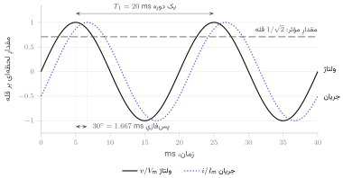
اختلافِ فاز. دو سینوسِ همبسامد را با اختلافِ فازشان مقایسه میکنیم. اگر جریانِ \(i(t) = I_\text{m}\sin(\omega t + \theta_i)\) با ولتاژِ معادلهٔ 7.1 مقایسه شود، زاویهٔ
\[ \varphi = \theta_v - \theta_i \tag{7.3}\]
نشان میدهد جریان چقدر عقب است. اگر \(\varphi > 0\) باشد، جریان پسفاز (به انگلیسی lagging) است و دیرتر به قله میرسد؛ اگر \(\varphi < 0\)، پیشفاز (به انگلیسی leading). اختلافِ فاز را میتوان به زمان برد: هر درجه \(T_1/360\) ثانیه است. اختلافِ فاز فقط میانِ دو سینوسِ همبسامد معنا دارد، چون تنها در آن صورت ثابت میماند.
مرجعِ زمان. کدام لحظه را \(t = 0\) بگیریم دلبخواه است؛ فقط اختلافِ فازها فیزیکی است. در درسهای شکلموجِ این فصل ولتاژ را از صفر شروع میکنیم (\(\sin\)، با \(\theta_v = 0\)). فصلِ ۳ فازور را با مرجعِ کسینوس تعریف کرد (بخش 3.3.5)؛ این تفاوت فقط جابهجاییِ مبدأِ زمان بهاندازهٔ ربعِ دوره است و هیچ اندازه یا اختلافِ فازی را عوض نمیکند.
مثال 7.1 (ولتاژِ 230 Vِ تغذیهٔ کمکی) پرسش. ولتاژِ هر فاز نسبت به نولِ تابلوی کمکیِ نیروگاهِ P، 230 Vِ مؤثر و 50 Hz است. مقدارِ قله، دوره و بسامدِ زاویهای چیست؟ ولتاژ در \(t = 2.5\ \text{ms}\) پس از گذر از صفر چند ولت است؟ اختلافِ فازِ \(30^\circ\) چند میلیثانیه است؟ ولتاژِ قلهٔ هر فاز در شبکهٔ 33 kV چیست؟ (مقدارِ مؤثر در بخش 7.2.3 تعریف میشود: قله برای سینوس \(\sqrt2\) برابرِ مقدارِ مؤثر است.)
پاسخ.
230 V RMS, 50 Hz: peak 325.3 V, period 20 ms, omega 314.16 rad/s
v(t) = 325.3 sin(314.16 t); at t = 2.5 ms: v = 230.0 V (angle 45 deg)
a 30 deg lag is 1.667 ms; one degree is 55.6 microseconds
33 kV line-to-line RMS: phase 19.05 kV RMS, phase peak 26.94 kVتفسیر. در \(2.5\ \text{ms}\)، یعنی یکهشتمِ دوره، زاویهٔ لحظهای \(45^\circ\) است و ولتاژ \(325.3 \times 0.7071 = 230.0\ \text{V}\)، یعنی برابرِ مقدارِ مؤثر؛ تصادفی نیست، چون \(\sin 45^\circ = 1/\sqrt2\). هر درجه فقط \(55.6\) میکروثانیه است؛ اندازهگیریِ زاویهٔ فاز با دقتِ یکدهمِ درجه یعنی دقتِ زمانیِ حدودِ شش میکروثانیه، و برای همین دستگاههای اندازهگیریِ فازور به ساعتِ دقیق همگام میشوند (فصلِ ۳۵). وارسی: یکاها: \(\omega\) رادیان بر ثانیه، \(\omega t\) بیبُعد (رادیان). قلهٔ فازِ 33 kV، یعنی 26.94 kV، برای عایق مهم است، نه برای گرما (بخش 7.2.3).
مثال 7.2 (اختلافِ فاز از روی گذر از صفر) پرسش. روی صفحهٔ یک نوساننما، ولتاژ و جریانِ یک فن از صفرِ رو به بالا با فاصلهٔ 3.0 ms میگذرند و جریان دیرتر میرسد. اختلافِ فاز چند درجه است؟ اگر همین فاصله در شبکهٔ 60 Hz دیده میشد چه؟
پاسخ. کسرِ دوره ضرب در \(360^\circ\):
\[ \varphi = 360^\circ\,\frac{\Delta t}{T_1} = 360^\circ \times 50 \times 0.003 = 54.0^\circ \]
در 60 Hz، \(64.8^\circ\) (سطرِ E02). جریان پسفاز است، رفتارِ بارِ سلفی مانندِ موتور (بخش 7.2.6). وارسی: \(3\ \text{ms}\) کمتر از ربعِ دوره (\(5\ \text{ms}\)) است، پس زاویه کمتر از \(90^\circ\) است (درست). محدودیت: اگر جریان اعوجاج داشته باشد، گذرِ از صفر تحتِ تأثیرِ هارمونیکها جابهجا میشود و «زاویهٔ فاز» را باید از مؤلفهٔ اصلی گرفت (بخش 7.4.7).
مثال 7.3 (وقتی بسامد 49.8 Hz است) پرسش. پس از قطعِ یک نیروگاهِ بزرگ، بسامدِ شبکه یک دقیقه روی 49.8 Hz میماند. دوره چقدر است و در این یک دقیقه چند دور کمتر از حالتِ اسمی طی میشود؟ ساعتی که زمان را با شمردنِ دورهای شبکه نگه میدارد چقدر عقب میافتد؟
پاسخ. \(T_1 = 1/49.8 = 20.08\ \text{ms}\). در یک دقیقه \(60 \times 49.8 = 2988\) دور بهجای ۳۰۰۰ دور: ۱۲ دور کمتر، یعنی ساعت \(12/50 = 0.24\ \text{s}\) عقب میافتد (سطرِ E03). تفسیر: کاهشِ بسامد یعنی ژنراتورهای همگامِ شبکه آهستهتر میچرخند، چون مصرف بیش از تولید است و انرژیِ جنبشیِ روتورها مصرف میشود (فصلهای ۸ و ۱۷). بهرهبردارِ شبکه این را با افزایشِ تولید جبران میکند؛ نیروگاهِ P ممکن است ملزم به پاسخ به بسامد باشد، که الزامش را شبکه تعیین میکند (فصلهای ۱۷ و ۲۰).
- دوره و بسامدِ زاویهایِ شبکهٔ 60 Hz را بیابید.
- ولتاژِ \(v = 100\sin(314.16\,t)\) در \(t = 5\ \text{ms}\) چند ولت است؟
- اگر جریان \(90^\circ\) پیشفاز باشد، چند میلیثانیه زودتر از ولتاژ به قله میرسد؟
- آیا میتوان اختلافِ فازِ یک سینوسِ 50 Hz و یک سینوسِ 250 Hz را تعریف کرد؟ چرا؟
- در شکل 7.1 کدام موج پسفاز است و از کجا معلوم است؟
- چرا اختلافِ فاز را بهجای زاویهٔ مطلق گزارش میکنیم؟
- اگر بسامد 50.2 Hz شود، ساعتِ شبکهشمار در یک ساعت چقدر جلو میافتد؟
- ولتاژِ قلهٔ خط به خطِ شبکهٔ 132 kV چند کیلوولت است؟
7.2.3 مقدارِ مؤثر و مقدارِ قله
شهود. «230 V» روی پلاکِ یک بخاری یعنی چه، وقتی ولتاژ هر لحظه از \(-325\) تا \(+325\) ولت تغییر میکند؟ پاسخ: بخاری با این ولتاژِ متناوب همانقدر گرم میشود که با 230 Vِ مستقیم. «مقدارِ مؤثر» یعنی مقدارِ جریانِ مستقیمی که همان اثرِ گرمایی را دارد.
ساختنِ تعریف. جریانِ \(i(t)\) از مقاومتِ \(R\) میگذرد. توانِ لحظهای \(R\,i^2\) است و میانگینش در یک دوره
\[ P = \frac{1}{T_1}\int_0^{T_1} R\,i^2(t)\,\mathrm{d}t \]
اگر جریانِ مستقیمِ \(I\) همین توان را بدهد، \(R\,I^2 = P\)، پس
\[ I_\text{rms} = \sqrt{\frac{1}{T_1}\int_0^{T_1} i^2(t)\,\mathrm{d}t} \tag{7.4}\]
نامِ انگلیسیاش (root mean square) دستورِ محاسبه است: مجذور کن، میانگین بگیر، جذر بگیر. به فارسی مقدارِ مؤثر میگوییم. قراردادِ کتاب: حرفِ بزرگِ بیاندیس (\(V\)، \(I\)) برای کمیتِ متناوب یعنی مقدارِ مؤثر؛ قله را \(V_\text{m}\) مینویسیم.
سینوس. با \(i = I_\text{m}\sin\omega t\) و \(\sin^2 x = \tfrac12(1 - \cos 2x)\)، میانگینِ جملهٔ کسینوسیِ \(2\omega t\) در یک دوره صفر است و میانگینِ \(\sin^2\) برابرِ \(\tfrac12\):
\[ I = \sqrt{\tfrac12 I_\text{m}^2} = \frac{I_\text{m}}{\sqrt2} \approx 0.7071\,I_\text{m} \tag{7.5}\]
این رابطه فقط برای سینوسِ خالص درست است. برای شکلموجهای دیگر معادلهٔ 7.4 را مستقیم به کار ببرید.
ضریبِ قله و ضریبِ شکل. دو نسبتِ بیبُعد شکلِ موج را خلاصه میکنند: ضریبِ قله (به انگلیسی crest factor)، \(k_\text{cr} = I_\text{m}/I\)، و ضریبِ شکل (به انگلیسی form factor)، \(k_\text{f} = I/\overline{|i|}\)، نسبتِ مقدارِ مؤثر به میانگینِ قدرِ مطلق. برای سینوس \(k_\text{cr} = \sqrt2 = 1.414\) و \(k_\text{f} = \pi/(2\sqrt2) = 1.1107\). ضریبِ شکل در بخش 7.4.10 دوباره ظاهر میشود، چون دستگاههای ارزان آن را فرض میکنند.
مثال 7.4 (مقدارِ مؤثرِ چند شکلموج) پرسش. مقدارِ مؤثر و ضریبِ قلهٔ سینوس، موجِ مربعی، موجِ مثلثی (همه با قلهٔ یک) و جریانِ اینورتری با 4 % هارمونیکِ پنجم و 3 % هفتم (A-040، فرضی، فصلِ ۳) را با نمونهبرداریِ ۲۰۰۰ نقطه در دوره حساب کنید و با نظریه مقایسه کنید.
پاسخ.
RMS / peak and crest factor (peak / RMS), from 2000 samples per period:
sine RMS 0.7071, crest 1.414
square RMS 1.0000, crest 1.000
triangle RMS 0.5774, crest 1.732
inverter current, 4 % 5th + 3 % 7th (A-040) RMS 0.7080, crest 1.427
theory: sine 1/sqrt2 = 0.7071; triangle 1/sqrt3 = 0.5774
inverter sqrt(1 + 0.04^2 + 0.03^2)/sqrt2 = 0.7080
mean of the rectified sine 0.6366 = 2/pi; form factor RMS/mean 1.1107تفسیر. موجِ مربعی بیشترین مقدارِ مؤثر را با قلهٔ یکسان دارد (هر لحظه «پُر» است) و موجِ مثلثی کمترین. برای جریانِ اینورتر، هارمونیکهای کوچک مقدارِ مؤثر را فقط 0.13 % بالا بردهاند، چون مقدارِ مؤثرِ مجموعِ هارمونیکها جذرِ مجموعِ مجذورهاست (معادلهٔ 7.6)، نه مجموعِ ساده؛ اما ضریبِ قله را از 1.414 به 1.427 رساندهاند، چون قلهها اتفاقاً همجهت افتادهاند. وارسی: عددهای نمونهبرداری تا چهار رقم با نظریه یکیاند.
مقدارِ مؤثرِ مجموعِ هارمونیکها. اگر جریان از یک مؤلفهٔ اصلی و هارمونیکهایی با بسامدهای مضربِ صحیح ساخته شده باشد، حاصلضربِ هر دو هارمونیکِ متفاوت در یک دوره میانگینِ صفر دارد (تعامدِ سینوسها، بخش 3.3.13). پس در میانگینِ \(i^2\) فقط مجذورها میمانند:
\[ I = \sqrt{I_1^2 + I_2^2 + I_3^2 + \cdots} = \sqrt{\sum_h I_h^2} \tag{7.6}\]
که \(I_h\) مقدارِ مؤثرِ هارمونیکِ مرتبهٔ \(h\) است. یک مؤلفهٔ ثابت (جریانِ مستقیم) هم با مجذورش در این جمع میآید.
مثال 7.5 (بخاریِ 2 kW و خطای «قله بهجای مؤثر») پرسش. بخاریِ مقاومتیِ 2 kW برای 230 V ساخته شده است. مقاومت، جریانِ مؤثر و قلهٔ جریان چیست؟ قلهٔ توانِ لحظهای چقدر است؟ اگر کسی آن را به منبعِ مستقیمِ 325.3 V وصل کند، به این خیال که «ولتاژِ شبکه همین است»، چه میشود؟
پاسخ. \(R = V^2/P = 230^2/2000 = 26.45\ \Omega\)، \(I = 230/26.45 = 8.70\ \text{A}\) و قلهٔ جریان \(8.70\sqrt2 = 12.30\ \text{A}\). توانِ لحظهای \(R\,i^2\) میانِ صفر و \(R I_\text{m}^2 = 2P = 4.0\ \text{kW}\) نوسان میکند و میانگینش 2 kW است. با 325.3 Vِ مستقیم توان \(325.3^2/26.45 = 4.00\ \text{kW}\) میشود، دو برابر (سطرهای E04 و E05): بخاری بیش از اندازه گرم میشود و ممکن است بسوزد.
درس: «230 V» همیشه مقدارِ مؤثر است، مگر صریحاً گفته شود. گرما و انرژی با مقدارِ مؤثر و عایق با قله سروکار دارند؛ جدولِ دادهای که نگوید کدام است، ناقص است.
- مقدارِ مؤثرِ جریانی با قلهٔ 100 A که سینوسی است، و قلهٔ جریانِ سینوسیِ 100 Aِ مؤثر چیست؟
- جریانی که نیمی از دوره 10 Aِ ثابت و نیمی صفر است چه مقدارِ مؤثری دارد؟ میانگینش چیست؟
- جریانِ 10 Aِ مستقیم بهاضافهٔ سینوسی با مقدارِ مؤثرِ 10 A، چه مقدارِ مؤثری دارد؟
- چرا مقدارِ مؤثرِ مجموعِ دو هارمونیکِ متفاوت با جمعِ مقدارهای مؤثرشان برابر نیست؟
- اگر ضریبِ قلهٔ یک جریان 3 باشد، و مقدارِ مؤثرش 10 A، قلهاش چیست؟ چه اهمیتی برای یک کلید دارد؟
- در مثال 7.4، چرا ضریبِ قلهٔ موجِ مربعی یک است؟
- یک کابل برای گرما بر پایهٔ کدام مقدار انتخاب میشود و عایقش بر پایهٔ کدام؟
- انرژیِ مصرفیِ بخاریِ مثال 7.5 در هشت ساعت چند کیلوواتساعت است؟
7.2.4 عددهای مختلط برای مهندسِ برق
مرور. فصلِ ۳ عددِ مختلط، شکلهای دکارتی و قطبی، فرمولِ اویلر و مزدوج را معرفی کرد (بخش 3.3.5 و معادلهٔ 3.22). اینجا همان ابزار را برای کارِ روزمرهٔ مدار ورزیده میکنیم. عددِ مختلطِ \(z = a + jb\) نقطهای در صفحه است؛ همان نقطه با اندازه و زاویه \(z = |z|\angle\varphi\) است، و
\[ a = |z|\cos\varphi, \quad b = |z|\sin\varphi, \quad |z| = \sqrt{a^2 + b^2}, \quad \varphi = \operatorname{atan2}(b, a) \tag{7.7}\]
قاعدههای کار.
- جمع و تفریق در شکلِ دکارتی: \((a_1 + jb_1) + (a_2 + jb_2) = (a_1 + a_2) + j(b_1 + b_2)\).
- ضرب و تقسیم در شکلِ قطبی: \(|z_1||z_2|\angle(\varphi_1 + \varphi_2)\) و \((|z_1|/|z_2|)\angle(\varphi_1 - \varphi_2)\).
- مزدوج: \(z^{*} = a - jb = |z|\angle{-\varphi}\)؛ \(z z^{*} = |z|^2\).
- ضرب در \(j\) یعنی چرخشِ \(90^\circ\) در جهتِ پادساعتگرد: \(j = 1\angle 90^\circ\)، \(-j = 1/j = 1\angle{-90^\circ}\).
- زاویه را با atan2 بگیرید، نه با \(\arctan(b/a)\): برای \(-3 - j4\) تابعِ \(\arctan\) همان \(53.13^\circ\)ِ عددِ \(3 + j4\) را میدهد، در حالی که زاویهٔ درست \(-126.87^\circ\) است.
مثال 7.6 (سه عملِ پرکاربرد) پرسش. (الف) امپدانسِ یک فیدرِ 6 kmی، \(\mathbf{Z} = 0.75 + j0.66\ \Omega\)، را قطبی کنید و افتِ \(\mathbf{Z}\mathbf{I}\) را برای جریانِ \(\mathbf{I} = 460.4\angle{-18.19^\circ}\ \text{A}\) بیابید. (ب) جریانِ \(230\angle 0^\circ\) ولت روی \(8 + j6\ \Omega\) را بیابید. (پ) دو سینوسِ \(141.4\sin\omega t\) و \(70.7\sin(\omega t - 90^\circ)\) را جمع کنید.
پاسخ. (الف) \(|\mathbf{Z}| = \sqrt{0.75^2 + 0.66^2} = 0.999\ \Omega\) و زاویه \(41.35^\circ\). حاصلضرب: اندازهها ضرب و زاویهها جمع میشوند:
\[ \mathbf{Z}\mathbf{I} = (0.999 \times 460.4)\angle(41.35^\circ - 18.19^\circ) = 460.0\angle 23.16^\circ\ \text{V} = 422.9 + j180.9\ \text{V} \]
(ب) تقسیم: \(230\angle 0^\circ / (10\angle 36.87^\circ) = 23\angle{-36.87^\circ}\ \text{A}\). (پ) مقدارهای مؤثر \(100\angle 0^\circ\) و \(50\angle{-90^\circ}\)؛ در دکارتی \(100 + j0\) و \(0 - j50\)، جمعشان \(100 - j50 = 111.8\angle{-26.57^\circ}\). پس مجموع \(158.1\sin(\omega t - 26.57^\circ)\) است (سطرهای E06 تا E08؛ برنامه همین را با جمعِ نمونهها، بیفازور، وارسی کرده است).
تفسیر. در (الف) بخشِ حقیقیِ افت، 422.9 V، با ولتاژِ فاز همجهت است و بیشترِ «افتِ اندازه» را میسازد؛ بخشِ موهومی بیشتر زاویه را میچرخاند (مثال 7.13). در (پ) جمعِ دو سینوس با دامنههای ۱۴۱ و ۷۱، سینوسی با دامنهٔ ۱۵۸ است، نه ۲۱۲: دامنههای ناهمفاز جمعِ ساده نمیشوند.
- \(5\angle{-36.87^\circ}\) را دکارتی و \(-4 + j3\) را قطبی بنویسید.
- \((2\angle 30^\circ)(3\angle 60^\circ)\) و \((6\angle 90^\circ)/(2\angle 30^\circ)\) را بیابید.
- \(j^2\)، \(j^3\) و \(1/j\) چیست؟
- چرا برای جمع شکلِ دکارتی و برای ضرب شکلِ قطبی را ترجیح میدهیم؟
- زاویهٔ \(-1 - j\) را با atan2 و با \(\arctan(b/a)\) حساب کنید و تفاوت را توضیح دهید.
- اگر \(\mathbf{I} = 10\angle{-30^\circ}\)، \(\mathbf{I}^{*}\) چیست و \(\mathbf{I}\mathbf{I}^{*}\) چه میشود؟
7.2.5 فازور: سینوس بهصورتِ یک عددِ مختلط
شهود. چرخ را به یاد آورید. اگر برداری با طولِ \(V_\text{m}\) با سرعتِ زاویهایِ \(\omega\) دورِ مبدأ بچرخد، تصویرش روی محورِ عمودی همان سینوسِ معادلهٔ 7.1 است (شکل 7.2). همهٔ ولتاژها و جریانهای یک مدارِ خطی با یک بسامد میچرخند؛ پس تصویرِ لحظهٔ صفرِ بردارها، یعنی طول و زاویهشان، برای توصیفِ کاملِ مدار کافی است. این تصویرِ ایستا فازور است.
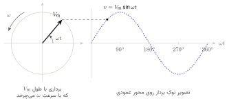
تعریف. با فرمولِ اویلر، \(V_\text{m}\sin(\omega t + \theta) = \operatorname{Im}\{V_\text{m}e^{j\theta}e^{j\omega t}\}\). جملهٔ \(e^{j\omega t}\) در همهٔ کمیتها مشترک است و کنار گذاشته میشود. فازور با حرفِ ضخیم نوشته میشود و اندازهاش را مقدارِ مؤثر میگیریم (قراردادِ کتاب، مانندِ فصلِ ۳):
\[ v(t) = \sqrt2\,V\sin(\omega t + \theta) \quad\longleftrightarrow\quad \mathbf{V} = V\angle\theta \tag{7.8}\]
برگشت از فازور به زمان: اندازه را در \(\sqrt2\) ضرب و زاویه را به \(\omega t\) بیفزایید.
چرا فازور کار را آسان میکند. سه ویژگی:
جمع: جمعِ دو سینوسِ همبسامد سینوسی همبسامد است و فازورش جمعِ فازورهاست. قانونِ جریانِ کیرشهف (جمعِ جریانهای یک گره صفر است) و قانونِ ولتاژ (جمعِ ولتاژهای یک حلقه صفر است) در هر لحظه برقرارند و پس برای فازورها هم برقرارند.
مشتق: مشتقِ زمانی، فازور را در \(j\omega\) ضرب میکند:
\[ \frac{\mathrm{d}}{\mathrm{d}t}\left[\sqrt2 V\sin(\omega t + \theta)\right] = \sqrt2\,\omega V\sin(\omega t + \theta + 90^\circ) \quad\longleftrightarrow\quad j\omega\,\mathbf{V} \tag{7.9}\]
پس معادلههای دیفرانسیلِ سلف و خازن به ضربِ جبری تبدیل میشوند.
انتگرال: تقسیم بر \(j\omega\).
محدودیتها. فازور فقط برای حالتِ پایدار (پس از میرا شدنِ گذراها)، فقط برای یک بسامد و فقط برای مدارِ خطی است. برای جریانی با هارمونیک، برای هر هارمونیک فازورِ جداگانهای با بسامدِ خودش میسازیم و نتیجهها را در زمان جمع میکنیم (بخش 7.4.7). هرگز فازورهای دو بسامدِ مختلف را با هم جمع نکنید.
مثال 7.7 (جریانِ دو واحد روی یک گره) پرسش. در یک نقطهٔ فیدرِ 33 kV، یک اینورترِ خورشیدیِ 5 MW با ضریبِ توانِ یک و یک توربینِ 5 MW با ضریبِ توانِ 0.95 پسفاز (جریانِ توربین \(18.19^\circ\) عقب) به هم میرسند. جریانِ هر فازِ اینورتر 87.48 A و جریانِ توربین 92.08 A است (رابطه در بخش 7.3.4). جریانِ فیدر پس از این گره چیست؟
پاسخ. قانونِ جریانِ کیرشهف با فازورها:
\[ \mathbf{I} = 87.48\angle 0^\circ + 92.08\angle{-18.19^\circ} = 177.3\angle{-9.33^\circ}\ \text{A} \]
(سطرِ E09). تفسیر: جمعِ حسابی 179.56 A است؛ جمعِ فازوری 1.3 % کمتر است چون دو جریان همفاز نیستند. این تفاوت کوچک است اما در جمعِ جریانِ دهها واحد با ضریبهای توانِ متفاوت، جمعِ حسابی همیشه بیشبرآورد است. وارسی: زاویهٔ حاصل، \(-9.33^\circ\)، میانِ دو زاویه است و به زاویهٔ جریانِ بزرگتر نزدیکتر (درست).
- فازورِ \(v(t) = 311\sin(\omega t - 60^\circ)\) را بنویسید.
- فازورِ \(\mathbf{I} = 10\angle 45^\circ\) کدام جریانِ زمانی است؟
- مشتقِ زمانیِ سینوسی با فازورِ \(\mathbf{V}\) چه فازوری دارد؟ چرا \(90^\circ\) جلو میافتد؟
- چرا نمیتوان فازورِ مؤلفهٔ 50 Hz و هارمونیکِ پنجمِ یک جریان را با هم جمع کرد؟
- در مثال 7.7 اگر توربین هم ضریبِ توانِ یک داشت، جمعِ فازوری و حسابی چه رابطهای داشتند؟
- قانونِ ولتاژِ کیرشهف را برای فازورها در یک حلقهٔ سهعنصری بنویسید.
7.2.6 سلف در جریانِ متناوب
شهود. سلف با تغییرِ جریان مخالفت میکند: جریانِ گذرنده میدانِ مغناطیسی میسازد و تغییرِ این میدان ولتاژی القا میکند که جلوی تغییر را میگیرد (بخش 6.2.16). در جریانِ مستقیمِ ثابت، سلف فقط یک سیم است؛ در جریانِ متناوب، که مدام تغییر میکند، سلف همیشه مخالفت میکند، و هرچه تغییر تندتر (بسامد بالاتر)، مخالفت بیشتر. هر سیمپیچ، هر ترانسفورماتور، هر موتور و حتی هر کابلِ بلند، سلف دارد.
رابطه. برای سلفِ ایدئال با ضریبِ خودالقایی \(L\) (یکای هانری، H):
\[ v_L = L\,\frac{\mathrm{d}i}{\mathrm{d}t} \quad\longrightarrow\quad \mathbf{V}_L = j\omega L\,\mathbf{I} = jX_L\,\mathbf{I}, \qquad X_L = \omega L = 2\pi f L \tag{7.10}\]
\(X_L\) راکتانسِ سلفی (به انگلیسی inductive reactance) با یکای اهم است. ضرب در \(j\) یعنی ولتاژ \(90^\circ\) جلوتر از جریان است؛ یا، به بیانِ رایجتر، جریانِ سلف \(90^\circ\) پسفاز است. یادآورِ قدیمیِ مهندسان: در سلف ولتاژ پیش از جریان میآید.
انرژی، نه توان. انرژیِ ذخیرهشده در میدانِ مغناطیسی \(\tfrac12 L i^2\) است. در هر ربعدوره که جریان رشد میکند، سلف انرژی میگیرد و در ربعِ بعد پس میدهد. میانگینِ توان در یک دوره صفر است: سلفِ ایدئال گرم نمیشود. اما جریانش از سیمها و ترانسفورماتورها میگذرد و آنها را گرم میکند. این همان «توانِ راکتیو» است که در بخش 7.4.2 دقیق میشود.
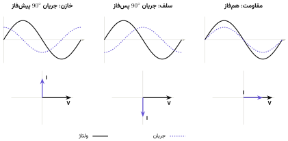
مثال 7.8 (یک راکتورِ 0.1 H روی 230 V) پرسش. سلفِ ایدئالِ 0.1 H به 230 V و 50 Hz وصل است. راکتانس، جریان، زاویهٔ جریان، بیشینهٔ انرژیِ ذخیرهشده و توانِ میانگین را بیابید. راکتانسِ یک سلفِ 10 mH در 50 Hz و در 250 Hz (هارمونیکِ پنجم) چیست؟
پاسخ. \(X_L = 2\pi \times 50 \times 0.1 = 31.42\ \Omega\)؛ \(\mathbf{I} = 230\angle 0^\circ/(j31.42) = 7.32\angle{-90^\circ}\ \text{A}\). بیشینهٔ انرژی در قلهٔ جریان: \(\tfrac12 L I_\text{m}^2 = \tfrac12 \times 0.1 \times (7.32\sqrt2)^2 = 5.36\ \text{J}\)؛ توانِ میانگین صفر. برای 10 mH: 3.14 Ω در 50 Hz و 15.71 Ω در 250 Hz (سطرهای E10 و E11).
تفسیر. راکتانسِ سلف با بسامد خطی بالا میرود: هارمونیکِ پنجم پنج برابر راکتانس میبیند. به همین دلیل سلفها جلوی جریانهای پُربسامد را میگیرند و در صافیهای اینورتر به کار میروند (فصلِ ۹). وارسی: یکا: \(\text{rad/s} \times \text{H} = \text{V}/\text{A} = \Omega\) (درست).
مثال 7.9 (اندوکتانسِ کابلِ 33 kV) پرسش. راکتانسِ کابلِ 33 kVِ شبکهٔ جمعآوری \(0.110\ \Omega/\text{km}\) است (A-032، فرضی؛ فصلِ ۳). اندوکتانسِ هر کیلومتر چقدر است؟
پاسخ. \(L = X/\omega = 0.110/314.16 = 0.350\ \text{mH/km}\) (سطرِ اولِ خروجیِ مثال 7.11). تفسیر: این اندوکتانس از میدانِ مغناطیسیِ میانِ هادیهای سه فاز میآید و به فاصلهٔ آنها بستگی دارد؛ کابلهای تکرشتهایِ مثلثیِ چسبیده اندوکتانسِ کمتری از کابلهای با فاصله دارند. مقدارِ واقعی را برگهٔ دادهٔ سازنده و روشِ نصب تعیین میکند (فصلِ ۲۴).
- راکتانسِ یک سلفِ 50 mH در 50 Hz و 60 Hz چیست؟
- اگر بسامد دو برابر شود، جریانِ یک سلف با ولتاژِ ثابت چه میشود؟
- چرا سلفِ ایدئال گرم نمیشود، اما جریانش مدار را گرم میکند؟
- فازورِ جریانِ سلفی با \(X_L = 10\ \Omega\) زیرِ \(100\angle 30^\circ\) ولت چیست؟
- در جریانِ مستقیمِ ثابت، سلف چه رفتاری دارد؟
- آیا ممکن است یک سیمپیچِ واقعی هم مقاومت و هم سلف داشته باشد؟ مدلش را بکشید.
7.2.7 خازن در جریانِ متناوب
شهود. خازن با تغییرِ ولتاژ مخالفت میکند. برای بالا بردنِ ولتاژش باید بار به آن بریزیم، و برای پایین آوردنش بار را بیرون بکشیم. در جریانِ متناوب ولتاژ مدام عوض میشود، پس خازن همیشه جریان میکشد، و هرچه بسامد بالاتر، جریان بیشتر. هر دو هادیِ جدا با عایقی میانشان، خازن است: بهویژه کابل، که هادیِ هر فاز درونِ یک پوشش (شیلدِ) زمینشده قرار دارد.
رابطه. برای خازنِ ایدئال با ظرفیت \(C\) (یکای فاراد، F):
\[ i_C = C\,\frac{\mathrm{d}v}{\mathrm{d}t} \quad\longrightarrow\quad \mathbf{I}_C = j\omega C\,\mathbf{V}, \qquad \mathbf{V} = -jX_C\,\mathbf{I}_C, \qquad X_C = \frac{1}{\omega C} \tag{7.11}\]
\(X_C\) راکتانسِ خازنی است. جریانِ خازن \(90^\circ\) جلوتر از ولتاژ است (پیشفاز). انرژیِ ذخیرهشده \(\tfrac12 C v^2\) است و توانِ میانگینِ خازنِ ایدئال، مانندِ سلف، صفر است. خازن و سلف قرینهٔ هماند: جریانِ یکی پیشفاز و دیگری پسفاز است، و وقتی کنارِ هم باشند، جریانِ راکتیوِ یکی جریانِ راکتیوِ دیگری را جبران میکند. این پایهٔ اصلاحِ ضریبِ توان است (بخش 7.4.3).
مثال 7.10 (خازنِ 100 μF و بانکِ خازنیِ 5 Mvar) پرسش. (الف) خازنِ 100 μF در 50 Hz چه راکتانسی دارد و روی 230 V چه جریانی میکشد؟ (ب) یک بانکِ خازنیِ سهفازِ 5 Mvar در 33 kV (اتصالِ ستاره) چه ظرفیتی در هر فاز دارد و جریانش چیست؟ (رابطهٔ توانِ راکتیوِ سهفاز در بخش 7.4.2.)
پاسخ. (الف) \(X_C = 1/(314.16 \times 100\times 10^{-6}) = 31.83\ \Omega\)؛ جریان \(230/31.83 = 7.23\ \text{A}\) با \(90^\circ\) پیشفازی. (ب) توانِ راکتیوِ سه فاز \(Q = 3\,V_\text{ph}^2\,\omega C = \omega C\,V_\text{LL}^2\)، پس
\[ C = \frac{Q}{\omega V_\text{LL}^2} = \frac{5\times 10^6}{314.16 \times (33\,000)^2} = 14.61\ \mu\text{F} \]
و جریان \(5\times 10^6/(\sqrt3 \times 33\,000) = 87.5\ \text{A}\) (سطرهای E12 و E13). تفسیر: ظرفیت در ولتاژِ متوسط کوچک است اما جریانش هماندازهٔ جریانِ یک واحدِ 5 MW است؛ کلید زدنِ چنین بانکی هجومِ جریان و گذرای ولتاژ میسازد که طراحِ پست باید برایش تدبیر کند (فصلهای ۲۴ و ۲۷).
مثال 7.11 (خازنِ کابلهای جمعآوری) پرسش. کابلِ 33 kVِ نیروگاهِ P ظرفیتِ \(0.218\ \mu\text{F/km}\) در هر فاز نسبت به شیلد دارد (A-052، فرضی؛ فصلِ ۴) و راکتانسِ \(0.110\ \Omega/\text{km}\). اندوکتانس، راکتانسِ خازنی، جریانِ شارژِ هر فاز، توانِ راکتیوی که کابل میسازد و انرژیِ ذخیرهشده را بیابید. چهار فیدرِ شش کیلومتری (A-091) در بیباری چه میکنند؟
پاسخ. ولتاژِ هر هادی نسبت به شیلدش ولتاژِ فاز است، \(U_0 = 33/\sqrt3 = 19.05\ \text{kV}\):
33 kV cable (A-032, A-052): X = 0.11 ohm/km -> L = X / omega = 0.350 mH/km
C = 0.218 microfarad/km -> X_C = 1/(omega C) = 14,601 ohm km
charging current per phase U0 omega C = 1.305 A/km
reactive generation 3 U0 I_c = 74.6 kvar/km
4 feeders x 6 km = 24 km: 31.3 A charging, 1.79 Mvar even at no load
energy stored per km, sum of 1/2 C v^2 over the three phases:
1.5 C U0^2 = 119 J, constant (the phases never peak together)تفسیر. حتی وقتی هیچ واحدی کار نمیکند، ۲۴ کیلومتر کابل 31.3 A جریانِ شارژ میکشد و 1.79 Mvar توانِ راکتیو میسازد. این عدد برای 33 kV و ۲۴ کیلومتر کوچک است، اما در کابلهای بلندِ ولتاژبالا (دهها کیلومتر در 132 kV یا بیشتر) جریانِ شارژ بخشِ بزرگی از ظرفیتِ کابل را میگیرد و جبران با راکتور لازم میشود؛ همین محدودیت است که کابلهای بسیار بلند را بهسوی جریانِ مستقیم میبرد (بخش 7.2.1). وارسی: \(3 U_0 I_c = 3 \times 19\,053 \times 1.305 = 74.6\ \text{kvar/km}\) (درست). اثرِ این توانِ راکتیو بر ترازِ نیروگاه در مثال 7.52 دیده میشود.
- راکتانسِ خازنِ 10 μF در 50 Hz و در 250 Hz چیست؟
- جریانِ شارژِ کابل با ولتاژ چه رابطهای دارد؟ توانِ راکتیوش چه؟
- چرا کابلِ بیبار هم جریان میکشد؟ این جریان از کجا به کجا میرود؟
- اگر بانکِ 5 Mvar بهجای 33 kV در 30 kV کار کند، چند مگاوار میدهد؟
- در شکل 7.3، چرا موجِ جریانِ خازن پیش از ولتاژ به قله میرسد؟
- خازنِ ایدئال چه توانِ میانگینی مصرف میکند؟ خازنِ واقعی چرا کمی گرم میشود؟
7.2.8 امپدانس و ادمیتانس
تعریف. برای هر عنصر یا شبکهٔ دوسرِ خطی، نسبتِ فازورِ ولتاژ به فازورِ جریان امپدانس (به انگلیسی impedance) است:
\[ \mathbf{Z} = \frac{\mathbf{V}}{\mathbf{I}} = R + jX = |\mathbf{Z}|\angle\varphi, \qquad \mathbf{Y} = \frac{1}{\mathbf{Z}} = G + jB \tag{7.12}\]
بخشِ حقیقی، \(R\)، مقاومت است و بخشِ موهومی، \(X\)، راکتانس: برای سلف \(X = +\omega L\) و برای خازن \(X = -1/(\omega C)\). وارونِ امپدانس ادمیتانس (به انگلیسی admittance) است با یکای زیمنس؛ بخشِ حقیقیاش رسانایی \(G\) و بخشِ موهومیاش سوسپتانس \(B\). زاویهٔ امپدانس، \(\varphi\)، همان اختلافِ فازِ ولتاژ و جریانِ معادلهٔ 7.3 است: مثبت برای بارِ سلفی (جریانِ پسفاز)، منفی برای بارِ خازنی.
قانونِ اهمِ متناوب و قانونهای کیرشهف. \(\mathbf{V} = \mathbf{Z}\mathbf{I}\) همان قانونِ اهم است، با عددهای مختلط. امپدانسهای سری جمع میشوند و ادمیتانسهای موازی جمع میشوند؛ تقسیمِ ولتاژ و جریان، معادلِ تونن و روشِ ولتاژِ گره همه عیناً مانندِ فصلِ ۶ کار میکنند (بخش 6.2.11)، فقط با عددهای مختلط. یعنی هرچه برای جریانِ مستقیم آموختید، با یک تعمیم، برای جریانِ متناوبِ حالتِ پایدار هم درست است.
مثال 7.12 (سه شبکهٔ کوچک) پرسش. (الف) سیمپیچِ یک موتور با مدلِ \(8 + j6\ \Omega\) روی 230 V: اندازهٔ امپدانس، جریان، ضریبِ توان و زاویه. (ب) مقاومتِ 10 Ω موازی با خازنی با راکتانسِ 20 Ω: ادمیتانس و امپدانسِ معادل. (پ) منبعِ 230 V با امپدانسِ داخلیِ \(0.05 + j0.10\ \Omega\) باری با \(2 + j1\ \Omega\) را تغذیه میکند: ولتاژِ بار و افتِ ولتاژ.
پاسخ. (الف) \(|\mathbf{Z}| = 10\ \Omega\)، \(I = 23.0\ \text{A}\)، زاویه \(36.87^\circ\) و ضریبِ توان \(\cos 36.87^\circ = 0.80\) (سطرِ E14). (ب) \(\mathbf{Y} = 1/10 + 1/(-j20) = 0.100 + j0.050\ \text{S}\) و \(\mathbf{Z} = 8.00 - j4.00 = 8.944\angle{-26.57^\circ}\ \Omega\): شبکه خازنی است (سطرِ E15). (پ) با تقسیمِ ولتاژ:
\[ \mathbf{V}_\text{L} = 230\,\frac{2 + j1}{(0.05 + j0.10) + (2 + j1)} = 221.1\angle{-1.65^\circ}\ \text{V} \]
یعنی افتِ 3.89 % (سطرِ E16). تفسیر (پ): امپدانسِ منبع فقط حدودِ 5 % امپدانسِ بار است، اما افت به 3.9 % رسیده، چون زاویهٔ دو امپدانس نزدیک است و افتها همجهت جمع میشوند. اگر بار مقاومتیِ خالص بود، افت کمتر میشد: جملهٔ \(XQ\)ِ مثال 7.13.
مثال 7.13 (افتِ ولتاژِ یک فیدرِ جمعآوری) پرسش. یک فیدرِ 33 kVِ نیروگاهِ P، 25 MW را با ضریبِ توانِ 0.95 پسفاز در فاصلهٔ 6 km به پست میآورد (A-091؛ کابل با \(0.125 + j0.110\ \Omega/\text{km}\)، A-032). همهٔ جریان را در انتهای فیدر فرض کنید و ولتاژِ پست را 33 kV بگیرید. افتِ ولتاژِ دقیق را با فازورها بیابید و با تقریبِ رایج مقایسه کنید. (این همان روشِ مثال 3.27 است، روی فیدرِ واقعیِ نیروگاه.)
پاسخ. مدلِ تکفاز (بخش 7.3.4): ولتاژِ پست مرجعِ فاز \(\mathbf{V}_\text{end} = 19\,053\angle 0^\circ\ \text{V}\)، جریان \(\mathbf{I} = 460.4\angle{-18.19^\circ}\ \text{A}\)، و ولتاژِ سرِ دیگر \(\mathbf{V}_\text{start} = \mathbf{V}_\text{end} + \mathbf{Z}\mathbf{I}\):
one 33 kV feeder, 25 MW at pf 0.95 lagging,
6 km of 0.125 + j0.11 ohm/km (conductor at 20 C)
I = 460.4 A at -18.19 deg; Z = 0.750 + j0.660 ohm
V_end = 19.053 kV phase; V_start = V_end + Z I = 19.4763 kV /_ 0.532 deg
drop (line-to-line): exact 734.0 V = 2.224 %
approximation (R P + X Q)/V: 732.5 V
the angle difference is small; the magnitude difference is the dropتفسیر. افت 2.22 % است. تقریبِ \((RP + XQ)/V\) با پاسخِ دقیق فقط 1.5 V اختلاف دارد، چون زاویهٔ میانِ دو ولتاژ کوچک است (\(0.53^\circ\)). دو جمله را جدا ببینید: \(RP = 0.75 \times 25 = 18.75\) و \(XQ = 0.66 \times 8.22 = 5.42\) (به مگاوات در اهم، بر 33 kV)؛ یعنی بیش از یکپنجمِ افت (22 %) از توانِ راکتیو میآید. نکتهای مهم برای نیروگاه: اینجا جریان از واحدها به سوی پست میرود، پس ولتاژِ سرِ واحدها بالاتر از پست است: برای یک فیدرِ تولید، «افت» در واقع افزایشِ ولتاژ در محلِ واحدهاست. اگر واحدها توانِ راکتیو جذب کنند (\(Q\) منفی از دیدِ پست)، جملهٔ \(XQ\) علامتش عوض میشود و این افزایش کم میشود. فصلهای ۲۰ و ۲۸ از همین برای کنترلِ ولتاژ استفاده میکنند. محدودیت: واقعاً واحدها در طولِ فیدر پخشاند و جریان در بخشهای دورتر کمتر است؛ فرضِ «همهٔ جریان در انتها» محافظهکارانه است (تقریباً دو برابرِ افتِ بارِ یکنواخت).
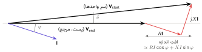
تقریبِ افتِ ولتاژ. از شکل 7.4: اگر زاویهٔ میانِ دو ولتاژ کوچک باشد، افتِ اندازه تقریباً تصویرِ \(\mathbf{Z}\mathbf{I}\) روی امتدادِ ولتاژ است: \(\Delta V \approx R I\cos\varphi + X I\sin\varphi\). با ضرب در \(3V_\text{ph}\) و \(P = 3V_\text{ph}I\cos\varphi\) و \(Q = 3V_\text{ph}I\sin\varphi\):
\[ \frac{\Delta V}{V} \approx \frac{R\,P + X\,Q}{V_\text{LL}^2} \tag{7.13}\]
این تقریب ستونِ همهٔ برآوردهای سریعِ ولتاژ در شبکههای قدرت است. در شبکههای ولتاژبالا که \(X \gg R\)، ولتاژ بیشتر از توانِ راکتیو اثر میپذیرد تا توانِ اکتیو؛ در شبکههای ولتاژپایین که \(R\) بزرگتر است، هر دو مهماند.
- امپدانسِ سریِ \(R = 3\ \Omega\) و \(X_L = 4\ \Omega\) و ادمیتانسِ آن را بیابید.
- اگر \(\mathbf{Z} = 5\angle{-53.13^\circ}\)، بار سلفی است یا خازنی؟ ضریبِ توانش؟
- معادلِ تونن را برای یک منبعِ متناوب با امپدانسِ داخلی چگونه تعمیم میدهید؟
- در مثال 7.13 اگر ضریبِ توان یک بود، افتِ تقریبی چند درصد میشد؟
- چرا در یک فیدرِ تولید، ولتاژِ سرِ واحد بالاتر از پست است؟
- در معادلهٔ 7.13، اگر \(Q\) منفی شود چه رخ میدهد؟
- در شبکهای با \(X/R = 10\)، کدام کمیت ولتاژ را بیشتر جابهجا میکند؟
- امپدانسِ دو شاخهٔ موازیِ \(10\ \Omega\) و \(j10\ \Omega\) را بیابید.
7.2.9 تشدید: وقتی سلف و خازن هم را خنثی میکنند
شهود. تاب را در نظر بگیرید: اگر با بسامدِ طبیعیاش هُلش دهید، با هُلهای کوچک دامنه بسیار بزرگ میشود. مدارِ سلف و خازن هم بسامدِ طبیعی دارد: انرژی میانِ میدانِ مغناطیسیِ سلف و میدانِ الکتریکیِ خازن رفتوبرگشت میکند. اگر منبعی با همان بسامد آن را تحریک کند، جریان یا ولتاژ میتواند بسیار بزرگ شود. در شبکهٔ 50 Hz، تشدید معمولاً در بسامدِ یکی از هارمونیکها رخ میدهد و هارمونیکِ کوچکِ یک اینورتر را بزرگ میکند.
تشدیدِ سری. در مدارِ سریِ \(R\)، \(L\) و \(C\):
\[ \mathbf{Z}(\omega) = R + j\left(\omega L - \frac{1}{\omega C}\right), \qquad \omega_0 = \frac{1}{\sqrt{LC}}, \qquad f_0 = \frac{1}{2\pi\sqrt{LC}} \tag{7.14}\]
در \(f_0\) راکتانسها برابر و قرینهاند، امپدانس کمینه و برابرِ \(R\) است و جریان بیشینه. ضریبِ کیفیت (به انگلیسی quality factor)،
\[ Q_\text{f} = \frac{\omega_0 L}{R} = \frac{1}{R}\sqrt{\frac{L}{C}} \tag{7.15}\]
نشان میدهد تشدید چقدر تیز است و ولتاژِ دو سرِ سلف یا خازن در تشدید چند برابرِ ولتاژِ منبع میشود. (نماد را \(Q_\text{f}\) مینویسیم تا با توانِ راکتیو، \(Q\)، اشتباه نشود.)
مثال 7.14 (تشدیدِ سری) پرسش. مدارِ سری با \(R = 2\ \Omega\)، \(L = 0.1\ \text{H}\) و \(C = 100\ \mu\text{F}\): بسامدِ تشدید، ضریبِ کیفیت و امپدانس در چند بسامد. اگر این مدار به 230 V در \(f_0\) وصل شود، ولتاژِ دو سرِ سلف چیست؟
پاسخ.
series R 2.0 ohm, L 0.1 H, C 100 microfarad: f0 = 50.33 Hz, Q = 15.8
f 25.00 Hz: |Z| = 48.00 ohm, angle -87.61 deg
f 45.00 Hz: |Z| = 7.37 ohm, angle -74.25 deg
f 50.33 Hz: |Z| = 2.00 ohm, angle 0.00 deg
f 55.00 Hz: |Z| = 5.97 ohm, angle 70.41 deg
f 100.00 Hz: |Z| = 46.96 ohm, angle 87.56 deg
at resonance the reactances cancel; the current is limited by R aloneدر تشدید \(I = 230/2 = 115\ \text{A}\) و ولتاژِ سلف (و خازن) \(115 \times 31.62 = 3637\ \text{V}\) = \(Q_\text{f} \times 230\) (سطرِ E17).
تفسیر. بسامدِ تشدیدِ این مدارِ آموزشی تقریباً 50 Hz است. در تشدید، ولتاژِ هر عنصر شانزده برابرِ ولتاژِ منبع است: خازنی که برای 400 V ساخته شده، با ولتاژِ منبعِ 230 V زیرِ 3.6 kV قرار میگیرد و خراب میشود. در زیرِ \(f_0\) مدار خازنی است (زاویهٔ منفی) و در بالای آن سلفی. شکل 7.5 منحنیِ اندازهٔ امپدانس را نشان میدهد.
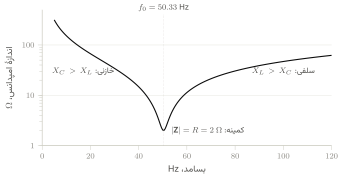
تشدیدِ موازی با شبکه. از دیدِ یک شینه، شبکه تقریباً یک سلف است (امپدانسِ اتصالِ کوتاه) و خازنهای متصل به شینه (کابلها، بانکهای خازنی، صافیهای اینورترها) با آن موازیاند. این ترکیب در بسامدی تشدیدِ موازی دارد که امپدانسش بیشینه است: جریانِ هارمونیکِ کوچکی که در آن بسامد تزریق شود، ولتاژِ هارمونیکِ بزرگی میسازد. با امپدانسِ شبکه بر پایهٔ توانِ اتصالِ کوتاه \(S_\text{sc}\) (ظرفیتِ شبکه برای دادنِ جریانِ خطا، فصلِ ۲۶) و توانِ راکتیوِ خازنها \(Q_\text{c}\)، هر دو در همان ولتاژ:
\[ X_\text{sc} = \frac{V_\text{LL}^2}{S_\text{sc}}, \quad X_C = \frac{V_\text{LL}^2}{Q_\text{c}} \quad\Rightarrow\quad h_\text{r} = \frac{f_\text{r}}{f_1} = \sqrt{\frac{X_C}{X_\text{sc}}} = \sqrt{\frac{S_\text{sc}}{Q_\text{c}}} \tag{7.16}\]
\(h_\text{r}\) مرتبهٔ هارمونیکی است که تشدید در آن رخ میدهد. این رابطهٔ ساده ابزارِ غربال است، نه طراحی.
مثال 7.15 (تشدیدِ شینهٔ 33 kVِ نیروگاهِ P) پرسش. توانِ اتصالِ کوتاهِ شبکه در شینهٔ 33 kVِ پست 500 MVA فرض شده است (A-100، فرضی). مرتبهٔ تشدید را برای کابلهای جمعآوری بهتنهایی (1.79 Mvar، مثال 7.11) و با بانکهای خازنیِ فرضیِ 5 و 15 Mvar بیابید.
پاسخ.
parallel resonance with the network, h = sqrt(S_sc / Q_c), S_sc = 500 MVA
at the 33 kV bus (A-100):
collector cables at no load Q_c 1.79 Mvar: h = 16.71 ( 836 Hz)
cables + 5 Mvar bank Q_c 6.79 Mvar: h = 8.58 ( 429 Hz)
cables + 15 Mvar bank Q_c 16.79 Mvar: h = 5.46 ( 273 Hz)
an order near 5, 7, 11 or 13 (where inverters inject current)
needs a harmonic study (chapter 27)تفسیر. کابلها بهتنهایی تشدید را حوالیِ هارمونیکِ ۱۷ میگذارند، جایی که اینورترها جریانِ کمی دارند. اما یک بانکِ 15 Mvar تشدید را به 5.46، نزدیکِ هارمونیکِ پنجم، میآورد: درست همانجا که اینورترها و بارهای غیرخطی جریان تزریق میکنند. افزودنِ خازن برای «اصلاحِ ضریبِ توان» بیمطالعهٔ هارمونیکی میتواند مشکلی بسیار بزرگتر بسازد. راهِ حلِ رایج، خازنِ میرا یا صافیِ تنظیمشده است: سلفی سری با خازن که تشدید را از هارمونیکهای اصلی دور میکند (فصلهای ۲۷ و ۲۸). محدودیت: رابطهٔ معادلهٔ 7.16 مقاومت، بارها، و امپدانسِ وابسته به بسامدِ شبکه را نادیده میگیرد؛ مطالعهٔ هارمونیکی با دادهٔ شبکه این را دقیق میکند.
- بسامدِ تشدیدِ \(L = 10\ \text{mH}\) و \(C = 1\ \mu\text{F}\) چیست؟
- اگر \(C\) چهار برابر شود، \(f_0\) چه میشود؟
- در تشدیدِ سری، اگر \(R\) نصف شود، ولتاژِ دو سرِ خازن چه میشود؟
- چرا تشدیدِ موازی برای هارمونیکها خطرناک است و تشدیدِ سری برای خازن؟
- اگر \(S_\text{sc} = 1000\ \text{MVA}\) و \(Q_\text{c} = 10\ \text{Mvar}\)، مرتبهٔ تشدید چیست؟
- افزایشِ توانِ اتصالِ کوتاهِ شبکه (شبکهٔ قویتر) تشدید را به کدام سو میبرد؟
- در شکل 7.5، در بسامدِ 25 Hz مدار سلفی است یا خازنی؟
- چرا رابطهٔ معادلهٔ 7.16 فقط برای غربال است؟
7.2.10 ترانسفورماتورِ ایدئال و انتقالِ امپدانس
شهود. دو سیمپیچ را روی یک هستهٔ آهنیِ مشترک ببندید. جریانِ متناوبِ سیمپیچِ اول شارِ متناوبی در هسته میسازد و همین شار از سیمپیچِ دوم هم میگذرد و در آن ولتاژ القا میکند (قانونِ فارادی، بخش 6.2.3). چون شار در هر دور یکی است، ولتاژِ هر سیمپیچ با شمارِ دورهایش متناسب است. این القای متقابل پایهٔ همهٔ ترانسفورماتورهای نیروگاه است.
ترانسفورماتورِ ایدئال. با شمارِ دورهای \(N_1\) و \(N_2\) و نسبتِ تبدیلِ \(n = N_1/N_2\)، اگر سیمپیچها بیمقاومت باشند، همهٔ شار از هر دو بگذرد و هسته برای ساختنِ شار جریانی نخواهد:
\[ \frac{\mathbf{V}_1}{\mathbf{V}_2} = n, \qquad \frac{\mathbf{I}_1}{\mathbf{I}_2} = \frac{1}{n}, \qquad \mathbf{V}_1\mathbf{I}_1^{*} = \mathbf{V}_2\mathbf{I}_2^{*} \tag{7.17}\]
ترانسفورماتورِ ایدئال توان را بیکموکاست میگذراند: ولتاژ را \(n\) برابر میکند و جریان را \(n\) برابر کوچک. در سهفاز، \(n\) را نسبتِ ولتاژهای خط میگیریم (و جابهجاییِ فازِ گروهِ برداری جداگانه حساب میشود، بخش 7.3.3).
انتقالِ امپدانس. امپدانسِ \(\mathbf{Z}_2\) که در سمتِ دوم بسته شده، از سمتِ اول چنین دیده میشود:
\[ \mathbf{Z}'_2 = \frac{\mathbf{V}_1}{\mathbf{I}_1} = \frac{n\mathbf{V}_2}{\mathbf{I}_2/n} = n^2\,\mathbf{Z}_2 \tag{7.18}\]
یعنی امپدانس با مجذورِ نسبت منتقل میشود. یک میلیاهمِ ناچیز در سمتِ 0.69 kV از سمتِ 33 kV دو اهم دیده میشود. سامانهٔ پریونیت (بخش 7.3.5) این ضرب را خودکار انجام میدهد: مبناهای دو سمت هم دقیقاً \(n^2\) برابر فرق دارند.
ترانسفورماتورِ واقعی. سه پدیده ترانسفورماتورِ واقعی را از ایدئال جدا میکند و در مدارِ معادلش ظاهر میشود (فصلِ ۲۵): مقاومتِ سیمپیچها (تلفِ بار، که با مجذورِ جریان بالا میرود، فصلِ ۵)؛ شارِ نشتی که از هر دو سیمپیچ نمیگذرد و راکتانسِ نشتی میسازد (همان «امپدانسِ درصدی» روی پلاک، که افتِ ولتاژ، جذبِ توانِ راکتیو و محدودیتِ جریانِ خطا را تعیین میکند)؛ و شاخهٔ مغناطیسکننده، جریانِ کوچکی که هسته برای ساختنِ شار میخواهد و تلفِ بیباریِ هسته.
مثال 7.16 (ترانسفورماتورِ واحد از دو سو) پرسش. ترانسفورماتورِ واحدِ 33/0.69 kV با 5.5 MVA و امپدانسِ 6 % (A-102، فرضی) است. راکتانسِ آن را از هر دو سو به اهم بیابید و نسبتشان را با \(n^2\) مقایسه کنید. یک شینهٔ ولتاژپایین با 1 mΩ از سمتِ 33 kV چگونه دیده میشود؟ جریانِ مغناطیسکنندهٔ ترانسفورماتورِ صادرات (0.3 %) چند آمپر است و چه توانِ راکتیوی دارد؟
پاسخ.
unit transformer 33/0.69 kV, 5.5 MVA, 6 % (A-102): ratio n = 47.83, n^2 =
2,287
Z_base LV 86.56 mohm -> X = 5.194 mohm seen from 0.69 kV
Z_base HV 198.0 ohm -> X = 11.88 ohm seen from 33 kV; ratio 2,287 = n^2
a 1.0 mohm LV busbar appears as 2.29 ohm from the 33 kV side
the same 6 % on both sides: per unit hides the turns ratio
export transformer 120 MVA at 132 kV: rated current 524.9 A; magnetising 0.3 %
= 1.57 A
its reactive power 0.36 Mvar flows whenever the transformer is energised
ideal transformer: V1 I1 = V2 I2 (no loss); the real one adds leakage,
winding resistance and the magnetising branch (chapter 25)تفسیر. همان 6 % در سمتِ ولتاژپایین 5.2 mΩ و در سمتِ ولتاژبالا 11.9 Ω است: نسبتشان دقیقاً 2287، مجذورِ نسبتِ تبدیل. به همین دلیل امپدانسهای بسیار کوچکِ سمتِ ولتاژپایین (شینه، کابلهای کوتاه، اتصالها) برای جریانِ خطا و تلفات مهماند: در جریانهای چند هزار آمپری کار میکنند. جریانِ مغناطیسکنندهٔ ترانسفورماتورِ صادرات فقط 1.6 A است، اما 0.36 Mvar توانِ راکتیوی است که هر لحظهای که ترانسفورماتور برقدار است از شبکه گرفته میشود، حتی شب (مثال 7.52). وارسی: \(11.88/0.005194 = 2287\) و \(47.83^2 = 2288\) (درست با گرد کردن).
- ترانسفورماتورِ 20/0.4 kV با بارِ 0.5 Ω در سمتِ ولتاژپایین: امپدانس از سمتِ 20 kV؟
- اگر جریانِ سمتِ 0.69 kV 4000 A باشد، جریانِ سمتِ 33 kV در ترانسفورماتورِ ایدئال چیست؟
- چرا امپدانسِ درصدیِ ترانسفورماتور از دو سو یکی است اما امپدانسِ اهمی نه؟
- سه تفاوتِ ترانسفورماتورِ واقعی با ایدئال را بنویسید و پیامدِ هر کدام را بگویید.
- چرا ترانسفورماتورِ برقدارِ بیبار هم توانِ راکتیو میگیرد؟
7.2.11 تحلیلِ گره با عددهای مختلط
از فصلِ ۶ تا شبکهٔ متناوب. روشِ ولتاژِ گره (بخش 6.2.11) برای شبکهٔ متناوب همان است، با سه تفاوت: رساناییها ادمیتانسِ مختلط میشوند؛ هر شاخه با امپدانسِ سری و (برای کابلها) سوسپتانسِ موازیِ نیمی در هر سر مدل میشود؛ و منابعِ نیروگاه نه «جریانِ ثابت» بلکه «توانِ ثابت» تزریق میکنند. ماتریسِ ادمیتانسِ گرهها (فصلِ ۳) با این قاعده ساخته میشود: عنصرِ قطری جمعِ ادمیتانسهای متصل به گره، و عنصرِ غیرقطری منفیِ ادمیتانسِ شاخهٔ میانِ دو گره.
الگوریتم. چون جریانِ تزریقی به ولتاژ وابسته است (\(\mathbf{I}_k = (\mathbf{S}_k/\mathbf{V}_k)^{*}\))، دستگاه غیرخطی است و با تکرار حل میشود:
۱. همهٔ ولتاژها را یک پریونیت با زاویهٔ صفر حدس بزن.
۲. جریانِ تزریقیِ هر گره را از توانِ آن و ولتاژِ حدسی بساز.
۳. دستگاهِ خطیِ ادمیتانس را برای ولتاژهای تازه حل کن.
۴. اگر ولتاژها دیگر تغییر نمیکنند، بایست؛ وگرنه به گامِ ۲ برگرد.
این سادهترین شکلِ پخشِ بار است؛ روشِ نیوتن–رافسونِ فصلِ ۳ (بخش 3.3.11) همان مسئله را سریعتر و مطمئنتر حل میکند و ابزارهای مطالعهٔ شبکه آن را به کار میبرند (فصلِ ۲۸).
مثال 7.17 (ولتاژ در طولِ نیروگاه) پرسش. یک مدلِ سهگرهیِ پریونیت (مبنای 100 MVA) بسازید: شبکه با ولتاژِ 1.0 pu پشتِ امپدانسِ A-109؛ گرهٔ ۱ نقطهٔ اتصال؛ ترانسفورماتورِ صادرات (A-102، با مقاومتی از تلفِ بارِ A-092)؛ گرهٔ ۲ شینهٔ 33 kV با 75 MWِ سه فیدرِ دیگر بهصورتِ یکجا؛ یک فیدرِ ششکیلومتری با خازنِ کابل؛ گرهٔ ۳ انتهای فیدر با 25 MW. ولتاژها را در دو حالت بیابید: واحدها با ضریبِ توانِ یک، و واحدهای انتهای فیدر با جذبِ 5 Mvar.
پاسخ.
nodal solution, per unit on 100 MVA (75 MW at the bus, 25 MW at the end of one
feeder):
units at pf 1:
POC 132 kV |V| 0.9949 pu = 131.33 kV, angle 5.76 deg
bus 33 kV |V| 0.9927 pu = 32.76 kV, angle 11.54 deg
feeder end |V| 1.0098 pu = 33.32 kV, angle 12.40 deg
to the grid 99.30 MW, -9.98 Mvar; losses 0.70 MW
feeder-end units absorb 5 Mvar:
POC 132 kV |V| 0.9895 pu = 130.61 kV, angle 5.82 deg
bus 33 kV |V| 0.9820 pu = 32.41 kV, angle 11.71 deg
feeder end |V| 0.9962 pu = 32.88 kV, angle 12.79 deg
to the grid 99.26 MW, -15.26 Mvar; losses 0.74 MW
pf 1 at the units is not pf 1 at the POC: the transformer absorbs
about 10 Mvar, so the POC voltage falls a little instead of rising
1 % as with pf 1 at the POC (integrated example 3)تفسیر. سه درس. (۱) ولتاژِ انتهای فیدر 1.7 % بالاتر از شینه است (1.0098 در برابرِ 0.9927 pu): افزایشِ ولتاژ در طولِ فیدرِ تولید، همان نتیجهٔ مثال 7.13 اما این بار با همهٔ اجزای شبکه. (۲) با جذبِ 5 Mvar در انتهای فیدر، ولتاژِ آنجا 1.4 % پایین میآید: واحدها ولتاژِ محلِ خودشان را با توانِ راکتیو تنظیم میکنند. (۳) با واحدهای ضریبِ توانِ یک، نیروگاه در نقطهٔ اتصال حدودِ 10 Mvar از شبکه میگیرد، چون ترانسفورماتور توانِ راکتیو مصرف میکند (مثال 7.52)؛ پس ولتاژِ نقطهٔ اتصال کمی پایین میآید، نه آن 1 % افزایشی که مثال 7.53 با فرضِ ضریبِ توانِ یک در نقطهٔ اتصال داد. «ضریبِ توانِ یک» همیشه باید با محلش گفته شود. زاویهٔ ولتاژِ شینه حدودِ \(11.5^\circ\) از شبکه جلوتر است: نشانهٔ جریانِ توانِ اکتیو از نیروگاه به شبکه. محدودیت: فیدرهای یکجا و واحدهای توانثابت؛ مطالعهٔ واقعی همهٔ فیدرها، ترانسفورماتورهای واحد، تنظیمِ پلهٔ ترانسفورماتور و کنترلِ ولتاژِ نیروگاه را دارد (فصلهای ۲۰ و ۲۸).
- ماتریسِ ادمیتانسِ دو گره با یک شاخهٔ \(\mathbf{Z} = j0.1\ \text{pu}\) را بنویسید.
- چرا تزریقِ توانِ ثابت دستگاه را غیرخطی میکند؟
- خازنِ کابل چگونه در ماتریسِ ادمیتانس وارد میشود؟
- در مثال 7.17، چرا ولتاژِ انتهای فیدر از شینه بیشتر است؟
- چرا «ضریبِ توانِ یک» بیذکرِ محل ناقص است؟
- زاویهٔ مثبتِ ولتاژِ شینه نسبت به شبکه چه میگوید؟
7.2.12 حدِ مدلِ حالتِ پایدار
فازور و امپدانس فرض میکنند مدار مدتها با یک سینوسِ ثابت کار کرده است. سه موقعیت این فرض را میشکنند:
- گذرا. پس از هر کلیدزنی، اتصالِ کوتاه یا تغییرِ ناگهانیِ بار، جریان و ولتاژ پیش از رسیدن به حالتِ پایدارِ تازه یک مؤلفهٔ گذرا دارند که با ثابتِ زمانیِ مدار میرا میشود. برای مدارِ سریِ \(R\) و \(L\)، \(\tau = L/R\)؛ برای \(L = 0.1\ \text{H}\) و \(R = 2\ \Omega\)، \(\tau = 50\ \text{ms}\) و پس از \(5\tau = 250\ \text{ms}\) گذرا کمتر از 0.7 % مانده است (سطرِ E18). در شبکههای ولتاژبالا با \(X/R\) بزرگ، جریانِ اتصالِ کوتاه یک مؤلفهٔ مستقیمِ میرا دارد که کلید باید قطعش کند (بخش 7.3.11 و فصلِ ۲۶).
- هجوم. ترانسفورماتوری که برقدار میشود، بهخاطرِ اشباعِ هسته، چند دورهٔ نخست جریانی چند برابرِ جریانِ نامی میکشد (فصلهای ۲۵ و ۴۳)؛ حفاظت باید آن را از خطا تشخیص دهد.
- غیرخطی بودن. هستهٔ اشباعشده، یکسوکننده و الکترونیکِ قدرت جریانِ غیرسینوسی میکشند؛ آنجا برای هر هارمونیک تحلیلِ جداگانه لازم است (بخش 7.4.6).
برای مطالعهٔ گذراهای کلیدزنی و صاعقه شبیهسازیِ حوزهٔ زمان به کار میرود (فصلهای ۲۶ تا ۲۸). اما بیشترِ پرسشهای طراحی و بهرهبرداریِ روزمره (جریان، افت، تلفات، توانِ راکتیو) پرسشهای حالتِ پایدارند و ابزارِ این فصل برایشان کافی است. عادتِ خوب: کنارِ هر نتیجهٔ فازوری بنویسید «حالتِ پایدار، یک بسامد، مدارِ خطی».
7.3 ب. سامانههای سهفاز
تقریباً همهٔ انرژیِ الکتریکیِ جهان با سامانههای سهفاز تولید، انتقال و توزیع میشود. بخشِ ب نشان میدهد چرا، و ابزارِ تحلیلشان را میسازد: توالیِ فاز، اتصالِ ستاره و مثلث، مدارِ معادلِ تکفاز و سامانهٔ پریونیت؛ سپس (بخش 7.3.6 به بعد) بارِ نامتعادل، رفتارِ نول، مؤلفههای متقارن و اتصالهای اندازهگیری.
برنامه:
companion/ch07/examples_b.py
7.3.1 چرا سه فاز؟
شهود. تصور کنید سه سیمپیچ با زاویهٔ \(120^\circ\) از هم روی بدنهٔ یک ژنراتور قرار گرفتهاند. با گردشِ روتور، هر سیمپیچ یک ولتاژِ سینوسی میسازد، و چون سیمپیچها جابهجایند، سه ولتاژ یکسوم دوره از هم فاصله دارند. این سه ولتاژ سه فاز اند و به ترتیب a، b و c نامیده میشوند (در برخی کشورها L1، L2 و L3، یا R، S و T). سه مزیت این آرایش را تقریباً همهجاگیر کرده است:
- توانِ ثابت. توانِ لحظهایِ یک فاز با دو برابرِ بسامد نوسان میکند (بخش 7.4.1)، اما جمعِ توانِ سه فازِ متعادل ثابت است. برای ژنراتور یعنی گشتاورِ ثابت روی محور و ارتعاشِ کمتر؛ برای موتور یعنی کارِ نرم.
- صرفهجویی در هادی. جریانهای سه فازِ متعادل جمعشان صفر است، پس سیمِ برگشت لازم نیست یا جریانِ کمی دارد.
- میدانِ گردان. سه جریانِ سهفاز در سه سیمپیچِ جابهجا میدانی میسازند که میچرخد؛ موتورِ القایی و ژنراتورهای همگام بر همین پایه کار میکنند (فصلِ ۸).
مثال 7.18 (توانِ یک فاز و سه فاز) پرسش. در هر فاز ولتاژِ 230 V و جریانِ 100 Aِ مؤثر با \(30^\circ\) پسفازی برقرار است. توانِ لحظهایِ یک فاز و جمعِ سه فاز را در دو دوره نمونهبرداری کنید و با \(3VI\cos\varphi\) مقایسه کنید.
پاسخ.
230 V, 100 A RMS per phase, current 30 deg behind the voltage:
one phase: p(t) swings from -3.1 to 42.9 kW (mean 19.92 kW) at 100 Hz
three phases: p(t) = 59.756 .. 59.756 kW (constant)
3 V I cos(phi) = 59.756 kW
a constant total power means a constant torque on a generator shaftتفسیر. توانِ یک فاز میانِ \(-3.1\) و \(+42.9\) کیلووات، با میانگینِ \(19.92\)، نوسان میکند (حتی لحظههایی منفی است: انرژی به منبع برمیگردد)، اما مجموعِ سه فاز در هر لحظه 59.756 kW است، برابرِ \(3VI\cos\varphi\) (شکل 7.6). اثبات: توانِ هر فاز \(VI\cos\varphi - VI\cos(2\omega t - \text{زاویهٔ فاز})\) است؛ جملهٔ نوسانیِ سه فاز با اختلافِ \(2 \times 120^\circ = 240^\circ\) سه سینوسِ همدامنه با فاصلهٔ \(120^\circ\)اند و جمعشان صفر است.
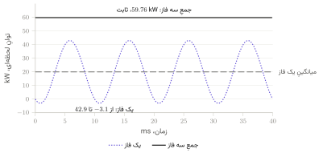
مثال 7.19 (سه فاز در برابرِ تکفاز: مس) پرسش. 100 kW با ضریبِ توانِ یک و ولتاژِ فازِ 230 V باید منتقل شود. (الف) با مدارِ تکفازِ دوسیمه؛ (ب) با سهفازِ متعادل (سه سیمِ فاز؛ نول جریانی ندارد). با هادیهای یکسان، تلفات را مقایسه کنید. برای تلفاتِ برابر، مجموعِ مسِ لازم در دو حالت چه نسبتی دارد؟
پاسخ. (الف) \(I = 100\,000/230 = 434.8\ \text{A}\) در دو سیم: تلفات \(2 \times 434.8^2 R = 378.1R\) کیلووات. (ب) \(I = 100\,000/(3 \times 230) = 144.9\ \text{A}\) در سه سیم: \(3 \times 144.9^2 R = 63.0R\) کیلووات، یعنی یکششم. برای تلفاتِ برابر، هر سیمِ سهفاز میتواند شش برابر مقاومت، یعنی یکششمِ سطحِ مقطع، داشته باشد؛ با سه سیم بهجای دو، مجموعِ مس \(\tfrac32 \times \tfrac16 = 0.25\) برابر است (سطرِ E19).
تفسیر. با ولتاژِ فازِ یکسان، سهفاز برای تلفاتِ برابر یکچهارمِ مس را لازم دارد. اگر سیمِ نول هم کشیده شود (برای بارهای تکفاز)، این نسبت کمی بیشتر میشود، اما برتری میماند. وارسی: در هر دو حالت توانِ انتقالی 100 kW است: \(230 \times 434.8 = 3 \times 230 \times 144.9 = 100\ \text{kW}\) (درست).
- چرا جمعِ سه جریانِ سینوسیِ هماندازه با فاصلهٔ \(120^\circ\) صفر است؟ با فازورها نشان دهید.
- آیا توانِ لحظهایِ یک فاز میتواند منفی باشد؟ در چه شرایطی؟
- اگر یکی از سه فازِ یک ژنراتور بار نداشته باشد، گشتاور ثابت میماند؟
- در مثال 7.19، اگر ولتاژِ خط (نه فاز) در دو حالت برابر بود، مقایسه چگونه تغییر میکرد؟
- سه مزیتِ سامانهٔ سهفاز را برای یک توربینِ بادی بنویسید.
7.3.2 توالیِ فاز
تعریف. توالیِ فاز (به انگلیسی phase sequence یا phase rotation) ترتیبی است که سه فاز به قله میرسند. در توالیِ مثبت (abc) فازِ b \(120^\circ\) پس از a و فازِ c \(120^\circ\) پس از b به قله میرسد. با عملگرِ \(a = 1\angle 120^\circ\) (فصلِ ۳؛ چرخشِ \(120^\circ\) پادساعتگرد):
\[ \mathbf{V}_\text{a} = V\angle 0^\circ, \quad \mathbf{V}_\text{b} = a^2\,\mathbf{V}_\text{a} = V\angle{-120^\circ}, \quad \mathbf{V}_\text{c} = a\,\mathbf{V}_\text{a} = V\angle 120^\circ \tag{7.19}\]
ویژگیهای عملگر: \(a^3 = 1\)، \(a^2 = a^{*} = 1\angle{-120^\circ}\) و
\[ 1 + a + a^2 = 0 \tag{7.20}\]
که دلیلِ صفر بودنِ جمعِ سه فازورِ متعادل است. نماد را با حرفِ رومیِ \(a\) مینویسیم و از بافت معلوم است که با نامِ فازِ a یکی نیست.
مثال 7.20 (توالیِ مثبت و وارونه) پرسش. مجموعهٔ \(\mathbf{V}_\text{a} = 230\angle 0^\circ\) را یکبار با توالیِ abc و یکبار با acb بسازید و مؤلفههای توالیِ مثبت و منفیِ هر کدام را بیابید (روشِ مؤلفهها در بخش 7.3.8).
پاسخ.
a = 1 /_ 120 deg; a^2 = 1 /_ 240 deg = 1 /_ -120 deg; |1 + a + a^2| = 4e-16
abc (positive) angles 0 -120 120 deg; |V1| 230.0 V, |V2| 0.0 V
acb (reversed) angles 0 120 -120 deg; |V1| 0.0 V, |V2| 230.0 V
a motor on the reversed set turns backwards; a generator with the
wrong sequence cannot be synchronised: check it before first energisingتفسیر. جابهجا کردنِ هر دو فاز توالی را وارونه میکند (سطرِ E20): مجموعهٔ acb همهاش «توالیِ منفی» است. میدانِ گردانِ آن خلافِ جهت میچرخد؛ موتور وارونه میچرخد، که برای یک پمپ یا فنِ خنککن میتواند آسیب بزند، و ژنراتور یا اینورتری که با توالیِ نادرست به شبکه وصل شود، همگام نمیشود و حفاظتش عمل میکند. وارسیِ توالیِ فاز پیش از نخستین برقدار کردن و پس از هر جابهجاییِ کابل یکی از آزمونهای راهاندازی است که صلاحیتداران با دستگاهِ مخصوص و رویهٔ تأییدشده انجام میدهند (فصلِ ۵۰).
- \(a^2 + a\) و \(a^4\) را حساب کنید.
- اگر \(\mathbf{V}_\text{b} = 230\angle 120^\circ\) و \(\mathbf{V}_\text{c} = 230\angle{-120^\circ}\)، توالی چیست؟
- با جابهجاییِ کدام دو فاز، توالی از abc به acb میرود؟ آیا جابهجاییِ هر سه بهطورِ چرخشی (bca) توالی را عوض میکند؟
- چرا وارسیِ توالیِ فاز پیش از اتصالِ یک ژنراتور لازم است؟
7.3.3 ستاره و مثلث
دو اتصال. سه منبع یا سه بار را به دو روش میتوان به سه سیمِ خط بست (شکل 7.7):
- ستاره (به انگلیسی wye یا star، با نمادِ Y): یک سرِ هر سه عنصر به یک نقطهٔ مشترک، نقطهٔ ستاره یا نول، وصل است و سرِ دیگرِ هر کدام به یک خط. ولتاژِ هر عنصر ولتاژِ فاز (\(V_\text{ph}\)، میانِ خط و نول) است و جریانِ هر عنصر همان جریانِ خط.
- مثلث (به انگلیسی delta، نمادِ D یا \(\Delta\)): سه عنصر یک حلقه میسازند و هر عنصر میانِ دو خط است. ولتاژِ هر عنصر ولتاژِ خط (\(V_\text{LL}\)، میانِ دو خط) است و جریانِ هر خط تفاضلِ جریانِ دو عنصر.
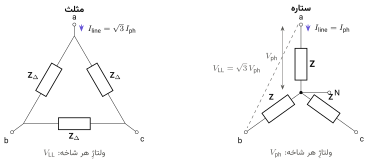
رابطهٔ ولتاژِ خط و فاز. در ستاره، \(\mathbf{V}_\text{ab} = \mathbf{V}_\text{a} - \mathbf{V}_\text{b}\). با معادلهٔ 7.19:
\[ \mathbf{V}_\text{ab} = \mathbf{V}_\text{a}(1 - a^2) = \sqrt3\,\mathbf{V}_\text{a}\angle 30^\circ \qquad\Rightarrow\qquad V_\text{LL} = \sqrt3\,V_\text{ph} \tag{7.21}\]
ولتاژِ خط \(\sqrt3\) برابرِ ولتاژِ فاز و \(30^\circ\) جلوتر است. قراردادِ نامگذاری: ولتاژِ نامیِ یک سامانهٔ سهفاز همیشه ولتاژِ خط است: «33 kV» یعنی 33 kV میانِ دو خط و \(33/\sqrt3 = 19.05\ \text{kV}\) میانِ هر خط و نول؛ «400/230 V» یعنی 400 V میانِ خطها و 230 V میانِ خط و نول.
رابطهٔ جریانِ خط و فاز در مثلث. با جریانهای متعادلِ شاخهها، \(\mathbf{I}_\text{a} = \mathbf{I}_\text{ab} - \mathbf{I}_\text{ca}\)، و همان حسابِ بالا میدهد
\[ I_\text{line} = \sqrt3\,I_\text{ph}, \qquad \mathbf{I}_\text{a} = \sqrt3\,\mathbf{I}_\text{ab}\angle{-30^\circ} \tag{7.22}\]
تبدیلِ مثلث به ستاره. سه امپدانسِ برابرِ \(\mathbf{Z}_\Delta\) در مثلث، از بیرون، مانندِ سه امپدانسِ \(\mathbf{Z}_\text{Y} = \mathbf{Z}_\Delta/3\) در ستاره رفتار میکنند (سطرِ E21). برای امپدانسهای نابرابر هم تبدیلِ عمومیِ مثلث–ستاره هست (همان تبدیلِ مقاومتهای فصلِ ۶).
مثال 7.21 (سه مقاومت، دو اتصال) پرسش. ولتاژِ فاز و ولتاژِ قلهٔ فاز را برای 400 V، 33 kV و 132 kV بیابید. سه مقاومتِ 10 Ω یکبار ستاره و یکبار مثلث به شبکهٔ 400 V وصل میشوند: جریانها و توان. و \(\mathbf{V}_\text{ab}\) را از \(\mathbf{V}_\text{a} = 230.9\angle 0^\circ\) بسازید.
پاسخ.
400 V system: phase voltage 230.9 V; 33 kV: 19.05 kV; 132 kV: 76.21 kV
three 10 ohm resistors in star: I = 23.1 A, P = 16.00 kW
the same resistors in delta: branch 40.0 A, line 69.3 A,
P = 48.00 kW (3 x star)
V_ab from V_an = 230.9 /_ 0 deg: 400.0 V /_ 30 degتفسیر. همان سه مقاومت در مثلث سه برابر توان میگیرند، چون هر کدام \(\sqrt3\) برابر ولتاژ میبیند و توان با مجذورِ ولتاژ بالا میرود. راهاندازیِ ستاره–مثلثِ موتورها از همین استفاده میکند: موتور در ستاره روشن میشود (جریانِ راهاندازیِ یکسوم) و سپس به مثلث میرود. خطای رایج: گذاشتنِ یک گرمکنِ 230 V میانِ دو خطِ 400 V توانش را \((400/230)^2 = 3\) برابر میکند. وارسی: \(\sqrt3 \times 230.9 = 399.9\ \text{V}\) و زاویه \(30^\circ\) (سطرِ E22).
ترانسفورماتورها و گروهِ برداری. سیمپیچهای اولیه و ثانویهٔ ترانسفورماتورِ سهفاز هر کدام ستاره یا مثلثاند؛ برای نمونه ترانسفورماتورِ صادراتِ نیروگاه ممکن است سمتِ 132 kV ستاره (با نولِ زمینشده) و سمتِ 33 kV مثلث باشد. چون ولتاژِ خطِ مثلث نسبت به ستاره \(30^\circ\) جابهجاست، ترانسفورماتور یک جابهجاییِ فاز هم میسازد که با گروهِ برداری (مانندِ نمادهای YNd1 یا Dyn11) مشخص میشود؛ عدد، جابهجایی را به مضربِ \(30^\circ\) نشان میدهد. دو ترانسفورماتور فقط با گروهِ برداریِ یکسان را میتوان موازی بست. انتخابِ اتصال پیامد برای مسیرِ جریانِ توالیِ صفر و زمینکردن دارد (فصلهای ۲۵ و ۲۶).
- ولتاژِ فازِ یک شبکهٔ 20 kV و ولتاژِ خطِ شبکهای با ولتاژِ فازِ 127 V چیست؟
- جریانِ خطِ یک بارِ مثلثِ متعادل با جریانِ شاخهٔ 10 A چیست؟
- سه امپدانسِ \(6 + j9\ \Omega\) در مثلث معادلِ چه ستارهایاند؟
- در مثال 7.21، اگر یکی از سه مقاومتِ ستاره قطع شود (بینول)، توانِ کل چه میشود؟
- چرا ولتاژِ نامیِ سامانه را ولتاژِ خط میگویند؟
- اگر یک ترانسفورماتور Dyn11 و دیگری Dyn1 باشد، چرا نمیتوان موازیشان کرد؟
7.3.4 مدارِ معادلِ تکفاز
ایده. در سامانهٔ متعادل (منابع، بارها و خطهای یکسان در سه فاز)، هر فاز همان کارِ دو فازِ دیگر را با تأخیرِ \(120^\circ\) انجام میدهد. پس کافی است یک فاز را، از خط تا نولِ فرضی، حل کنیم و دو فازِ دیگر را با چرخاندنِ نتیجه بسازیم. بارها و منابعِ مثلث را پیش از این کار به ستارهٔ همارز تبدیل میکنیم. این مدار معادلِ تکفاز (به انگلیسی per-phase equivalent) است و پایهٔ همهٔ محاسبههای شبکه.
توانِ سهفاز. با ولتاژ و جریانِ هر فاز و زاویهٔ \(\varphi\) میانشان:
\[ P = 3\,V_\text{ph}\,I\cos\varphi = \sqrt3\,V_\text{LL}\,I\cos\varphi, \qquad S = \sqrt3\,V_\text{LL}\,I \tag{7.23}\]
و جریانِ خط برای توانِ معلوم:
\[ I = \frac{P}{\sqrt3\,V_\text{LL}\,\text{pf}} = \frac{S}{\sqrt3\,V_\text{LL}} \tag{7.24}\]
که \(\text{pf}\) ضریبِ توان است (بخش 7.4.3؛ برای جریانِ سینوسی همان \(\cos\varphi\)). این رابطه شاید پرکاربردترین رابطهٔ مهندسیِ برقِ نیروگاه باشد. \(\sqrt3\) از تبدیلِ ولتاژِ فاز به خط میآید: \(3 V_\text{ph} = \sqrt3 V_\text{LL}\).
مثال 7.22 (جریانِ سهفاز برای بار و ضریبِ توانِ معلوم (مثالِ کارشدهٔ فصل)) پرسش. جریانِ خط و توانِ ظاهری را برای این حالتها بیابید: تابلوی کمکیِ 180 kW در 400 V با ضریبِ توانِ 0.80 و پس از اصلاح به 0.95؛ یک فیدرِ 33 kV با 25 MW و 0.95؛ صادراتِ 100 MW در 132 kV با 0.95 و 0.90. چرا ردهٔ تجهیزات بر پایهٔ توانِ ظاهری است؟
پاسخ. با معادلهٔ 7.24:
three-phase current I = P / (sqrt3 V_LL pf) and apparent power S = P / pf:
auxiliary board 400 V 225.0 kVA I = 324.8 A
auxiliary board 400 V, pf raised 189.5 kVA I = 273.5 A
one 33 kV feeder 26.3 MVA I = 460.4 A
export at 132 kV 105.3 MVA I = 460.4 A
export at 132 kV, pf 0.90 111.1 MVA I = 486.0 A
the export transformer (120 MVA, A-092) carries 100 MW at pf 0.90
as 111.1 MVA:
heating follows the current, so ratings are in VA, not in Wتفسیر. برای همان 180 kW، ضریبِ توانِ 0.80 جریانِ 324.8 A میخواهد و 0.95 فقط 273.5 A: کابل، کلید، ترانسفورماتور و فیوز با جریان گرم میشوند و جریان را توانِ ظاهری تعیین میکند، نه توانِ اکتیو. به همین دلیل ترانسفورماتور برحسبِ kVA یا MVA ردهبندی میشود و اینورتر برحسبِ MVA (بخش 7.4.4). در صادرات، کاهشِ ضریبِ توان از 0.95 به 0.90 جریان را 5.6 % و تلفاتِ مسی را حدودِ 11 % بالا میبرد، بیآنکه یک کیلوواتساعت بیشتر فروخته شود. وارسی: جریانِ 25 MW در 33 kV و 100 MW در 132 kV یکی است (460.4 A)، چون نسبتِ توان و ولتاژ هر دو چهار است (مثال 7.51).
مثال 7.23 (ترانسفورماتورِ واحد) پرسش. هر واحدِ 5 MW (اینورتر یا توربین) از 0.69 kV با یک ترانسفورماتورِ واحد به 33 kV وصل است. نسبتِ تبدیل، ولتاژِ فازِ دو سمت و جریانِ دو سمت را برای 5 MW با ضریبِ توانِ 0.95 بیابید.
پاسخ. نسبتِ ولتاژِ خط \(33/0.69 = 47.83\). ولتاژِ فاز 19 053 V و 398.4 V. جریان با معادلهٔ 7.24: 92.1 A در 33 kV و 4404 A در 0.69 kV (سطرِ E23). تفسیر: جریانِ سمتِ ولتاژپایین ۴۸ برابر است؛ به همین دلیل واحدها با شمش یا چند کابلِ موازی به ترانسفورماتور وصل میشوند و ترانسفورماتورِ واحد تا حدِ ممکن نزدیکِ اینورتر یا داخلِ توربین قرار میگیرد. وارسی: \(92.1 \times 47.83 = 4405\ \text{A}\) (درست، با گرد کردن).
- جریانِ موتورِ سهفازِ 15 kW با ضریبِ توانِ 0.85 و بازدهِ 0.92 در 400 V چیست؟ (راهنما: توانِ ورودی.)
- یک ترانسفورماتورِ 250 kVA در 400 V چه جریانِ نامیای دارد؟
- چرا مدارِ معادلِ تکفاز فقط برای سامانهٔ متعادل کار میکند؟
- اگر ولتاژِ یک شبکه 10 % پایین بیاید و توانِ بار ثابت بماند، جریان چه میشود؟
- در مثال 7.22، ترانسفورماتورِ 120 MVA با 100 MW و ضریبِ توانِ 0.90 چند درصد بار دارد؟
- \(\sqrt3\) در معادلهٔ 7.23 از کجا میآید؟
7.3.5 سامانهٔ پریونیت
مسئله. شبکهٔ نیروگاهِ P سه سطحِ ولتاژ دارد. امپدانسِ 0.75 Ω در 33 kV و 0.75 Ω در 0.69 kV اثرهای کاملاً متفاوتی دارند، و امپدانسِ ترانسفورماتور را سازنده به درصد میدهد، نه به اهم. پریونیت (به انگلیسی per-unit، pu) هر کمیت را نسبت به یک مبنا بیان میکند و این سه مشکل را با هم حل میکند.
تعریف. یک توانِ مبنا \(S_\text{base}\) برای کلِ شبکه (مثلاً 100 MVA) و یک ولتاژِ مبنا \(V_\text{base}\) برای هر سطحِ ولتاژ (ولتاژِ نامیِ خط) برمیگزینیم. مبناهای دیگر از این دو ساخته میشوند:
\[ I_\text{base} = \frac{S_\text{base}}{\sqrt3\,V_\text{base}}, \qquad Z_\text{base} = \frac{V_\text{base}^2}{S_\text{base}}, \qquad z = \frac{Z}{Z_\text{base}} \tag{7.25}\]
کمیتهای پریونیت را با حرفِ کوچک مینویسیم (\(z\)، \(r\)، \(x\)). امپدانسِ پریونیتِ ترانسفورماتوری که مبناهای دو سمتش با نسبتِ تبدیلش جور است، از هر دو سمت یکی است، و ترانسفورماتورِ ایدئال در مدارِ پریونیت ناپدید میشود. این بزرگترین فایدهٔ پریونیت است.
تغییرِ مبنا. امپدانسِ دادهشده روی مبنای خودِ تجهیز (مثلاً 12 % روی 120 MVA) به مبنای شبکه چنین میرود:
\[ z_\text{new} = z_\text{old}\,\frac{S_\text{base,new}}{S_\text{base,old}}\left(\frac{V_\text{base,old}}{V_\text{base,new}}\right)^2 \tag{7.26}\]
مثال 7.24 (مبناهای نیروگاهِ P) پرسش. با \(S_\text{base} = 100\ \text{MVA}\)، امپدانس و جریانِ مبنا را برای 132، 33، 0.69 و 0.4 kV بیابید. امپدانسِ 12 %ِ ترانسفورماتورِ صادراتِ 120 MVA (A-102، فرضی) و امپدانسِ فیدرِ مثال 7.13 را به مبنای 100 MVA ببرید. اگر توانِ اتصالِ کوتاهِ شبکه در 132 kV 1000 MVA باشد (A-109)، توانِ اتصالِ کوتاه در شینهٔ 33 kV چیست؟
پاسخ. (سطرهای E24 و E25)
| ولتاژِ مبنا | \(Z_\text{base}\) | \(I_\text{base}\) |
|---|---|---|
| 132 kV | 174.2 Ω | 437.4 A |
| 33 kV | 10.89 Ω | 1749.5 A |
| 0.69 kV | 0.004761 Ω | 83 674 A |
| 0.4 kV | 0.0016 Ω | 144 338 A |
ترانسفورماتور: \(0.12 \times 100/120 = 0.100\ \text{pu}\). فیدر: \((0.75 + j0.66)/10.89 = 0.0689 + j0.0606\ \text{pu}\). شبکه: امپدانسِ پریونیت با توانِ اتصالِ کوتاه رابطهٔ سادهای دارد، \(z = S_\text{base}/S_\text{sc} = 100/1000 = 0.100\ \text{pu}\)؛ با ترانسفورماتورِ سری، \(0.200\ \text{pu}\)، پس در 33 kV: \(S_\text{sc} = 100/0.2 = 500\ \text{MVA}\).
تفسیر. فرضِ A-100 (پانصد مگاولتآمپر در 33 kV) با فرضِ A-109 (هزار مگاولتآمپر در 132 kV) و ترانسفورماتورِ A-102 سازگار است: وارسیِ سازگاریِ فرضها با یک حسابِ پریونیتی سهخطی. ترانسفورماتورِ صادرات نصفِ امپدانسِ مسیرِ خطا را میسازد؛ امپدانسِ بیشترِ ترانسفورماتور جریانِ خطای 33 kV را کم میکند اما افتِ ولتاژ و جذبِ توانِ راکتیو را زیاد (مثال 7.52): یک مصالحهٔ طراحی (فصلهای ۲۵ و ۲۶).
- جریانِ مبنای 33 kV با 10 MVA چیست؟
- امپدانسِ 6 % روی 5.5 MVA روی مبنای 100 MVA چند پریونیت است؟
- چرا در مدارِ پریونیت ترانسفورماتورِ ایدئال ناپدید میشود؟
- اگر توانِ اتصالِ کوتاهِ شبکه بینهایت بود، توانِ اتصالِ کوتاه در 33 kV چه میشد؟
- امپدانسِ 0.1 pu روی 100 MVA و 132 kV چند اهم است؟
- چرا امپدانسهای پریونیت در سطوحِ ولتاژِ مختلف قابلِ مقایسهاند ولی اهمها نه؟
7.3.6 بارِ نامتعادل
از کجا میآید؟ در تغذیهٔ کمکیِ نیروگاه بیشترِ بارهای بزرگ (فن، تهویه، شارژر، پمپ) سهفاز و متعادلاند، اما روشنایی، پریزها، رایانهها، سامانهٔ امنیتی و گرمکنهای کوچک تکفازاند و میانِ یک فاز و نول بسته میشوند. هرچقدر هم طراح آنها را میانِ سه فاز پخش کند، در هر لحظه یکی بیشتر از دیگری کار میکند. نتیجه: بارِ نامتعادل، که دیگر نمیتوان آن را با یک فاز حل کرد.
حلِ کامل با نولِ سالم. اگر نقطهٔ ستارهٔ بار با یک سیمِ نولِ کمامپدانس به نولِ منبع وصل باشد، ولتاژِ هر بار همان ولتاژِ فاز است و هر فاز جداگانه حل میشود: \(\mathbf{I}_k = \mathbf{V}_k/\mathbf{Z}_k\). جریانِ نول جمعِ فازوریِ سه جریان است:
\[ \mathbf{I}_\text{N} = \mathbf{I}_\text{a} + \mathbf{I}_\text{b} + \mathbf{I}_\text{c} \tag{7.27}\]
حلِ عمومی: ولتاژِ نقطهٔ ستاره. اگر نول امپدانس داشته باشد یا اصلاً نباشد، نقطهٔ ستارهٔ بار ولتاژِ \(\mathbf{V}_\text{n}\) نسبت به نولِ منبع پیدا میکند. قانونِ جریانِ کیرشهف در این گره (روشِ ولتاژِ گرهٔ فصلِ ۶) با ادمیتانسِ بارها \(\mathbf{Y}_k = 1/\mathbf{Z}_k\) و ادمیتانسِ نول \(\mathbf{Y}_\text{N}\) میدهد:
\[ \mathbf{V}_\text{n} = \frac{\mathbf{Y}_\text{a}\mathbf{V}_\text{a} + \mathbf{Y}_\text{b}\mathbf{V}_\text{b} + \mathbf{Y}_\text{c}\mathbf{V}_\text{c}} {\mathbf{Y}_\text{a} + \mathbf{Y}_\text{b} + \mathbf{Y}_\text{c} + \mathbf{Y}_\text{N}} \tag{7.28}\]
این قضیهٔ میلمن است. با نولِ کامل (\(\mathbf{Y}_\text{N} \to \infty\))، \(\mathbf{V}_\text{n} = 0\)؛ بینول (\(\mathbf{Y}_\text{N} = 0\))، نقطهٔ ستاره «شناور» است. سپس ولتاژِ هر بار \(\mathbf{V}_k - \mathbf{V}_\text{n}\) و جریانش \(\mathbf{Y}_k(\mathbf{V}_k - \mathbf{V}_\text{n})\) است. تابعِ unbalanced_wye در کتابخانهٔ همراه همین را پیاده میکند و آزمونهایش حالتهای نولِ کامل، بینول و بارِ متعادل را وارسی میکنند.
مثال 7.25 (بارهای تکفازِ تابلوی کمکی) پرسش. سه بارِ تکفاز با امپدانسهای \(4 + j1.5\)، \(8 + j3\) و \(16\ \Omega\) (A-103، فرضی) به فازهای a، b و cِ شبکهٔ 400/230 V با نولِ سالم بسته شدهاند. جریانِ هر فاز، توانها، جریانِ نول و مؤلفههای متقارنِ جریان را بیابید.
پاسخ.
auxiliary single-phase loads (A-103): phase a 4 + j1.5, b 8 + j3, c 16 ohm
phase a: I = 53.8 A /_ -20.6 deg, P = 11.59 kW, Q = 4.35 kvar
phase b: I = 26.9 A /_ -140.6 deg, P = 5.80 kW, Q = 2.17 kvar
phase c: I = 14.4 A /_ 120.0 deg, P = 3.31 kW, Q = 0.00 kvar
neutral current 32.5 A; current unbalance |I2|/|I1| = 0.414
sequence currents: I0 10.8 A, I1 31.5 A, I2 13.0 A (I_N = 3 I0 = 32.5 A)
check: rebuilding phase a from sequences gives 53.8 Aتفسیر. جریانِ نول 32.5 A است: بیش از جریانِ دو فازِ سبکتر. اگر نول با این فرض که «بارِ سهفاز جریانِ نول ندارد» کوچک انتخاب شده بود، گرم میشد. نامتعادلیِ جریان، \(|\mathbf{I}_2|/|\mathbf{I}_1| = 0.414\)، بسیار زیاد است، چون بارها عمداً بسیار نابرابر انتخاب شدهاند. وارسی: جریانِ نول برابرِ سه برابرِ جریانِ توالیِ صفر است (\(3 \times 10.8 = 32.5\)) و ساختنِ دوبارهٔ فازِ a از سه مؤلفه همان 53.8 A را میدهد.
- سه بارِ مقاومتیِ برابر با نولِ سالم: جریانِ نول چیست؟ اگر بارِ فازِ c خاموش شود چه؟ (سطرِ E26.)
- در معادلهٔ 7.28، اگر سه ادمیتانس برابر باشند، \(\mathbf{V}_\text{n}\) چه میشود، چه نول باشد چه نباشد؟
- چرا جریانِ نول در مثال 7.25 از جمعِ جبریِ اختلافِ جریانها متفاوت است؟
- اگر بارِ فازِ a خازنی بود، جریانِ نول بیشتر میشد یا کمتر؟ استدلال کنید.
- چرا توزیعِ بارهای تکفاز میانِ سه فاز در طراحیِ تابلو مهم است؟
7.3.7 رفتارِ نول و خطرِ قطعیِ آن
نول چه میکند. سیمِ نول دو کار دارد: جریانِ نامتعادلی را برمیگرداند و ولتاژِ نقطهٔ ستارهٔ بارها را نزدیکِ نولِ منبع نگه میدارد. کارِ دوم کمتر دیده میشود و مهمتر است: تا وقتی نول سالم است، هر بارِ تکفاز ولتاژِ خودش را میبیند، هر قدر بارهای دیگر تغییر کنند.
نول در برابرِ زمینِ حفاظتی. نول یک هادیِ جریانبر است و در کارِ عادی جریان دارد. هادیِ حفاظتی (زمین) در کارِ عادی جریانی ندارد و فقط هنگامِ خطا جریانِ خطا را برمیگرداند تا حفاظت عمل کند و بدنهٔ تجهیز برقدار نماند. این دو در نقطهای مشخص (معمولاً نولِ ترانسفورماتور) به هم و به زمین وصل میشوند، اما نباید جای هم به کار روند؛ آرایشهای گوناگونِ زمینکردنِ سامانههای ولتاژپایین (که با نمادهای حرفی مانندِ TN، TT و IT شناخته میشوند) و پیامدِ ایمنیِ هر کدام در فصلِ ۲۶ میآیند. یادآوری از فصلِ ۶ (بخش 6.2.2): «زمین» در نقشه و «زمینِ حفاظتی» دو مفهوماند.
هارمونیکها و نول. بارهای الکترونیکی (روشنایی LED، رایانه، منبعِ تغذیهٔ سوئیچینگ) جریانی با هارمونیکِ سوم میکشند. هارمونیکهای مضربِ سهِ سه فاز همفازند و در نول جمع میشوند، حتی اگر بار کاملاً متعادل باشد. این در مثال 7.38 عددی میشود: نول ممکن است از هر فاز جریانِ بیشتری داشته باشد.
مثال 7.26 (نولِ قطعشده) پرسش. در مثال 7.25 نولِ تابلو در اثرِ شل شدنِ یک اتصال قطع میشود. ولتاژِ نقطهٔ ستاره و ولتاژِ دو سرِ هر بار را بیابید.
پاسخ. با معادلهٔ 7.28 و \(\mathbf{Y}_\text{N} = 0\):
the same loads after the neutral conductor breaks (star point floats):
star-point voltage 79.3 V
phase a: voltage across the load 165.1 V (-28 %)
phase b: voltage across the load 244.7 V (+6 %)
phase c: voltage across the load 300.7 V (+31 %)
the lightly loaded phase sees far more than 230 V: equipment on it
can be damaged;
neutral integrity is a design and maintenance item (chapters 24, 52)تفسیر. نقطهٔ ستاره 79.3 V جابهجا شده و بارِ سبکِ فازِ c بهجای 230 V زیرِ 300.7 V است: 31 % اضافهولتاژ، که میتواند منبعِ تغذیههای الکترونیکی و لامپها را بسوزاند. فازِ پربار در عوض 165 V میبیند و تجهیزاتش ممکن است بد کار کنند یا از کار بیفتند. شکل 7.8 جابهجاییِ نقطهٔ ستاره را نشان میدهد. درس طراحی: نول هرگز فیوز یا کلیدِ جداگانه نمیگیرد مگر آنکه همراهِ فازها قطع شود؛ اتصالهای نول در بازرسیهای دورهای با روشِ مجاز وارسی میشوند (فصلهای ۲۴ و ۵۲)؛ و تجهیزاتِ حساسِ تکفاز (سامانهٔ پایش و حفاظت) از منبعِ تغذیهٔ بیوقفه و باتریِ DC تغذیه میشوند، نه مستقیم از شبکهٔ کمکی (فصلِ ۲۳).
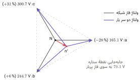
- تفاوتِ هادیِ نول و هادیِ حفاظتی را در دو جمله بنویسید.
- در مثال 7.26، چرا ولتاژ روی کمبارترین فاز بیشترین افزایش را دارد؟
- اگر بارها متعادل بودند، قطعِ نول چه اثری داشت؟
- چرا هارمونیکِ سوم در نول جمع میشود و هارمونیکِ پنجم نه؟
- سه راهِ کاهشِ پیامدِ قطعیِ نول برای تجهیزاتِ حساس را بنویسید.
7.3.8 مؤلفههای متقارن و نامتعادلی
ایده. فصلِ ۳ قضیهٔ فورتسکیو را آورد (معادلهٔ 3.23): هر سه فازورِ دلخواه جمعِ سه مجموعهٔ متقارن است. مثبت، با توالیِ عادی؛ منفی، با توالیِ وارونه؛ و صفر، سه فازورِ همفاز. اینجا معنای فیزیکیِ هر مؤلفه را میبینیم:
\[ \mathbf{I}_0 = \tfrac13(\mathbf{I}_\text{a} + \mathbf{I}_\text{b} + \mathbf{I}_\text{c}), \quad \mathbf{I}_1 = \tfrac13(\mathbf{I}_\text{a} + a\,\mathbf{I}_\text{b} + a^2\mathbf{I}_\text{c}), \quad \mathbf{I}_2 = \tfrac13(\mathbf{I}_\text{a} + a^2\mathbf{I}_\text{b} + a\,\mathbf{I}_\text{c}) \tag{7.29}\]
- مثبت: کارِ مفید. میدانی که با روتور میچرخد و توانی که فروخته میشود.
- منفی: میدانی که خلافِ روتور میچرخد و با دو برابرِ بسامد از روتور میگذرد؛ در روتورِ ماشینها جریانهای القاییِ پُربسامد میسازد و آن را گرم میکند، و ممکن است گشتاورِ ضربانی بسازد. موتورها و ژنراتورها حدِ مجازی برای توالیِ منفی دارند و حفاظتِ «نامتعادلی» آنها را میپاید (فصلهای ۸ و ۲۶).
- صفر: سه جریانِ همفاز که فقط از راهِ نول یا زمین برمیگردند: \(\mathbf{I}_\text{N} = 3\mathbf{I}_0\). اتصالِ مثلث جریانِ توالیِ صفر را در خودش میچرخاند و به خط نمیدهد.
ضریبِ نامتعادلی. نامتعادلی را با نسبتِ اندازهٔ مؤلفهٔ منفی به مثبت میسنجیم:
\[ u_2 = \frac{|\mathbf{V}_2|}{|\mathbf{V}_1|} \tag{7.30}\]
(و برای جریان با \(\mathbf{I}_2\) و \(\mathbf{I}_1\)). برای ولتاژهای خطبهخط، که جمعشان همیشه صفر است (سه ضلعِ یک مثلث)، \(u_2\) را میتوان از اندازهها به تنهایی حساب کرد:
\[ \beta = \frac{V_\text{ab}^4 + V_\text{bc}^4 + V_\text{ca}^4}{\left(V_\text{ab}^2 + V_\text{bc}^2 + V_\text{ca}^2\right)^2}, \qquad u_2 = \sqrt{\frac{1 - \sqrt{3 - 6\beta}}{1 + \sqrt{3 - 6\beta}}} \tag{7.31}\]
ابزارهای سادهتر گاهی «بیشینهٔ انحراف از میانگین بر میانگین» را گزارش میکنند؛ این شاخص تعریفِ متفاوتی دارد و نباید با \(u_2\) یکی گرفته شود. گزارشِ نامتعادلی بیذکرِ تعریف، ناقص است.
مثال 7.27 (نامتعادلیِ ولتاژ از سه عددِ ولتمتر) پرسش. ولتاژهای خطبهخطِ تابلوی کمکی 400، 396 و 404 V خوانده شدهاند. ضریبِ نامتعادلی را با معادلهٔ 7.31 و با شاخصِ «بیشینهٔ انحراف بر میانگین» حساب کنید و با ساختنِ فازورها وارسی کنید.
پاسخ. شاخصِ انحراف: 1.00 %. با معادلهٔ 7.31: 1.155 %. با ساختنِ مثلثِ سه ولتاژ (قانونِ کسینوسها زاویهها را میدهد) و معادلهٔ 7.29: 1.155 % (سطرِ E27).
تفسیر. دو شاخص 15 % با هم تفاوت دارند؛ اگر حدِ مجاز در یک قرارداد یا ضابطه با یکی تعریف شده و اندازهگیری با دیگری گزارش شود، نتیجهگیری ممکن است غلط باشد. حدهای مجازِ نامتعادلیِ ولتاژ را ضابطهٔ شبکه یا قراردادِ اتصال تعیین میکند (فصلهای ۱۷ و ۲۷). محدودیت: از اندازهٔ جریانهای فاز در سامانهٔ چهارسیمه نمیتوان \(u_2\) را ساخت، چون آن سه جریان بهخاطرِ مؤلفهٔ صفر لزوماً مثلث نمیسازند؛ آنجا زاویهها لازماند (بخش 7.5.4).
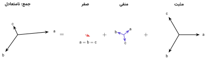
- مؤلفههای متقارنِ \(\mathbf{I}_\text{a} = 10\angle 0^\circ\)، \(\mathbf{I}_\text{b} = 0\)، \(\mathbf{I}_\text{c} = 0\) را بیابید.
- چرا جریانِ توالیِ صفر از اتصالِ مثلث به خط نمیرسد؟
- توالیِ منفی چرا روتور را گرم میکند؟
- اگر هر سه ولتاژِ خط برابر باشند، \(\beta\) و \(u_2\) چه میشوند؟
- چرا گزارشِ «نامتعادلیِ ۱ درصد» بیذکرِ تعریف ناقص است؟
- در مثال 7.25، نسبتِ \(|\mathbf{I}_0|/|\mathbf{I}_1|\) چیست و چه معنایی دارد؟
7.3.9 اتصالهای اندازهگیری
واتمتر و قضیهٔ بلوندل. واتمتر میانگینِ حاصلضربِ یک ولتاژ و یک جریان را میسنجد: \(\operatorname{Re}\{\mathbf{V}\mathbf{I}^{*}\}\). برای سنجیدنِ توانِ کلِ یک سامانه با \(n\) سیم، \(n - 1\) واتمتر کافی است: ولتاژِ هر واتمتر نسبت به یک سیمِ مشترک گرفته میشود و جریانش جریانِ یکی از \(n - 1\) سیمِ دیگر است (قضیهٔ بلوندل). دو آرایشِ رایج (شکل 7.10):
- سهواتمتری برای سامانهٔ چهارسیمه (سه فاز و نول): هر واتمتر ولتاژِ یک فاز نسبت به نول و جریانِ همان فاز را میگیرد. خوانشِ هر واتمتر توانِ همان فاز است و جمعشان توانِ کل، حتی با بارِ نامتعادل.
- دوواتمتری برای سامانهٔ سهسیمه (بینول): هر دو واتمتر ولتاژ را نسبت به یک فاز (مثلاً b) میگیرند و جریانِ دو فازِ دیگر را. خوانشِ تکی معنای فیزیکیِ ساده ندارد، اما جمعشان توانِ کل است. در بارِ متعادل، تفاضلِ دو خوانش توانِ راکتیو را هم میدهد:
\[ P = W_1 + W_2, \qquad |Q| = \sqrt3\,|W_1 - W_2| \quad \text{(فقط بارِ متعادل)} \tag{7.32}\]
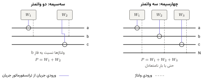
ترانسفورماتورهای اندازهگیری. هیچ دستگاهی مستقیماً 460 A در 33 kV را نمیسنجد. ترانسفورماتورِ جریان (به انگلیسی current transformer، CT) جریانِ اولیه را با نسبتی مانندِ 400/5 A یا 400/1 A کوچک میکند، و ترانسفورماتورِ ولتاژ (VT) ولتاژ را با نسبتی مانندِ 33 000/110 V. دستگاه کمیتِ ثانویه را میسنجد و با ضربِ نسبتها کمیتِ اولیه را گزارش میکند. سه نکته:
- نسبتِ پیکربندیشده در شمارنده باید با نسبتِ واقعیِ ترانسفورماتور یکی باشد؛ خطای پیکربندی خطایی ثابت و بیصدا است.
- قطبیت: هر ترانسفورماتورِ جریان سرهای نشانهدار دارد و جهتِ جریانِ ثانویه به جهتِ نصب و سیمبندی بستگی دارد. یک ترانسفورماتورِ وارونه، توانِ همان فاز را با علامتِ منفی میدهد.
- کلاسِ دقت و کاربرد: ترانسفورماتورِ جریانِ اندازهگیری در جریانِ عادی دقیق است و در جریانِ خطا عمداً اشباع میشود تا دستگاه آسیب نبیند؛ ترانسفورماتورِ حفاظتی برعکس باید جریانِ خطای بزرگ را درست برساند. الزامهایشان در استانداردِ ترانسفورماتورهای جریان آمده است (جعبهٔ استانداردِ این فصل).
ثانویهٔ ترانسفورماتورِ جریانی که اولیهاش جریان دارد هرگز نباید باز بماند: جریانِ اولیه، بیمسیرِ برگشت در ثانویه، هسته را اشباع میکند و در سرهای باز ولتاژی بسیار بالا و خطرناک میسازد که میتواند عایق را بشکند و فرد را آسیب بزند. به همین دلیل مدارهای ثانویه بلوکِ آزمونِ مخصوص و اتصالِ کوتاهکننده دارند. هر کاری روی این مدارها فقط با رویهٔ تأییدشده و بهدستِ افرادِ صلاحیتدار انجام میشود (فصلهای ۳۴ و ۵۰).
مثال 7.28 (دوواتمتری، نسبتها و ترانسفورماتورِ وارونه) پرسش. (الف) یک بارِ متعادلِ \(8 + j6\ \Omega\) در هر فاز به 400 V وصل است. توانها و خوانشِ دوواتمتری را بیابید و معادلهٔ 7.32 را وارسی کنید. (ب) با ترانسفورماتورهای 400/5 A و 33 000/110 V (A-104، فرضی)، ضریبِ تبدیلِ توانِ ثانویه به اولیه چیست؟ (پ) اگر ترانسفورماتورِ جریانِ فازِ b در (الف) وارونه بسته شده باشد، شمارندهٔ سهفاز چه میخواند؟
پاسخ.
balanced 400 V load, 8 + j6 ohm per phase (pf 0.8):
P = 12.70 kW, Q = 9.52 kvar
two-wattmeter readings W1 = 9.10 kW, W2 = 3.60 kW; W1 + W2 = 12.70 kW
sqrt3 |W1 - W2| = 9.52 kvar = |Q|
CT 400/5 A and VT 33000/110 V (A-104): primary = secondary x 24,000
a secondary three-phase power of 289.2 W means 6.94 MW
one reversed CT (phase b) makes the meter read 4.23 kW instead of 12.70 kW
(phase b shows negative power: the per-phase readings reveal the error)تفسیر. (الف) جمعِ دو خوانش 12.70 kW است و \(\sqrt3\) برابرِ تفاضلشان 9.52 kvar، هر دو درست. در روشِ سهواتمتری هر فاز 4232 W میخواند (سطرِ E29). (ب) هر وات در ثانویه 24 000 W در اولیه است: خطای کوچک در ثانویه خطای بزرگی در اولیه است. (پ) با یک ترانسفورماتورِ وارونه، شمارنده یکسوم توانِ واقعی را میخواند (\(1 - 1 + 1 = 1\) از \(3\)): خطایی −67 % که اگر کسی فقط عددِ کل را ببیند، شاید آن را «بارِ کم» تفسیر کند. خوانشِ هر فاز جداگانه خطا را فوراً نشان میدهد: توانِ منفی در یک تابلوی بار ناممکن است. این را در رکوردِ نمونهٔ بخش 7.5.4 دوباره پیدا میکنیم. خطای پیکربندیِ نسبت (300/5 بهجای 400/5) همهٔ عددها را 25 % کم نشان میدهد (سطرِ E28) و از شکلِ داده پیدا نیست؛ فقط با مقایسه با اندازهگیریِ مستقل یا وارسیِ مدرکِ ترانسفورماتور.
- برای یک سامانهٔ سهسیمه چند واتمتر لازم است؟ برای چهارسیمه؟
- در روشِ دوواتمتری با بارِ مقاومتیِ متعادل، دو خوانش چه رابطهای دارند؟
- با ضریبِ توانِ 0.5 پسفاز، یکی از دو خوانش صفر میشود. کدام و چرا؟
- ترانسفورماتورِ جریانِ 600/5 با جریانِ ثانویهٔ 3.2 A: جریانِ اولیه چیست؟
- چرا ثانویهٔ ترانسفورماتورِ جریان نباید باز بماند؟ ثانویهٔ ترانسفورماتورِ ولتاژ را چرا نباید اتصالِ کوتاه کرد؟
- چگونه از رکوردِ سهفاز میفهمید یک ترانسفورماتورِ جریان وارونه است؟
- خطای پیکربندیِ نسبت را چگونه پیدا میکنید؟
- تفاوتِ ترانسفورماتورِ جریانِ اندازهگیری و حفاظتی چیست؟
7.3.10 افتِ ولتاژ در مدارهای تکفاز و سهفاز
دو فرمول، یک فیزیک. افتِ ولتاژ همیشه \(\mathbf{Z}\mathbf{I}\)ِ هادیهاست؛ تفاوت در این است که جریان از کدام هادیها برمیگردد.
- تکفاز (فاز و نول): جریان از فاز میرود و همان جریان از نول برمیگردد؛ افت در هر دو هادی است: \(\Delta V \approx 2\,I\,(R\cos\varphi + X\sin\varphi)\)، با \(R\) و \(X\)ِ یک هادی در طولِ مسیر.
- سهفازِ متعادل: جریانِ برگشت صفر است (جمعِ سه جریان)، پس افتِ ولتاژِ فاز فقط \(I\,(R\cos\varphi + X\sin\varphi)\) است و افتِ ولتاژِ خط \(\sqrt3\) برابرِ آن. این همان معادلهٔ 7.13 است.
برای همان سیم و همان جریانِ هر هادی، افتِ نسبیِ مدارِ تکفاز دو برابرِ مدارِ سهفاز است. این یکی از دلیلهای تغذیهٔ سهفازِ بارهای بزرگ است (مثال 7.19).
مثال 7.29 (کابلِ تابلوی کمکی و یک مدارِ روشنایی) پرسش. (الف) تابلوی کمکی با دو کابلِ مسیِ 240 mm² در هر فاز و طولِ 80 m از ترانسفورماتور تغذیه میشود؛ مقاومت و راکتانسِ هر کابل 0.0754 و 0.080 Ω/km (A-110؛ مقدارهای آموزشیِ نوعیِ مس در 20 °C). افتِ ولتاژِ بدترین فاز در S1 (252.7 A، ضریبِ توانِ 0.873) چیست و با افتِ ترانسفورماتور (مثال 7.48) چه میشود؟ (ب) یک مدارِ روشناییِ تکفازِ 16 A با 50 m سیمِ 2.5 mm² (7.41 Ω/km، A-110) چه افتی دارد؟ اگر همان سیم یک مدارِ سهفازِ متعادلِ 16 A بود؟
پاسخ. (الف) با دو کابلِ موازی، \(R = 3.02\ \text{m}\Omega\) و \(X = 3.20\ \text{m}\Omega\) در هر فاز؛ \(\Delta V = 252.7\,(0.00302 \times 0.873 + 0.00320 \times 0.488) = 1.06\ \text{V}\)، یعنی 0.46 %؛ با ترانسفورماتور حدودِ 2.9 % (سطرهای E41 و E42). (ب) \(2 \times 16 \times 0.371 = 11.9\ \text{V}\)، یعنی 5.2 %؛ سهفاز: 5.9 V یا 2.6 % (سطرهای E43 و E44).
تفسیر. کابلِ اصلیِ تابلو، با سطحِ مقطعِ بزرگ، افتِ کمی دارد؛ بیشترِ افتِ مسیر در ترانسفورماتور است. اما مدارِ روشناییِ تکفاز با سیمِ نازک و پنجاه متر طول، بهتنهایی بیش از پنج درصد افت دارد و با افتِ بالادست جمع میشود: مدارهای نهاییِ طولانی معمولاً گلوگاهِ افتِ ولتاژند. حدهای مجازِ افت را مقرراتِ تأسیساتِ برقِ هر کشور و مشخصاتِ پروژه تعیین میکنند (فصلهای ۲۴ و ۵۵ تا ۵۷). وارسی: افتِ تکفاز دقیقاً دو برابرِ سهفاز با همان جریانِ هر هادی است (\(11.9 = 2 \times 5.9\)، با گرد کردن).
- چرا در مدارِ سهفازِ متعادل نول در افتِ ولتاژ سهمی ندارد؟ در مدارِ نامتعادل چه؟
- افتِ یک مدارِ تکفازِ 10 A با 30 m سیمِ 1.5 mm² (12.1 Ω/km) چیست؟
- اگر هارمونیکها جریانِ نولِ یک مدارِ روشناییِ سهفاز را بالا ببرند، افتِ ولتاژِ کدام بارها تغییر میکند؟
- چرا افتِ کابلِ اصلیِ تابلو کمتر از افتِ ترانسفورماتور است؟
7.3.11 جریانِ اتصالِ کوتاهِ سهفازِ متقارن
چرا اینجا؟ اتصالِ کوتاهِ سهفاز، که هر سه فاز را با امپدانسِ تقریباً صفر به هم وصل میکند، متعادل است؛ پس با همان مدارِ معادلِ تکفاز و پریونیتِ این بخش حل میشود. خطاهای نامتعادل (تکفاز به زمین، دوفاز) به مؤلفههای متقارن نیاز دارند و در فصلِ ۲۶ میآیند. دو عدد از خطای سهفاز بیرون میآید که در انتخابِ هر کلید، شینه و کابلی به کار میرود: جریانِ مؤثرِ متقارن و قلهٔ نخست.
جریانِ متقارن. با منبعِ 1 pu پشتِ امپدانسِ پریونیتِ \(z\) تا محلِ خطا:
\[ I_\text{k} = \frac{1}{|z|}\,I_\text{base} = \frac{S_\text{sc}}{\sqrt3\,V_\text{LL}} \tag{7.33}\]
مؤلفهٔ مستقیم و قله. جریانِ مدارِ \(R\)–\(L\) نمیتواند ناگهان عوض شود. اگر خطا در لحظهای رخ دهد که جریانِ حالتِ پایدارِ تازه صفر نیست، یک مؤلفهٔ مستقیمِ میرا با ثابتِ زمانیِ \(\tau = L/R = (X/R)/\omega\) جبرانش میکند:
\[ i(t) = \sqrt2\,I_\text{k}\left[\sin(\omega t + \alpha - \theta) - \sin(\alpha - \theta)\,e^{-t/\tau}\right], \qquad \theta = \arctan\frac{X}{R} \tag{7.34}\]
که \(\alpha\) زاویهٔ ولتاژ در لحظهٔ خطاست. بدترین حالت، مؤلفهٔ مستقیمِ بیشینه، قلهٔ نخست را تا نزدیکِ دو برابرِ قلهٔ متقارن میبرد، و هرچه \(X/R\) بزرگتر، مؤلفهٔ مستقیم دیرتر میرا میشود. استانداردهای محاسبهٔ جریانِ اتصالِ کوتاه روشهای رسمیِ این کار را دارند (فصلِ ۲۶)؛ اینجا آن را مستقیم از معادلهٔ 7.34 و با جستوجوی عددیِ بدترین \(\alpha\) حساب میکنیم.
مثال 7.30 (خطای سهفاز در نقطهٔ اتصال و در شینهٔ 33 kV) پرسش. با شبکهٔ A-109 و ترانسفورماتورِ صادرات (A-102؛ مقاومت از تلفِ بارِ A-092)، جریانِ مؤثرِ متقارن و بدترین قلهٔ نخست را برای خطای سهفاز در نقطهٔ اتصال و در شینهٔ 33 kV بیابید (فقط سهمِ شبکه).
پاسخ.
symmetrical three-phase fault, grid side only (per unit, 100 MVA):
132 kV POC: |z| 0.1000 pu, X/R 10.0, I_k 4.37 kA RMS (1000 MVA)
worst first peak 1.74 x sqrt2 I_k = 10.7 kA; tau 31.8 ms
33 kV bus: |z| 0.1999 pu, X/R 15.7, I_k 8.75 kA RMS (500 MVA)
worst first peak 1.82 x sqrt2 I_k = 22.5 kA; tau 49.9 ms
converter units add a limited current (manufacturer data); breakers,
busbars and earthing are checked against both values (chapter 26)تفسیر. در شینهٔ 33 kV جریانِ متقارن 8.75 kA است و قلهٔ نخست تا 22.5 kA میرسد، \(1.82\) برابرِ قلهٔ متقارن، چون \(X/R\) آنجا بزرگتر است (15.7)؛ ترانسفورماتور تقریباً سلفِ خالص است. کلیدِ فیدر باید هم جریانِ مؤثر را قطع کند و هم نیروی مکانیکیِ قله را تحمل. واحدهای مبدّلدار فقط جریانی کمی بیش از جریانِ نامیِ خودشان در خطا میدهند که مقدارش را سازنده اعلام میکند؛ جمعِ سهمِ آنها و شبکه در مطالعهٔ اتصالِ کوتاه میآید (فصلِ ۲۶). وارسی: \(100/0.2 = 500\ \text{MVA}\) و \(500/(\sqrt3 \times 33) = 8.75\ \text{kA}\) (درست)؛ شکلِ موج در شکل 7.11.
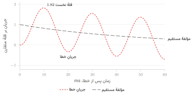
- توانِ اتصالِ کوتاهِ 250 MVA در 33 kV چه جریانِ متقارنی میدهد؟
- چرا خطای سهفاز را میتوان با مدارِ تکفاز حل کرد و خطای تکفاز به زمین را نه؟
- اگر خطا در لحظهای رخ دهد که \(\alpha = \theta\)، مؤلفهٔ مستقیم چه میشود؟
- چرا \(X/R\) بزرگتر قلهٔ نخست را بیشتر میکند؟
- کلید باید کدام دو عددِ خطا را تحمل کند؟
- چرا سهمِ اینورترها در جریانِ خطا از سهمِ ژنراتورهای همگام کمتر است؟
7.4 ج. توان و شکلموجهای غیرایدئال
بخشِ ج به پرسشی میپردازد که هر قرارداد، هر صورتحساب و هر برگهٔ دادهٔ تجهیز به آن وابسته است: توان در جریانِ متناوب دقیقاً چیست؟ پاسخ سه کمیت است (اکتیو، راکتیو و ظاهری) و یک ضریب (ضریبِ توان). سپس شکلموجهای غیرسینوسی را میبینیم: بارهای غیرخطی، هارمونیکها، اثرشان بر نول و تجهیزات، اعوجاجِ ولتاژ، و اینکه دستگاههای اندازهگیری با آنها چه میکنند. بخش با تفسیرِ اندازهگیریهای کیفیتِ توان پایان مییابد.
برنامه:
companion/ch07/examples_c.py
7.4.1 توانِ لحظهای
از تعریف. توانِ لحظهای همان \(p = v\,i\)ِ فصلِ ۶ است. با \(v = \sqrt2 V\sin\omega t\) و \(i = \sqrt2 I\sin(\omega t - \varphi)\) و اتحادِ \(2\sin x\sin y = \cos(x - y) - \cos(x + y)\):
\[ p(t) = VI\cos\varphi - VI\cos(2\omega t - \varphi) = P\,(1 - \cos 2\omega t) - Q\,\sin 2\omega t \tag{7.35}\]
با \(P = VI\cos\varphi\) و \(Q = VI\sin\varphi\). دو جمله دو رفتار را جدا میکنند (شکل 7.12):
- \(P(1 - \cos 2\omega t)\) هیچگاه منفی نیست و میانگینش \(P\) است: انرژیِ یکطرفه که از منبع به بار میرود و آنجا کار یا گرما میشود. این توانِ اکتیو است.
- \(-Q\sin 2\omega t\) با دو برابرِ بسامد رفتوبرگشت میکند و میانگینش صفر است: انرژیِ ذخیرهشده در میدانهای سلفها و خازنها که هر ربعدوره میانِ منبع و بار جابهجا میشود. دامنهاش توانِ راکتیو است. هیچ انرژیِ خالصی منتقل نمیکند، اما جریان میخواهد، و جریان سیمها را گرم میکند و ولتاژ را میاندازد.
مثال 7.31 (توانِ لحظهایِ یک فاز) پرسش. با 230 V و 100 A و \(30^\circ\) پسفازی، \(P\) و \(Q\) را بیابید و توانِ لحظهای را در یک دوره نمونهبرداری کنید: میانگین، بیشینه و کمینه.
پاسخ.
single phase, 230 V and 100 A RMS, current 30 deg behind:
p(t) = P (1 - cos 2wt) - Q sin 2wt
P = V I cos(phi) = 19.92 kW, Q = V I sin(phi) = 11.50 kvar
mean of p(t) over a period 19.92 kW; peak 42.91 kW; minimum -3.08 kW
Q is the amplitude of the part that flows back and forth twice per cycle:
no net energy, but current, so heating and voltage dropتفسیر. میانگینِ نمونهها دقیقاً \(P = 19.92\ \text{kW}\) است. بیشینه \(P + S = 19.92 + 23.0 = 42.9\) و کمینه \(P - S = -3.1\) کیلووات: در بخشِ کوچکی از هر نیمدوره، انرژی از بار به منبع برمیگردد. وارسی: \(P^2 + Q^2 = S^2\): \(19.92^2 + 11.50^2 = 23.0^2\) (درست).
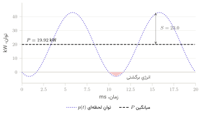
7.4.2 توانِ اکتیو، راکتیو و ظاهری
سه کمیت، سه یکا. برای یک فاز (فصلِ ۲، بخش 2.2.6، این نامها را معرفی کرد):
| کمیت | تعریف | یکا | معنا |
|---|---|---|---|
| توانِ اکتیو \(P\) | \(VI\cos\varphi\) | W | میانگینِ توانِ لحظهای؛ کار و گرما |
| توانِ راکتیو \(Q\) | \(VI\sin\varphi\) | var | دامنهٔ بخشِ رفتوبرگشتی؛ میدانها |
| توانِ ظاهری \(S\) | \(VI\) | VA | حاصلضربِ اندازهها؛ تعیینکنندهٔ جریان |
هر سه از نظرِ بُعدی ولت در آمپرند؛ یکاهای جدا (W، var و VA) برای ایناند که خواننده بداند کدام کمیت است (فصلِ ۲). «کیلووات» برای توانِ راکتیو غلط است.
توانِ مختلط. هر سه کمیت در یک عددِ مختلط جمع میشوند:
\[ \mathbf{S} = \mathbf{V}\,\mathbf{I}^{*} = VI\angle(\theta_v - \theta_i) = VI\angle\varphi = P + jQ, \qquad S = |\mathbf{S}| = \sqrt{P^2 + Q^2} \tag{7.36}\]
مزدوجِ جریان لازم است تا زاویهٔ حاصل اختلافِ زاویهها باشد، نه جمعشان. برای سهفاز \(\mathbf{S}_{3} = \mathbf{V}_\text{a}\mathbf{I}_\text{a}^{*} + \mathbf{V}_\text{b}\mathbf{I}_\text{b}^{*} + \mathbf{V}_\text{c}\mathbf{I}_\text{c}^{*}\)، که برای سامانهٔ متعادل \(3\mathbf{V}_\text{ph}\mathbf{I}^{*}\) است. سهضلعیِ \(P\)، \(Q\) و \(S\) مثلثِ توان است (شکل 7.13).
توانِ راکتیوِ عنصرها. با معادلهٔ 7.36 و \(\mathbf{V} = jX\mathbf{I}\): سلف \(Q = I^2 X_L > 0\) دارد و خازن \(Q = -I^2 X_C = -V^2/X_C < 0\). با قراردادِ بار، سلف توانِ راکتیو مصرف میکند و خازن توانِ راکتیو تولید. این فقط یک قرارداد است، اما قراردادی که همهٔ صنعت به کار میبرد: موتورها و ترانسفورماتورها «مصرفکنندهٔ توانِ راکتیو»ند و خازنها و کابلها «تولیدکننده».
پایستگیِ توانِ مختلط. در هر شبکه، جمعِ توانِ مختلطِ تحویلیِ منابع برابرِ جمعِ توانِ مختلطِ همهٔ عنصرهاست. یعنی \(P\)ها با هم و \(Q\)ها با هم جمع میشوند؛ اما \(S\)ها جمع نمیشوند، چون اندازههای عددهای مختلطاند.
مثال 7.32 (چهار بارِ نمونه و جمعِ توانها) پرسش. \(S\) و ضریبِ توانِ اینها را بیابید: تابلوی کمکیِ 180 kW و 135 kvar؛ موتوری با بارِ کم (20 kW، 30 kvar)؛ گرمکنِ مقاومتیِ 15 kW؛ بانکِ خازنیِ 75 kvar. سپس بارِ 100 kW با ضریبِ توانِ 0.8 و بارِ 50 kW با ضریبِ توانِ یک را با هم جمع کنید.
پاسخ.
P, Q, S and pf (load convention: Q > 0 for lagging current):
auxiliary board 180.0 kW 135.0 kvar 225.0 kVA pf 0.800 lagging
motor at light load 20.0 kW 30.0 kvar 36.1 kVA pf 0.555 lagging
resistive heater 15.0 kW 0.0 kvar 15.0 kVA pf 1.000 unity
capacitor bank 0.0 kW -75.0 kvar 75.0 kVA pf 0.000 leading
plant convention (A-024): export P > 0; the plant 'supplies' Q when it
acts like a capacitor towards the grid and 'absorbs' Q like an
inductor: always state which convention a number usesجمعِ دو بار: \(\mathbf{S} = (100 + j75) + (50 + j0) = 150 + j75\)، یعنی 167.7 kVA، در حالی که \(|\mathbf{S}_1| + |\mathbf{S}_2| = 125 + 50 = 175\ \text{kVA}\) (سطرِ E30).
تفسیر. موتورِ کمبار بدترین ضریبِ توان را دارد (0.555)، چون جریانِ مغناطیسکنندهاش با بار کم نمیشود: موتورِ بزرگتر از نیاز، ضریبِ توانِ تابلو را خراب میکند. جمعِ حسابیِ توانهای ظاهری همیشه بیشبرآورد است (مگر همه یک ضریبِ توان داشته باشند)؛ فهرستِ بار باید \(P\) و \(Q\) را جداگانه جمع کند (بخش 7.5.1).
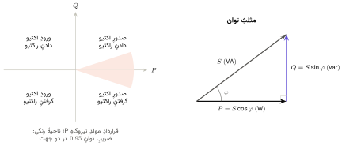
قراردادِ علامت: بار یا مولد؟ همان جریانِ فیزیکی را میتوان با دو قرارداد گزارش کرد:
- قراردادِ بار (به انگلیسی load convention): توانی که به درون عنصر میرود مثبت است. مناسبِ تابلوها و مصرفکنندهها؛ \(Q > 0\) برای جریانِ پسفاز. قراردادِ پیشفرضِ کدِ این کتاب برای بارها.
- قراردادِ مولد (به انگلیسی generator convention): توانی که از عنصر بیرون میآید مثبت است. مناسبِ نیروگاه؛ در نیروگاهِ P، توانِ اکتیوِ صادره در نقطهٔ اتصال مثبت است (A-024) و «دادنِ توانِ راکتیو به شبکه» (رفتارِ شبیهِ خازن از دیدِ شبکه) مثبت.
مثال 7.33 (یک جریان، دو گزارش) پرسش. نیروگاهِ P 100 MW صادر میکند و همزمان 20 Mvar از شبکه جذب میکند (رفتارِ سلفی از دیدِ شبکه). این را در قراردادِ مولدِ نیروگاه و در قراردادِ بارِ یک شمارنده که «ورود به نیروگاه» را مثبت میگیرد بنویسید.
پاسخ. قراردادِ مولد: \(P = +100\ \text{MW}\)، \(Q = -20\ \text{Mvar}\). قراردادِ بار: \(P = -100\)، \(Q = +20\) (سطرِ E31).
تفسیر. دو گزارشِ درست از یک واقعیت، با همهٔ علامتهای وارونه. در جلسهای که بهرهبردارِ شبکه میگوید «نیروگاه مثبت بیست مگاوار دارد» و نیروگاه میگوید «منفی بیست»، ممکن است هر دو درست بگویند. قاعدهٔ کتاب: هر عددِ توانِ راکتیو با قراردادش گزارش شود، و در پروندهٔ نیروگاهِ P قراردادِ مولد در نقطهٔ اتصال به کار رود (تصمیمِ D-010 در بخش 7.11). شمارندههای انرژی معمولاً چهار ثبّاتِ جدا برای چهار ربعِ شکل 7.13 دارند.
- باری با 40 kW و 30 kvar: توانِ ظاهری و ضریبِ توان؟
- چرا \(\mathbf{S} = \mathbf{V}\mathbf{I}^{*}\) و نه \(\mathbf{V}\mathbf{I}\)؟ با \(\mathbf{V} = 100\angle 30^\circ\) و \(\mathbf{I} = 10\angle 0^\circ\) هر دو را حساب کنید.
- توانِ راکتیوِ خازنِ \(X_C = 20\ \Omega\) زیرِ 230 V با قراردادِ بار چیست؟
- چرا توانهای ظاهری جمع نمیشوند ولی توانهای اکتیو و راکتیو جمع میشوند؟
- یک کابلِ بیبار در قراردادِ بار چه علامتی از توانِ راکتیو دارد؟
- در ربعِ دومِ شکل 7.13 نیروگاه چه میکند؟
- چرا «کیلووات» برای توانِ راکتیو غلط است؟
- اگر شمارندهای فقط «اندازهٔ» توانِ راکتیو را ثبت کند، چه اطلاعاتی از دست میرود؟
7.4.3 ضریبِ توان و اصلاحِ آن
تعریف. ضریبِ توان (به انگلیسی power factor) نسبتِ توانِ اکتیو به توانِ ظاهری است:
\[ \text{pf} = \frac{P}{S} \tag{7.37}\]
برای ولتاژ و جریانِ سینوسی \(\text{pf} = \cos\varphi\)؛ این حالت را ضریبِ توانِ جابهجایی هم مینامند. برای جریانِ اعوجاجی، ضریبِ توانِ واقعی از \(\cos\varphi\) کمتر است (بخش 7.4.7). ضریبِ توان را همیشه با جهتش گزارش کنید: «0.95 پسفاز» یا «0.95 پیشفاز»؛ عددِ 0.95 به تنهایی دو حالتِ کاملاً متفاوت را میپوشاند.
چرا مهم است. برای توانِ اکتیوِ ثابت، جریان با \(1/\text{pf}\) و تلفاتِ هادی با \(1/\text{pf}^2\) بالا میرود؛ افتِ ولتاژ با جملهٔ \(XQ\) زیاد میشود (معادلهٔ 7.13)؛ و ظرفیتِ ترانسفورماتور و کابل برای توانِ اکتیوِ بیشتر هدر میرود. در بسیاری از شبکهها، مصرفکنندههای بزرگ بابتِ ضریبِ توانِ پایین هزینه میپردازند و نیروگاهها باید در محدودهٔ مشخصی از ضریبِ توان کار کنند؛ این قاعدهها کشوری و قراردادیاند و در این فصل فرض نمیشوند (فصلهای ۱۷ و ۵۵ تا ۵۷).
اصلاح با خازن. خازنی موازی با بار، توانِ راکتیوِ مصرفیِ بار را در محل تأمین میکند تا از شبکه کشیده نشود. برای بردنِ ضریبِ توان از \(\cos\varphi_1\) به \(\cos\varphi_2\) با توانِ اکتیوِ ثابت:
\[ Q_\text{c} = P\left(\tan\varphi_1 - \tan\varphi_2\right) \tag{7.38}\]
مثال 7.34 (اصلاحِ ضریبِ توانِ تابلوی کمکی) پرسش. تابلوی کمکیِ 180 kW با ضریبِ توانِ 0.80 پسفاز در 400 V کار میکند. چه خازنی ضریبِ توان را به 0.95 میرساند؟ جریان و تلفاتِ کابلِ تغذیه چه تغییری میکنند؟ اگر کسی برای «ضریبِ توانِ یک» خازنِ 135 kvar بگذارد و بعداً بار نصف شود چه؟
پاسخ.
auxiliary board 180 kW at pf 0.8: Q = 135.0 kvar
to reach pf 0.95: Q_c = P (tan phi1 - tan phi2) = 75.8 kvar
current 324.8 A -> 273.5 A (-15.8 %); I^2 R losses -29.1 %
the capacitor changes no active power: it supplies locally the
reactive power that otherwise flows through transformer and cablesبرای ضریبِ توانِ یک 135 kvar لازم است؛ خازنِ 194.2 kvar با همان بار ضریبِ توان را به 0.95 پیشفاز میرساند (سطرِ E32). با نصف شدنِ بار و ماندنِ خازنِ 135 kvar، توانِ راکتیوِ بار 67.5 kvar و خالصِ تابلو 67.5 kvar تولیدی میشود.
تفسیر. خازنِ 75.8 kvar جریان را 15.8 % و تلفاتِ مسیِ کابل و ترانسفورماتور را 29 % کم میکند، بیآنکه توانِ اکتیو تغییر کند. اما اصلاحِ بیش از اندازه ضریبِ توان را پیشفاز و ولتاژ را بالا میبرد. برای همین بانکهای اصلاح معمولاً پلهای و خودکاراند و با بار تنظیم میشوند. سه احتیاطِ دیگر: خازن تشدید را جابهجا میکند (مثال 7.15)، در کلیدزنی هجومِ جریان میسازد، و با ولتاژِ هارمونیکی جریانِ اضافه میکشد (مثال 7.40). در نیروگاه، خودِ اینورترها منبعِ توانِ راکتیوِ کنترلپذیرند (بخش 7.4.5) و نیاز به بانکِ خازنیِ جدا را کم میکنند.
- خازنِ لازم برای بردنِ 50 kW از ضریبِ توانِ 0.7 به 0.9 چیست؟
- اگر ضریبِ توان از 0.8 به 1.0 برود، جریان و تلفات چند درصد کم میشوند؟
- چرا «ضریبِ توانِ 0.9» بیجهت ناقص است؟
- خطرِ اصلاحِ بیش از اندازه چیست؟
- چرا بانکهای اصلاح پلهای ساخته میشوند؟
- در مثال 7.34، اگر خازن در سمتِ 33 kV گذاشته شود، کدام تلفات کم نمیشوند؟
7.4.4 چرا توانِ ظاهری ردهٔ تجهیز را تعیین میکند
استدلال. یک ترانسفورماتور، کابل یا اینورتر دو محدودیتِ فیزیکی دارد: گرما، که با مجذورِ جریان بالا میرود (\(I^2 R\) در سیمپیچ و هادی و نیمهرسانا)، و تنشِ عایق و هسته، که با ولتاژ تعیین میشود (عایق با قلهٔ ولتاژ و هستهٔ ترانسفورماتور با شار، یعنی ولتاژ بر بسامد). هیچکدام به ضریبِ توان اهمیت نمیدهد: جریانِ 100 A با هر زاویهای همانقدر گرما میسازد. حاصلضربِ بیشینهٔ ولتاژِ مجاز و بیشینهٔ جریانِ مجاز توانِ ظاهری است؛ پس ردهٔ این تجهیزات به kVA یا MVA است:
- ترانسفورماتور: kVA یا MVA؛ تلفِ بارش با \((S/S_\text{r})^2\) بالا میرود (فصلِ ۵).
- ژنراتور و اینورتر: MVA برای جریان، و جداگانه MW برای ماشینِ محرک یا منبعِ DC؛ نمودارِ قابلیت هر دو را نشان میدهد (بخش 7.4.5).
- کابل، شینه و کلید: مستقیماً با آمپر (و برای کلید، جریانِ قطعِ اتصالِ کوتاه با کیلوآمپر).
- منبعِ تغذیهٔ بیوقفه: kVA و kW با هم، چون هم اینورتر و هم باتری محدودیت دارند.
- موتور: استثنا؛ پلاکِ موتور توانِ مکانیکیِ محور را به کیلووات میدهد، و جریانِ ورودی را با ضریبِ توان و بازده باید حساب کرد.
مثال 7.35 (بارگذاریِ ترانسفورماتورِ کمکی و ترانسفورماتورِ صادرات) پرسش. تابلوی کمکیِ 180 kW از ترانسفورماتورِ 250 kVA تغذیه میشود. بارگذاری را با ضریبِ توانِ 0.80 و 0.95 حساب کنید. همین را برای ترانسفورماتورِ صادراتِ 120 MVA با 100 MW و ضریبِ توانِ 0.95 و 0.90 انجام دهید. جریانِ خطِ هر حالت در مثال 7.22 آمده است.
پاسخ. (سطرهای E33)
| حالت | توانِ ظاهری | ردهٔ ترانسفورماتور | بارگذاری |
|---|---|---|---|
| کمکی، ضریبِ توانِ 0.80 | 225.0 kVA | 250 kVA | 90 % |
| کمکی، ضریبِ توانِ 0.95 | 189.5 kVA | 250 kVA | 76 % |
| صادرات، ضریبِ توانِ 0.95 | 105.3 MVA | 120 MVA | 88 % |
| صادرات، ضریبِ توانِ 0.90 | 111.1 MVA | 120 MVA | 93 % |
تفسیر. با همان 180 kW، ضریبِ توانِ پایین ترانسفورماتورِ کمکی را به 90 % میرساند و جای کمی برای رشدِ بار میگذارد. برای ترانسفورماتورِ صادرات، کارِ نیروگاه در ضریبِ توانِ 0.90 (مثلاً برای پشتیبانیِ ولتاژِ شبکه) 5.8 MVA از ظرفیت را میگیرد. نتیجهٔ طراحی: ردهٔ ترانسفورماتورِ صادرات را بازهٔ ضریبِ توانِ لازم در نقطهٔ اتصال و بیشینهٔ توانِ اکتیو با هم تعیین میکنند، نه سقفِ 100 MW بهتنهایی؛ فصلِ ۲۵ دمای محیط، ارتفاع، هارمونیکها و بارِ چرخهای را هم میافزاید.
- چرا ردهٔ ترانسفورماتور kVA است و ردهٔ موتور kW؟
- ترانسفورماتورِ 250 kVA چند کیلووات بارِ مقاومتیِ خالص میتواند بدهد؟ چند کیلووات با ضریبِ توانِ 0.7؟
- چرا کابل مستقیماً با آمپر ردهبندی میشود؟
- اگر هارمونیکها مقدارِ مؤثرِ جریان را 10 % بالا ببرند، بارگذاریِ واقعیِ ترانسفورماتور چه میشود؟
- در جدول 7.4، ترانسفورماتورِ صادرات در ضریبِ توانِ 0.85 چند درصد بار دارد؟
7.4.5 نمودارِ قابلیتِ P–Q
ایده. اینورتر یا ژنراتورِ نیروگاه میتواند، افزون بر توانِ اکتیو، توانِ راکتیو هم بدهد یا بگیرد، اما محدودیتِ جریان (یعنی توانِ ظاهری در ولتاژِ نامی) هر دو را با هم مهار میکند: \(P^2 + Q^2 \le S_\text{r}^2\). افزون بر این، توانِ اکتیو از توانِ منبع (تابش یا باد) و از ردهٔ اکتیوِ واحد بیشتر نمیشود. مرزِ ناحیهٔ مجاز در صفحهٔ \(P\)–\(Q\) نمودارِ قابلیت (به انگلیسی capability chart) است (شکل 7.14):
\[ |Q| \le \sqrt{S_\text{r}^2 - P^2}, \qquad 0 \le P \le P_\text{r} \tag{7.39}\]
مثال 7.36 (قابلیتِ اینورترِ 5.5 MVA) پرسش. اینورترهای خورشیدیِ نیروگاهِ P برای 5.0 MW و 5.5 MVA فرض شدهاند (A-101، فرضی، نه دادهٔ سازنده). توانِ راکتیوِ در دسترس را در 5، 4، 2.5 و صفر مگاوات بیابید. جریانِ نامی در 690 V چیست، و اگر ولتاژ به 0.90 pu بیفتد، با همان جریان چه توانِ ظاهریای در دسترس است؟
پاسخ.
inverter rated 5.0 MW and 5.5 MVA (A-101): Q available = sqrt(S^2 - P^2)
P = 5.0 MW: |Q| <= 2.29 Mvar; pf range down to 0.909
P = 4.0 MW: |Q| <= 3.77 Mvar; pf range down to 0.727
P = 2.5 MW: |Q| <= 4.90 Mvar; pf range down to 0.455
P = 0.0 MW: |Q| <= 5.50 Mvar; pf range down to 0.000
with S equal to the active rating, no reactive power at full output
(the real P-Q chart comes from the manufacturer and depends on voltage)جریانِ نامی \(5.5\times 10^6/(\sqrt3 \times 690) = 4602\ \text{A}\)؛ در 0.90 pu ولتاژ، همان جریان فقط 4.95 MVA میدهد (سطرِ E34). ولتاژِ 690 V اینجا فرضی است؛ فصلِ ۹ با شاهدِ پنجرهٔ ولتاژِ DC آن را به 600 V تغییر میدهد (تصمیمِ D-012، بخش 9.5.4) و جریانِ نامی 5292 A میشود؛ نتیجهگیریهای این مثال تغییر نمیکنند.
تفسیر. در توانِ کامل فقط 2.29 Mvar در دسترس است (ضریبِ توانِ 0.909)؛ اگر ردهٔ ظاهری با ردهٔ اکتیو برابر بود (5.0 MVA)، در توانِ کامل هیچ توانِ راکتیوی نمیماند. پس «10 % اضافهٔ ظرفیتِ ظاهری» تصمیمی اقتصادی است که قابلیتِ پشتیبانیِ ولتاژِ نیروگاه را میسازد. در ولتاژِ پایینتر، محدودیتِ جریان قابلیت را کوچک میکند، درست وقتی که شبکه بیشترین نیاز را به توانِ راکتیو دارد. نمودارِ واقعیِ هر محصول را سازنده میدهد، به ولتاژ، دما و بسامد وابسته است و محدودیتهای دیگری (ولتاژِ DC، دمای نیمهرسانا) هم دارد (فصلهای ۹ و ۲۰). اینکه نیروگاه در نقطهٔ اتصال چه بازهای از توانِ راکتیو باید داشته باشد، الزامِ شبکه است (فصلهای ۱۷ و ۵۵ تا ۵۷) و در مثال 7.52 با یک هدفِ آموزشی غربال میشود.
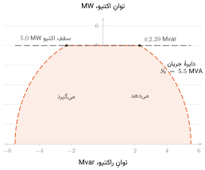
- اینورترِ 3 MW و 3.3 MVA در توانِ کامل چه توانِ راکتیوی دارد؟
- چرا در ولتاژِ پایین قابلیتِ توانِ راکتیو کم میشود؟
- اگر تابش کم باشد و اینورتر 1 MW تولید کند، چه توانِ راکتیوی در دسترس است؟
- چرا ردهٔ ظاهریِ بزرگتر از ردهٔ اکتیو تصمیمی اقتصادی است؟
- آیا اینورترِ خورشیدی در شب میتواند توانِ راکتیو بدهد؟ به چه چیزی بستگی دارد؟
- نمودارِ شکل 7.14 را برای 5.0 MVA دوباره در ذهن بکشید: چه تفاوتی دارد؟
7.4.6 بارهای غیرخطی و جریانِ اعوجاجی
خطی و غیرخطی. مقاومت، سلف و خازن خطیاند: به ولتاژِ سینوسی جریانِ سینوسی میدهند. اما بیشترِ بارهای امروزی غیرخطیاند: یکسوکنندهٔ ورودیِ هر منبعِ تغذیهٔ الکترونیکی (رایانه، شارژر، راهاندازِ لامپِ LED)، مبدّلِ بسامدِ موتورها و پمپها، منبعِ تغذیهٔ بیوقفه، و هستهٔ اشباعشدهٔ ترانسفورماتور. یکسوکنندهٔ ساده با خازنِ صافکن فقط نزدیکِ قلهٔ ولتاژ، وقتی ولتاژِ شبکه از ولتاژِ خازن بیشتر است، جریان میکشد: جریانی باریک و تیز دو بار در هر دوره (شکل 7.15).
فوریه دوباره. هر شکلموجِ دورهای با دورهٔ \(T_1\) جمعِ یک مؤلفهٔ اصلی با بسامدِ \(f_1\) و هارمونیکهایی با بسامدِ \(h f_1\) است (بخش 3.3.13):
\[ i(t) = \sum_{h=1}^{\infty} \sqrt2\,I_h\,\sin(h\omega t + \varphi_h) \tag{7.40}\]
اگر شکلِ موج نیمدورهٔ مثبت و منفیِ قرینه داشته باشد (همهٔ بارهای عادیِ شبکه)، فقط هارمونیکهای فرد هستند: سوم، پنجم، هفتم و…. مبدّلها با الگوی کلیدزنیِ خودشان هارمونیکهای مشخصی میسازند؛ اینورترهای امروزی با کلیدزنیِ پرسرعت بیشترِ اعوجاج را به بسامدهای بالا (حدودِ بسامدِ کلیدزنی) میبرند که صافی آن را میگیرد (فصلِ ۹).
مثال 7.37 (هارمونیکهای موجِ مربعی) پرسش. موجِ مربعی با دامنهٔ یک چه مؤلفهٔ اصلیای دارد؟ اعوجاجِ کلِ آن (تعریف در معادلهٔ 7.41) چیست؟ اگر فقط تا هارمونیکِ ۴۱ را بشمریم چه؟
پاسخ. قلهٔ مؤلفهٔ اصلی \(4/\pi = 1.2732\) است و هارمونیکِ مرتبهٔ فردِ \(h\) دامنهٔ \(4/(\pi h)\) دارد. اعوجاجِ کلِ دقیق \(\sqrt{\pi^2/8 - 1} = 48.34\ \%\) و با ۴۱ مرتبهٔ نخست \(47.10\ \%\) (سطرِ E35).
تفسیر. مؤلفهٔ اصلی از دامنهٔ خودِ موج بزرگتر است. هارمونیکها با \(1/h\) آهسته کوچک میشوند، پس بریدنِ شمارش در یک مرتبهٔ پایین بخشِ معناداری را جا میاندازد: هر گزارشِ اعوجاج باید بگوید تا کدام مرتبه شمرده است. در عمل گزارشها معمولاً تا مرتبهٔ ۴۰ یا ۵۰ را میشمرند؛ مرتبهٔ دقیق را سندِ مرجعِ همان اندازهگیری تعیین میکند.
7.4.7 هارمونیکها، اعوجاجِ کل و ضریبِ توانِ واقعی
اعوجاجِ هارمونیکیِ کل. اندازهٔ اعوجاج را با نسبتِ مقدارِ مؤثرِ همهٔ هارمونیکها به مؤلفهٔ اصلی میسنجیم:
\[ \text{THD}_I = \frac{\sqrt{\sum_{h \ge 2} I_h^2}}{I_1}, \qquad I = I_1\sqrt{1 + \text{THD}_I^2} \tag{7.41}\]
رابطهٔ دوم از معادلهٔ 7.6 میآید. همین تعریف برای ولتاژ \(\text{THD}_V\) را میدهد. دام: اعوجاجِ کل نسبت به مؤلفهٔ اصلی است؛ وقتی بار کم است و مؤلفهٔ اصلی کوچک، اعوجاجِ کل بزرگ دیده میشود هرچند آمپرِ هارمونیک کم است. برای همین برخی معیارها اعوجاج را نسبت به جریانِ بیشینهٔ بار تعریف میکنند (مفهومِ «اعوجاجِ تقاضای کل»)؛ تعریفِ دقیقِ هر معیار در سندِ خودش است.
ضریبِ قله. جریانِ تیز ضریبِ قلهٔ بزرگی دارد؛ کلیدها، فیوزها و منابعِ تغذیهٔ بیوقفه باید آن قله را تحمل کنند.
ضریبِ توانِ واقعی. فقط مؤلفهٔ اصلیِ جریان با ولتاژِ سینوسی توانِ اکتیوِ میانگین میسازد (حاصلضربِ دو بسامدِ متفاوت میانگینِ صفر دارد). پس با ولتاژِ سینوسی:
\[ P = V I_1\cos\varphi_1, \qquad \text{pf} = \frac{P}{VI} = \cos\varphi_1\cdot\frac{I_1}{I} = \frac{\cos\varphi_1}{\sqrt{1 + \text{THD}_I^2}} \tag{7.42}\]
ضریبِ توانِ واقعی حاصلضربِ ضریبِ جابهجایی (\(\cos\varphi_1\)) و ضریبِ اعوجاج (\(I_1/I\)) است. خازن فقط ضریبِ جابهجایی را اصلاح میکند، نه ضریبِ اعوجاج را؛ برای دومی صافی لازم است.
ضریبِ K. تلفاتِ جریانهای گردابی در سیمپیچِ ترانسفورماتور تقریباً با مجذورِ بسامد بالا میرود. ضریبِ K این را خلاصه میکند:
\[ K = \frac{\sum_h h^2 I_h^2}{\sum_h I_h^2} \tag{7.43}\]
ترانسفورماتوری که بارِ اعوجاجیِ زیاد را تغذیه میکند یا برای ضریبِ Kِ مشخص ساخته میشود یا با ظرفیتِ کمتر از ردهٔ نامی بارگذاری میشود (فصلهای ۲۵ و ۴۳).
مثال 7.38 (جریانِ اینورتر و جریانِ روشناییِ LED) پرسش. دو طیفِ جریان را مقایسه کنید: جریانِ اینورترِ خورشیدی با 4 % پنجم و 3 % هفتم (A-040، فرضی) و جریانِ راهاندازِ LED با هارمونیکهای سوم تا یازدهم برابرِ 0.80، 0.55، 0.30، 0.15 و 0.08 مؤلفهٔ اصلی (A-105، فرضی؛ شکلی نوعی برای یکسوکنندهٔ ساده). اعوجاجِ کل، مقدارِ مؤثر، ضریبِ قله، ضریبِ توانِ واقعی (با \(\cos\varphi_1 = 1\)) و ضریبِ K را بیابید. اگر روشناییِ LED متعادل میانِ سه فاز پخش باشد، نول چه جریانی دارد؟
پاسخ.
PV inverter current (A-040):
THD 5.0 %, RMS 1.001 pu, crest 1.43, true pf 0.999 (cos phi1 = 1), K 1.08
LED driver current (A-105):
THD 103.0 %, RMS 1.436 pu, crest 2.84, true pf 0.696 (cos phi1 = 1), K 10.35
three phases of LED lighting, 1.0 pu fundamental each, balanced:
phase current 1.436 pu RMS; the neutral carries the
triplen orders (3rd, 9th) of all three phases
neutral = 3 x sqrt(0.80^2 + 0.15^2) = 2.442 pu: 1.70 times a phase current
a neutral sized for 'balanced load = no neutral current' overheatsتفسیر. جریانِ اینورتر تقریباً سینوسی است: اعوجاجِ 5 %، ضریبِ توانِ واقعیِ 0.999. جریانِ LED برعکس بیش از صد درصد اعوجاج دارد: مقدارِ مؤثرش 44 % بیش از مؤلفهٔ اصلی است، ضریبِ قلهاش 2.84، و ضریبِ توانِ واقعیاش 0.70 است هرچند مؤلفهٔ اصلی کاملاً همفاز با ولتاژ است. شگفتیِ اصلی در نول است: با بارِ کاملاً متعادل، نول 1.70 برابرِ هر فاز جریان دارد، چون هارمونیکهای سوم و نهمِ سه فاز همفازند و جمع میشوند (بخش 7.3.7). نولی که با فرضِ «بارِ متعادل، نولِ بیجریان» نازکتر از فازها انتخاب شده باشد، گرم میشود.
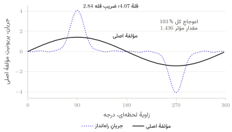
توالیِ هارمونیکها. در سامانهٔ سهفازِ متعادل، مؤلفهٔ اصلیِ فازِ b \(120^\circ\) عقب است؛ هارمونیکِ مرتبهٔ \(h\)ِ همان فاز \(h \times 120^\circ\) عقب است. نتیجه یک الگوی سهتایی است (سطرهای E36):
| مرتبه | جابهجاییِ فازِ b | توالی | پیامد |
|---|---|---|---|
| ۱، ۴، ۷، ۱۰، ۱۳ | \(-120^\circ\) | مثبت | مانندِ مؤلفهٔ اصلی |
| ۲، ۵، ۸، ۱۱ | \(+120^\circ\) | منفی | گشتاورِ مخالف و گرمای روتورِ ماشینها |
| ۳، ۶، ۹ (مضربِ سه) | \(0^\circ\) | صفر | جمع در نول؛ گردش در مثلث |
هارمونیکهای مضربِ سه از اتصالِ مثلثِ یک ترانسفورماتور عبور نمیکنند و در آن میچرخند؛ به همین دلیل ترانسفورماتورهای توزیع با سیمپیچِ مثلث هارمونیکِ سومِ بارهای ولتاژپایین را از شبکهٔ بالادست جدا نگه میدارند، به بهای گرمای بیشتر در خودِ ترانسفورماتور.
- جریانی با \(I_1 = 100\ \text{A}\)، \(I_5 = 20\ \text{A}\) و \(I_7 = 14\ \text{A}\): اعوجاجِ کل و مقدارِ مؤثر؟
- ضریبِ توانِ واقعیِ همان جریان با \(\cos\varphi_1 = 0.95\)؟
- چرا خازن ضریبِ اعوجاج را بهتر نمیکند؟
- هارمونیکِ یازدهم چه توالیای دارد؟ نوزدهم؟
- ضریبِ Kِ جریانِ سینوسیِ خالص چیست؟
- چرا اعوجاجِ کلِ یک بارِ کمبار ممکن است گمراهکننده باشد؟
- در مثال 7.38، اگر روشنایی فقط روی یک فاز بود، جریانِ هارمونیکیِ نول چه میشد؟ (مثال 7.47.)
- چرا هارمونیکِ سوم از ترانسفورماتورِ مثلث–ستاره به سمتِ مثلث نمیرسد؟
7.4.8 از جریانِ اعوجاجی تا ولتاژِ اعوجاجی
سازوکار. بارِ غیرخطی جریانِ هارمونیکی تزریق میکند. این جریان از امپدانسِ شبکه میگذرد و ولتاژِ هارمونیکی میسازد که همهٔ مصرفکنندههای دیگرِ همان شینه میبینند. چون راکتانسِ شبکه با بسامد بالا میرود (\(hX\))، هارمونیکهای بالاتر با جریانِ کمتر هم ولتاژِ قابلِتوجهی میسازند. برای هر مرتبه، با تقریبِ شبکهٔ سلفیِ خالص:
\[ V_h \approx I_h\,h\,X_\text{sc}, \qquad X_\text{sc} = \frac{V_\text{LL}^2}{S_\text{sc}} \tag{7.44}\]
پس شبکهٔ قوی (توانِ اتصالِ کوتاهِ بزرگ) اعوجاجِ ولتاژِ کمتری دارد. و اگر تشدیدِ موازی نزدیکِ مرتبهٔ \(h\) باشد (مثال 7.15)، امپدانس از \(hX_\text{sc}\) بسیار بیشتر و ولتاژِ هارمونیکی بسیار بزرگتر میشود.
مثال 7.39 (اعوجاجِ ولتاژِ شینهٔ 33 kV از اینورترهای خورشیدی) پرسش. با توانِ اتصالِ کوتاهِ 500 MVA در شینهٔ 33 kV (A-100) و اینورترهایی با طیفِ A-040، کلِ 50 MWِ خورشیدی در توانِ نامی چه اعوجاجِ ولتاژی میسازد؟ فرض کنید همهٔ اینورترها همفاز تزریق میکنند (بدترین حالت) و شبکه سلفیِ خالص است.
پاسخ.
33 kV bus, S_sc 500 MVA (A-100): X_sc = V^2 / S_sc = 2.178 ohm at 50 Hz
PV plant 50 MW: fundamental 874.8 A; harmonic current = per-unit x 874.8 A
order 5: I 35.0 A, h X_sc 10.89 ohm, V 381 V = 2.00 % of 19.05 kV
order 7: I 26.2 A, h X_sc 15.25 ohm, V 400 V = 2.10 % of 19.05 kV
voltage THD 2.90 % if all inverters inject in phase (worst case);
inverters partly cancel each other and the network impedance is not pure X:
a harmonic study with measured background distortion decides (ch 27)تفسیر. بدترین حالتِ آموزشی 2.9 % است. سه دلیل عددِ واقعی را کمتر یا بیشتر میکند: اینورترها همفاز نیستند و بخشی از جریانِ هارمونیکیشان یکدیگر را خنثی میکند (مثال 7.53)؛ امپدانسِ شبکه در بسامدهای بالا سلفیِ خالص نیست و تشدید ممکن است آن را بزرگ کند؛ و شبکه پیش از نیروگاه هم اعوجاجِ زمینه دارد که با سهمِ نیروگاه جمع میشود. حدهای اعوجاجِ ولتاژ و سهمِ مجازِ هر مشترک را بهرهبردارِ شبکه با استانداردهای کیفیتِ توان تعیین میکند؛ اعداد را از سندِ قراردادِ اتصال بگیرید، نه از حافظه (فصلهای ۲۷ و ۵۵ تا ۵۷).
7.4.9 پیامدِ هارمونیکها برای تجهیزات
| تجهیز | اثرِ هارمونیک | تدبیرِ رایج |
|---|---|---|
| ترانسفورماتور | تلفاتِ گردابی و پراکندهٔ بیشتر (ضریبِ K)؛ گرمای مثلث از هارمونیکِ سوم | طراحی برای ضریبِ K؛ کاهشِ بارگذاری |
| هادیِ نول | جمعِ هارمونیکهای مضربِ سه | نولِ هماندازه یا بزرگتر از فاز |
| خازن | جریانِ اضافه (\(hV_h/X_C\))؛ تشدید | خازنِ میرا یا صافیِ تنظیمشده |
| موتور و ژنراتور | گرما از توالیِ منفی؛ گشتاورِ ضربانی | محدودکردنِ اعوجاجِ ولتاژ |
| کابل | اثرِ پوستی در بسامدِ بالا؛ گرمای بیشتر | انتخابِ مقطع با مقدارِ مؤثرِ واقعی |
| حفاظت و اندازهگیری | خطای دستگاههای غیرِ مؤثرِ واقعی؛ عملکردِ نادرست | دستگاهِ مؤثرِ واقعی؛ صافیِ مناسب |
مثال 7.40 (خازن زیرِ ولتاژِ هارمونیکی) پرسش. ولتاژِ یک شینه 5 % هارمونیکِ پنجم دارد. خازنِ اصلاحِ ضریبِ توانِ متصل به آن چه جریانِ هارمونیکی و چه مقدارِ مؤثرِ کلی (نسبت به جریانِ نامیِ 50 Hz) میکشد؟
پاسخ. راکتانسِ خازن در مرتبهٔ پنجم \(X_C/5\) است، پس جریانِ پنجم \(V_5/(X_C/5) = 5 \times 0.05 = 0.25\ \text{pu}\) و مقدارِ مؤثرِ کل \(\sqrt{1 + 0.25^2} = 1.031\ \text{pu}\) (سطرِ E37). تفسیر: خازن آهنربای هارمونیکهاست: پنج درصد ولتاژ بیستوپنج درصد جریان میسازد. اگر شینه در پنجم تشدید داشته باشد، ولتاژِ پنجم خودش چند برابر میشود و خازن ظرفِ چند ماه خراب میشود. سازندهها حدِ اضافهجریان و اضافهولتاژِ خازن را در برگهٔ داده میدهند (فصلِ ۲۴).
- چرا شبکهٔ قوی اعوجاجِ ولتاژِ کمتری دارد؟
- ولتاژِ هارمونیکِ هفتمِ جریانِ 10 A روی شبکهای با \(X_\text{sc} = 2\ \Omega\) چیست؟
- چرا تشدید نزدیکِ مرتبهٔ پنجم برای نیروگاهِ خورشیدی خطرناک است؟
- اعوجاجِ زمینه چیست و چرا باید پیش از ساختِ نیروگاه اندازهگیری شود؟
- در مثال 7.40، با 3 % هارمونیکِ هفتم، جریانِ خازن چه میشود؟
- سه تجهیزی که از هارمونیک گرم میشوند و سازوکارِ هر کدام را بنویسید.
7.4.10 دستگاههای اندازهگیری
سه خانوادهٔ دستگاه. (۱) دستگاهِ دستی و تابلویی (ولتمتر، آمپرمتر، کلمپمتر)؛ (۲) شمارندهٔ انرژی، برای صورتحساب و تسویه، با کلاسِ دقتِ مشخص؛ (۳) تحلیلگرِ کیفیتِ توان، که شکلموج را نمونهبرداری میکند و پارامترهای کیفیت را با روشِ استاندارد محاسبه و تجمیع میکند. هر سه از ترانسفورماتورهای جریان و ولتاژ تغذیه میشوند (بخش 7.3.9)، و خطای آنها هم در زنجیرهٔ اندازهگیری وارد است (فصلِ ۲).
مؤثرِ واقعی یا میانگینپاسخ؟ دستگاههای ساده میانگینِ قدرِ مطلقِ موج را میسنجند و آن را در ضریبِ شکلِ سینوس، 1.1107، ضرب میکنند: برای سینوس درست و برای هر شکلِ دیگر غلط. دستگاهِ مؤثرِ واقعی (به انگلیسی true RMS) معادلهٔ 7.4 را مستقیم از نمونهها حساب میکند.
مثال 7.41 (آمپرمترِ ارزان روی مدارِ روشنایی) پرسش. جریانِ LEDِ مثال 7.38 را یک دستگاهِ میانگینپاسخ و یک دستگاهِ مؤثرِ واقعی میخوانند. خطای اولی چند درصد است؟
پاسخ.
an 'average-responding' meter shows 1.1107 x mean(|i|), exact only
for a sine:
sine: true RMS 1.000, meter 1.000
LED driver current: true RMS 1.436, meter 0.822 (-43 %)
on distorted currents use a true-RMS instrument; for power quality use an
analyser built to a standardised measurement methodتفسیر. دستگاهِ میانگینپاسخ جریانِ تیز را 43 % کمتر نشان میدهد: کسی که با آن مدارِ روشنایی را میسنجد، کابل و فیوز را برای جریانی بسیار کمتر از واقعیت انتخاب میکند. برای جریانِ اعوجاجی همیشه دستگاهِ مؤثرِ واقعی، و برای پارامترهای کیفیتِ توان تحلیلگری با روشِ اندازهگیریِ استاندارد به کار ببرید.
نمونهبرداری. تحلیلگر ولتاژ و جریان را با آهنگِ ثابتی نمونهبرداری میکند. با ۲۵۶ نمونه در هر دوره، آهنگِ نمونهبرداری 12.8 kHz و بسامدِ نایکوئیست 6.4 kHz، یعنی مرتبهٔ ۱۲۸ است (سطرِ E39)؛ مؤلفههای بالاتر، بیصافیِ ضدِ دگرنمایی، به بسامدهای پایین تا میخورند و نتیجه را خراب میکنند (بخش 3.3.14). تحلیلگرهای استاندارد پنجرهٔ تحلیل را با بسامدِ واقعیِ شبکه همگام میکنند تا هر پنجره شمارِ صحیحی دوره داشته باشد؛ روشِ اندازهگیریِ هارمونیک و میانهارمونیک در استانداردِ خودش آمده است (جعبهٔ استاندارد).
دقتِ شمارنده و پول. شمارندهٔ صورتحساب با کلاسِ دقت مشخص میشود، برای نمونه کلاسهایی که در عنوانِ استانداردِ شمارندههای ایستای انرژیِ اکتیو آمدهاند (0.1 S، 0.2 S و 0.5 S؛ فصلِ ۲). اگر صادراتِ سالانهٔ نیروگاهِ P 273.3 GWh باشد (ضریبِ ظرفیتِ صادراتِ 0.312، فصلِ ۵)، خطای 0.2 % یعنی 547 MWh در سال، یا با قیمتِ آموزشیِ 50 واحد بر مگاواتساعت حدودِ 27 000 واحد (سطرِ E38). کلِ زنجیره (ترانسفورماتورهای جریان و ولتاژ، سیمکشیِ ثانویه و شمارنده) خطا دارد؛ کلاسِ لازم و قاعدههای آزمون و پلمب را مقرراتِ اندازهگیریِ کشور و قراردادِ فروش تعیین میکنند (فصلهای ۳۴ و ۵۵ تا ۵۷).
- چرا آمپرمترِ میانگینپاسخ برای موجِ مربعی بیشتر از مقدارِ مؤثرِ واقعی نشان میدهد؟ (راهنما: ضریبِ شکلِ موجِ مربعی.)
- برای سنجیدنِ هارمونیکِ پنجاهم، حداقل آهنگِ نمونهبرداری چیست؟
- چرا پنجرهٔ تحلیل باید با بسامدِ شبکه همگام باشد؟
- خطای شمارندهای که 0.5 % کمتر میخواند، در یک سال برای نیروگاهِ P چند مگاواتساعت است؟
- سه منبعِ خطا در زنجیرهٔ اندازهگیریِ صادرات را نام ببرید.
7.4.11 تفسیرِ اندازهگیریهای کیفیتِ توان
کیفیتِ توان چیست؟ «کیفیتِ توان» یعنی اینکه ولتاژ (و تا حدی جریان) چقدر به سینوسِ ایدئال با اندازه و بسامدِ اسمی نزدیک است. تحلیلگر چند خانواده پارامتر را میسنجد و گزارش میکند:
| پارامتر | چه میگوید | نوع |
|---|---|---|
| بسامد | ترازِ تولید و مصرفِ شبکه | پیوسته |
| اندازهٔ ولتاژ | تنظیمِ ولتاژ، افت و افزایش | پیوسته |
| نامتعادلیِ ولتاژ | بارهای تکفاز، خطهای نامتقارن | پیوسته |
| هارمونیک و میانهارمونیک | بارهای غیرخطی و مبدّلها | پیوسته |
| سوسو (فلیکر) | نوسانِ سریعِ ولتاژ، دیدهشده در روشنایی | پیوسته |
| افتِ کوتاهمدت، فرازِ ولتاژ، قطعی | خطا در شبکه، کلیدزنیِ بارهای بزرگ | رخداد |
| گذرای سریع | کلیدزنی، صاعقه | رخداد |
پیوسته در برابرِ رخداد. پارامترهای پیوسته در بازههای ثابت تجمیع میشوند (مثلاً میانگینِ مؤثرِ دهدقیقهای) و با توزیعِ آماریِ یک هفته یا بیشتر ارزیابی میشوند. رخدادها (افتِ کوتاهمدتِ ولتاژ، که به انگلیسی voltage dip یا sag نامیده میشود؛ فرازِ ولتاژ، swell؛ و قطعی) با آستانه تعریف میشوند و با عمق یا ولتاژِ باقیمانده و مدت گزارش میشوند. روشِ اندازهگیری و تجمیع (طولِ پنجره، آستانهها، برچسبگذاریِ دادههایی که در رخداد گرفته شدهاند) در استانداردِ روشهای اندازهگیریِ کیفیتِ توان آمده است؛ حدهای پذیرش موضوعِ دیگریاند و از ضابطهٔ شبکه و قراردادِ اتصال میآیند (فصلِ ۲۷).
پنج قاعدهٔ تفسیر.
- پیش از عدد، زنجیره را وارسی کنید: نسبتها، قطبیتها، توالیِ فاز و ساعتِ دستگاه. یک ترانسفورماتورِ جریانِ وارونه یا ساعتِ یک ساعت جابهجا همهٔ تحلیل را بیاعتبار میکند (فصلهای ۲ و ۵).
- رخداد را از روند جدا کنید: یک افتِ ولتاژِ دوازدهصدمثانیهای در میانگینِ دهدقیقهای تقریباً دیده نمیشود، اما در کمینهٔ بازه دیده میشود. هم میانگین و هم کمینه و بیشینه را بخواهید، و برای رخدادها ثبتِ رخدادِ دستگاه را.
- سهم را از زمینه جدا کنید: اعوجاج یا نامتعادلیِ دیدهشده ممکن است از شبکه بیاید، نه از نیروگاه. اندازهگیری پیش از اتصال (زمینه) و مقایسهٔ حالتهای «نیروگاه در مدار / خارج از مدار» این را جدا میکند.
- تعریف را بنویسید: کدام نامتعادلی، اعوجاج تا کدام مرتبه، نسبت به مؤلفهٔ اصلی یا جریانِ بیشینه (مثال 7.27).
- همزمانی را ببینید: همزمانیِ یک افتِ ولتاژ در هر سه فاز و کاهشِ همزمانِ توان، نشانهٔ رخدادی در شبکه است؛ افتِ یک فاز تنها با جریانِ زیادِ همان فاز، نشانهٔ باری محلی.
مثال 7.42 (گزارشِ یک افتِ ولتاژ) پرسش. تحلیلگرِ تابلوی کمکی کمینهٔ مؤثرِ نیمدورهای را 166 V برای ولتاژِ اسمیِ 230 V و مدتِ شش دوره ثبت کرده است. ولتاژِ باقیمانده، عمق و مدت را گزارش کنید.
پاسخ. ولتاژِ باقیماندهٔ 72 %، عمقِ 28 % و مدتِ \(6/50 = 0.12\ \text{s}\) (سطرِ E40). تفسیر: افتی با این عمق و مدت معمولاً پیامدِ خطایی در جایی از شبکه است که حفاظت بهسرعت پاکش کرده است. تجهیزاتِ حساس (مبدّلهای بسامدِ فنها، رلهها و منابعِ تغذیه) ممکن است با آن از کار بیفتند؛ اینورترها و توربینهای نیروگاه، برعکس، معمولاً باید در برابرِ چنین افتی در مدار بمانند و حتی جریانِ راکتیو تزریق کنند. این توانایی و منحنیاش الزامِ شبکه است (فصلهای ۹، ۱۷ و ۲۸). گزارشِ درست این است: «افت به 72 % به مدتِ 0.12 s در ساعتِ \(14{:}20\)، هر سه فاز»؛ نه «ولتاژ 166 V شد».
- تفاوتِ پارامترِ پیوسته و رخداد را با دو مثال بنویسید.
- چرا میانگینِ دهدقیقهای یک افتِ ولتاژِ کوتاه را پنهان میکند؟
- افتِ ولتاژی با ولتاژِ باقیماندهٔ 40 % چه عمقی دارد؟
- چگونه سهمِ نیروگاه در اعوجاجِ ولتاژ را از اعوجاجِ زمینه جدا میکنید؟
- چرا روشِ اندازهگیری و حدِ پذیرش در دو سندِ متفاوتاند؟
- همزمانیِ افتِ ولتاژ در سه فاز چه چیزی را نشان میدهد؟
- پیش از تفسیرِ یک رکوردِ کیفیتِ توان، کدام چهار چیز را وارسی میکنید؟
- چرا اینورترهای نیروگاه باید در برابرِ افتِ کوتاه در مدار بمانند، در حالی که بارهای کمکی ممکن است قطع شوند؟
7.4.12 توانِ راکتیو و ولتاژ: حساسیت
رابطهٔ ساده. از معادلهٔ 7.13 در شبکهای که \(X \gg R\)، تغییرِ ولتاژِ یک شینه بر اثرِ تزریقِ توانِ راکتیوِ \(\Delta Q\) تقریباً \(\Delta V/V \approx X\,\Delta Q/V^2\) است. با \(X = V^2/S_\text{sc}\) (معادلهٔ 7.16):
\[ \frac{\Delta V}{V} \approx \frac{\Delta Q}{S_\text{sc}} \tag{7.45}\]
یعنی هر مگاوار تزریق، ولتاژ را به اندازهٔ \(1/S_\text{sc}\) (با \(S_\text{sc}\) به مگاولتآمپر) بالا میبرد. این رابطه نشان میدهد چرا شبکهٔ ضعیف (توانِ اتصالِ کوتاهِ کم) به توانِ راکتیو حساستر است و چرا کنترلِ ولتاژِ نیروگاه در شبکهٔ ضعیف دشوارتر است: همان تغییرِ توانِ راکتیو ولتاژ را بیشتر جابهجا میکند، و تغییرِ ناگهانیِ تولید (ابر روی آرایه، تندباد) نوسانِ ولتاژِ بیشتری میسازد.
مثال 7.43 (ده مگاوار در سه شبکه) پرسش. تزریقِ 10 Mvar ولتاژِ شینه را چند درصد تغییر میدهد اگر توانِ اتصالِ کوتاه 1000، 500 یا 250 MVA باشد؟
پاسخ. 1.0، 2.0 و 4.0 % (سطرهای E45). تفسیر: در شینهٔ 33 kVِ نیروگاهِ P (500 MVA)، کلِ قابلیتِ توانِ راکتیوِ واحدها (حدودِ 60 Mvar، مثال 7.52) میتواند ولتاژ را تا حدودِ دوازده درصد جابهجا کند: ابزاری قوی که باید با کنترلِ دقیق به کار رود (فصلِ ۲۰). محدودیت: رابطه خطی و برای تغییرهای کوچک است؛ مثال 7.17 اثرهای کامل را میدهد.
7.4.13 توانِ ظاهری و ضریبِ توان وقتی بار نامتعادل یا اعوجاجی است
مسئله. برای یک فاز با شکلموجهای سینوسی، \(S = VI\) و \(S^2 = P^2 + Q^2\) بیابهام است. اما برای سهفازِ نامتعادل یا جریانِ اعوجاجی، «توانِ ظاهری» را میتوان به چند شکل تعریف کرد و ضریبِ توان، که \(P/S\) است، با هر تعریف عددِ دیگری میشود:
- برداری: \(S_\text{vec} = |\mathbf{S}_\text{a} + \mathbf{S}_\text{b} + \mathbf{S}_\text{c}| = \sqrt{P^2 + Q^2}\)، با جمعِ توانهای مختلط.
- حسابی: \(S_\text{arith} = |\mathbf{S}_\text{a}| + |\mathbf{S}_\text{b}| + |\mathbf{S}_\text{c}|\)، جمعِ توانهای ظاهریِ فازها؛ همیشه دستکم برابرِ برداری.
- با اعوجاج: با ولتاژِ سینوسی و جریانِ اعوجاجی، \(S = VI\) از \(\sqrt{P^2 + Q_1^2}\) بزرگتر است و تفاوت را توانِ اعوجاجی مینامند:
\[ D = \sqrt{S^2 - P^2 - Q_1^2} \tag{7.46}\]
که \(Q_1\) توانِ راکتیوِ مؤلفهٔ اصلی است. برای تعریفهای دقیقترِ توان در شرایطِ نامتعادل و غیرسینوسی، استانداردهای جداگانهای وجود دارد که فصلِ ۲۷ معرفی میکند؛ نکتهٔ این درس این است که دو دستگاه میتوانند ضریبِ توانِ متفاوتی برای یک بار گزارش کنند و هر دو «درست» باشند، اگر تعریفشان متفاوت باشد.
مثال 7.44 (یک بار، دو ضریبِ توان؛ و توانِ اعوجاجیِ روشنایی) پرسش. (الف) برای بارهای نامتعادلِ مثال 7.25، توانِ ظاهریِ برداری و حسابی و دو ضریبِ توان را بیابید. (ب) برای جریانِ LEDِ مثال 7.38 با ولتاژِ سینوسی، توانِ اعوجاجی را بیابید.
پاسخ. (الف) \(P = 20.70\ \text{kW}\)؛ برداری 21.70 kVA با ضریبِ توانِ 0.954 و حسابی 21.88 kVA با 0.946 (سطرِ E49). (ب) با \(S = 1.436\)، \(P = 1\) و \(Q_1 = 0\) پریونیت: \(D = 1.031\) پریونیت (سطرِ E50)، تقریباً برابرِ خودِ توانِ اکتیو.
تفسیر. در (الف) تفاوت کوچک است اما برای قراردادی که جریمهٔ ضریبِ توان را در 0.95 قرار داده باشد، همین تفاوت مرزِ جریمه را جابهجا میکند. در (ب) ضریبِ توان 0.70 است با آنکه هیچ توانِ راکتیوی در کار نیست؛ هیچ خازنی آن را بهتر نمیکند و فقط صافی یا راهاندازِ بهتر (با اصلاحِ ضریبِ توانِ داخلی) کمک میکند (بخش 7.4.7). قاعدهٔ گزارش: کنارِ هر ضریبِ توان و توانِ ظاهری بنویسید با کدام تعریف و کدام دستگاه حساب شده است (D-010).
- چرا توانِ ظاهریِ حسابی هیچگاه از برداری کمتر نیست؟
- در سهفازِ متعادل با جریانِ سینوسی، دو تعریف چه رابطهای دارند؟
- توانِ اعوجاجیِ جریانِ اینورترِ مثال 7.38 تقریباً چقدر است؟
- چرا خازن توانِ اعوجاجی را کم نمیکند؟
7.4.14 انرژی، تقاضا و ضریبِ توانِ دورهای
از توان به انرژی. شمارندهها توان را در زمان انتگرال میگیرند و در ثبّاتهای انرژی نگه میدارند: انرژیِ اکتیو به کیلوواتساعت و انرژیِ راکتیو به کیلووارساعت (kvarh)، معمولاً جداگانه برای هر جهت و هر ربع (شکل 7.13). دو کمیتِ دیگر از همین ثبت ساخته میشوند:
- تقاضا (به انگلیسی demand): میانگینِ توان در یک بازهٔ تقاضا (مثلاً ۱۵ یا ۳۰ دقیقه)، و بیشینهٔ تقاضا بزرگترین آنها در یک دوره. بیشینهٔ تقاضا به طولِ بازه بستگی دارد: بازهٔ کوتاهتر قلههای تیزتری میبیند.
- ضریبِ توانِ دورهای از انرژیها، نه از توانهای لحظهای:
\[ \text{pf}_\text{period} = \frac{E_P}{\sqrt{E_P^2 + E_Q^2}} \tag{7.47}\]
که \(E_P\) و \(E_Q\) انرژیهای اکتیو و راکتیوِ دورهاند. ضریبِ بار نسبتِ توانِ میانگین به بیشینهٔ تقاضاست و نشان میدهد ظرفیتِ تغذیه چقدر به کار گرفته شده است. بازهٔ تقاضا، نحوهٔ محاسبه (بازهٔ ثابت یا لغزان) و کاربردِ این عددها در صورتحساب را قراردادِ تعرفه تعیین میکند (فصلهای ۲۱ و ۵۵ تا ۵۷).
مثال 7.45 (یک روز انرژی و تقاضا در تابلوی کمکی) پرسش. از رکوردِ اصلاحشدهٔ مثال 7.49، انرژیهای اکتیو و راکتیو، توانِ میانگین، ضریبِ توانِ دورهای، بیشینهٔ تقاضا در بازههای ده، سی و شصتدقیقهای، و ضریبِ بار را حساب کنید. ضریبِ توانِ دورهای را با رکوردِ اصلاحنشده هم حساب کنید.
پاسخ.
energy and demand of 23 June at the auxiliary board (corrected, A-106):
2068.8 kWh and 1137.8 kvarh; mean power 86.2 kW
period power factor kWh / sqrt(kWh^2 + kvarh^2) = 0.876
maximum demand: 10-min 130.4 kW, 30-min block 129.4 kW, 60-min block 127.2
kW
load factor (mean / 30-min peak) 0.67
the record with the reversed CT gives pf 0.876: the same,
because P and Q are wrong by the same factor; a ratio cannot
reveal a scaling or polarity error that hits both alikeتفسیر. بیشینهٔ تقاضا با طولِ بازه کم میشود: 130.4، 129.4 و 127.2 kW؛ روزِ گرم پیوسته پربار است، پس تفاوت کوچک است. ضریبِ بارِ 0.67 یعنی بارِ میانگین فقط دو سومِ بیشینهٔ تقاضاست و تغذیه بیشترِ روز زیرِ ظرفیتِ بیشینه کار میکند. شگفتیِ آموزنده در سطرِ آخر است: ضریبِ توانِ رکوردِ غلط دقیقاً همان رکوردِ درست است، چون ترانسفورماتورِ وارونه \(P\) و \(Q\) را با یک نسبت خراب کرده است. هیچ نسبتی خطای مقیاس یا قطبیتی را که صورت و مخرجش را یکسان خراب کند نشان نمیدهد؛ فقط اندازهگیریِ مستقل یا وارسیِ هر فاز (بخش 7.5.5) آن را آشکار میکند.
- 1200 kWh و 900 kvarh در یک ماه: ضریبِ توانِ دورهای؟
- چرا بیشینهٔ تقاضای دهدقیقهای از سیدقیقهای کمتر نیست؟
- ضریبِ بارِ یک بارِ کاملاً ثابت چیست؟
- چرا ضریبِ توانِ دورهای با میانگینِ ضریبهای توانِ لحظهای برابر نیست؟
- کدام خطای اندازهگیری ضریبِ توانِ دورهای را تغییر میدهد؟ (راهنما: خطایی که فقط \(Q\) را خراب کند.)
7.4.15 خواندنِ انتقادیِ برگهٔ دادهٔ تجهیز
چرا؟ هر انتخابِ تجهیز با یک برگهٔ داده شروع میشود، و برگههای داده گاهی ناسازگارند: عددها در شرایطِ متفاوت (ولتاژ، دما، ارتفاع) داده شدهاند، یا اشتباهِ تایپی دارند، یا یک عدد «بیشینه» و دیگری «نامی» است. ابزارِ این فصل برای وارسیِ سازگاری کافی است: رابطهٔ توانِ ظاهری، ولتاژ و جریان (معادلهٔ 7.23)، توانِ اکتیو و بازده، و اعوجاج و مقدارِ مؤثر (معادلهٔ 7.41). هر ناسازگاری یک پرسش از سازنده است، نه یک تصحیحِ بیصدا (فصلهای ۳۹ و ۴۰).
مثال 7.46 (سه وارسیِ یک برگهٔ دادهٔ اینورتر) پرسش. برگهٔ دادهٔ ساختگیِ یک اینورتر میگوید: توانِ اکتیوِ 5.0 MW، توانِ ظاهریِ 5.5 MVA، ولتاژِ نامیِ 690 V، بیشینهٔ جریانِ خروجیِ 4400 A، بازدهٔ 98.5 % و اعوجاجِ جریانِ کمتر از 3 %. سازگاری را وارسی کنید.
پاسخ. (۱) \(\sqrt3 \times 690 \times 4400 = 5.26\ \text{MVA}\)، کمتر از 5.5 MVA؛ برای 5.5 MVA با 4400 A، ولتاژِ 722 V (یعنی 104.6 %ِ نامی) لازم است (سطرِ E46). (۲) 5.0 MWِ متناوب با بازدهٔ 98.5 % یعنی 5.076 MW ورودیِ مستقیم و 76 kW گرما که سامانهٔ خنککاری باید ببرد (سطرِ E47). (۳) اعوجاجِ 3 % روی 4184 Aِ اصلی، 126 A هارمونیک است اما مقدارِ مؤثرِ کل را فقط به 4186 A میرساند (سطرِ E48).
تفسیر. وارسیِ (۱) یک پرسش میسازد: آیا 5.5 MVA فقط در ولتاژِ بالاتر از نامی در دسترس است؟ اگر بله، قابلیتِ توانِ راکتیو در ولتاژِ نامی کمتر از مثال 7.36 است و ترازِ مثال 7.52 باید تکرار شود. وارسیِ (۲) ورودیِ طراحیِ تهویهٔ اتاقِ اینورتر را میدهد. وارسیِ (۳) نشان میدهد اعوجاجِ چند درصدی مقدارِ مؤثر را تقریباً تغییر نمیدهد، اما جریانهای هارمونیکِ صدها آمپری با امپدانسِ شبکه ولتاژِ هارمونیکی میسازند (بخش 7.4.8). قاعده: هر عددِ برگهٔ داده با شرایطش (ولتاژ، دما، ارتفاع، ضریبِ توان) ثبت شود و وضعیتش «اعلامِ سازنده» باشد تا با آزمونِ کارخانه یا میدانی «تأیید» شود (فصلهای ۲، ۴۰ و ۵۰).
- ترانسفورماتوری با 2500 kVA و 400 V و جریانِ نامیِ 3200 A در برگهٔ داده: سازگار است؟
- توربینی با 5.0 MW و ضریبِ توانِ 0.95 در توانِ نامی: حداقل توانِ ظاهریِ مبدّل چیست؟
- چرا هر عددِ برگهٔ داده باید با شرایطش ثبت شود؟
- ناسازگاریِ برگهٔ داده را چگونه پیگیری میکنید؟
7.5 د. آزمایشگاهِ محاسبه و اندازهگیری
آزمایشگاهِ این فصل یک مسئلهٔ واقعیِ هر نیروگاه را از سر تا ته حل میکند: تغذیهٔ کمکی. چهار کار در پیش است: (۱) فهرستِ بار را بسازیم و با حلِ سهفاز جریانها، نامتعادلی و نول را بیابیم؛ (۲) آرایشِ مفهومیِ تغذیه و نقطههای اندازهگیری را پیشنهاد دهیم؛ (۳) محاسبه را با کد و آزمون وارسی کنیم؛ و (۴) یک رکوردِ اندازهگیریِ یکروزه را تفسیر کنیم، خطای سیمبندی و رخدادِ آن را پیدا کنیم و محدودیتهای مدل را بنویسیم. همهٔ بارها و رکوردها ساختگیاند و فقط برای آموزش.
برنامه:
companion/ch07/lab_d.py
7.5.1 فهرستِ بارِ تغذیهٔ کمکی
فهرستِ بار (به انگلیسی load schedule) سندی است که هر بار را با توان، ضریبِ توان، فاز یا فازها، ضریبِ همزمانی (سهمی از بار که در لحظهٔ بیشینه انتظار میرود) و سناریو فهرست میکند. سه قاعده کارش را درست میکند: \(P\) و \(Q\) جداگانه جمع شوند، نه \(S\) (مثال 7.32)؛ بارهای تکفاز با فازشان ثبت شوند تا نامتعادلی و نول دیده شوند؛ و هر عدد منبع و وضعیت داشته باشد. فهرستِ آموزشیِ نیروگاهِ P (A-103، فرضی) چنین است:
| بار | توان | ضریبِ توان | فاز | همزمانی | سناریو |
|---|---|---|---|---|---|
| فنهای خنککنِ ترانسفورماتور | 8.8 kW | 0.82 | سهفاز | 1.0 | هر دو |
| تهویهٔ ساختمانِ کنترل | 25.0 kW | 0.85 | سهفاز | 1.0 | هر دو |
| تهویهٔ سامانهٔ باتری | 60.0 kW | 0.85 | سهفاز | 1.0 | S1 |
| شارژرهای باتریِ کنترل و منبعِ بیوقفه | 10.0 kW | 0.90 | سهفاز | 1.0 | هر دو |
| برقِ کارگاه | 15.0 kW | 0.80 | سهفاز | 0.5 | هر دو |
| روشنایی (LED) | 6.0 kW | 0.95 | a | 1.0 | هر دو |
| سامانهٔ پایش و مخابرات | 8.0 kW | 0.95 | a | 1.0 | هر دو |
| پریزهای دفتر | 6.0 kW | 0.90 | b | 0.6 | هر دو |
| سامانههای امنیتی | 3.0 kW | 0.90 | c | 1.0 | هر دو |
| گرمکنها، انبار و سرویسها | 9.0 kW | 1.00 | c | 0.7 | هر دو |
مدل. هر بار با توانِ مختلطِ \(S = P\,(1 + j\tan\varphi)\) در لحظهٔ بیشینه (پس از ضریبِ همزمانی) و جریانِ فازِ \(\mathbf{I} = (\mathbf{S}/\mathbf{V})^{*}\) نوشته میشود؛ بارِ سهفاز بهطورِ مساوی میانِ سه فاز پخش میشود. ولتاژها مجموعهٔ متعادلِ 230 V فرض میشوند (نامِ «400/230 V» گردشدهٔ \(230\sqrt3 = 398.4\) است):
@dataclass
class Load:
name: str
p_kw: float # active power at the operating point
pf: float # displacement power factor (lagging)
phases: str # "abc" three-phase, else "a", "b" or "c"
diversity: float # share expected at the time of the peak
scenario: str = "S0" # "S1" = only with the battery system
LOADS = [ # A-103
Load("transformer cooling fans", 8.8, 0.82, "abc", 1.0),
Load("control building HVAC", 25.0, 0.85, "abc", 1.0),
Load("battery system HVAC", 60.0, 0.85, "abc", 1.0, "S1"),
Load("DC system and UPS chargers", 10.0, 0.90, "abc", 1.0),
Load("workshop power", 15.0, 0.80, "abc", 0.5),
Load("lighting (LED)", 6.0, 0.95, "a", 1.0),
Load("SCADA and telecom", 8.0, 0.95, "a", 1.0),
Load("office sockets", 6.0, 0.90, "b", 0.6),
Load("security systems", 3.0, 0.90, "c", 1.0),
Load("heaters, store and toilets", 9.0, 1.00, "c", 0.7),
]
def phase_currents(loads, scenario):
"""Complex RMS currents (50 Hz) of phases a, b, c at the peak."""
v = {"a": VA, "b": VB, "c": VC}
i = {"a": 0j, "b": 0j, "c": 0j}
for ld in loads:
if ld.scenario == "S1" and scenario != "S1":
continue
p = ld.p_kw * 1e3 * ld.diversity
s = complex(p, p * math.tan(math.acos(ld.pf))) # S = P + jQ
for ph in ld.phases: # equal shares
s_ph = s / len(ld.phases)
i[ph] += (s_ph / v[ph]).conjugate() # I = (S/V)*
return i["a"], i["b"], i["c"]مثال 7.47 (حلِ سهفازِ فهرستِ بار) پرسش. با جدول 7.8، توانها، جریانِ هر فاز، جریانِ نولِ 50 Hz و نامتعادلیِ جریان را برای S0 و S1 بیابید. سپس اثرِ هارمونیکهای روشناییِ LED (طیفِ A-105) را بر نول و فازِ a حساب کنید.
پاسخ.
auxiliary load schedule at 400/230 V (A-103), peak with diversity:
S0: P 78.2 kW, Q 39.9 kvar, S 87.8 kVA, pf 0.891
phases 150.7, 105.0, 126.4 A; neutral (50 Hz) 32.8 A; |I2|/|I1| 0.127
S1: P 138.2 kW, Q 77.1 kvar, S 158.2 kVA, pf 0.873
phases 252.7, 207.3, 228.2 A; neutral (50 Hz) 32.8 A; |I2|/|I1| 0.070
LED lighting on phase a (A-105): fundamental 27.5 A, harmonics 28.3 A RMS;
a single-phase load returns all of its current, harmonics included,
through the neutral: I_N = sqrt(32.8^2 + 28.3^2) = 43.3 A
(+32 % on the 50 Hz value); phase a RMS rises only from 150.7 to 153.3 Aتفسیر. در S0 بیشینهٔ بار 78.2 kW و در S1 138.2 kW است: تهویهٔ اتاقِ باتری بزرگترین بارِ منفرد است. فازِ a، که روشنایی و سامانهٔ پایش را دارد، 44 % بیش از فازِ b جریان میکشد و نامتعادلیِ جریان در S0 12.7 % است؛ در S1 بارِ بزرگِ سهفازِ باتری آن را به 7.0 % کم میکند، اما جریانِ نول همان 32.8 A میماند، چون بارِ متعادل چیزی به نول نمیافزاید. با هارمونیکهای روشنایی، که همهشان از نول برمیگردند (بار تکفاز است)، جریانِ مؤثرِ نول به 43.3 A میرسد: 32 % بیشتر. فازِ a تقریباً تغییری حس نمیکند (از 150.7 به 153.3 A)، چون مؤلفهها در جذرِ مجموعِ مجذورها با جریانِ بزرگِ فاز جمع میشوند. وارسی: جمعِ توانهای اکتیوِ ضربشده در همزمانی با دست همان 78.2 و 138.2 kW است (آزمونِ بخش 7.5.3).
بهبودِ طراحی. یک گام ساده نامتعادلی را کم میکند: جابهجاییِ پریزهای دفتر یا بخشی از روشنایی به فازی دیگر. طراح این را با همان کد امتحان میکند (تمرینِ تمرین 7.76).
7.5.2 آرایشِ مفهومیِ تغذیه و اندازهگیری
گزینههای تغذیه. تغذیهٔ کمکیِ یک نیروگاهِ تجدیدپذیر معمولاً یکی از اینها یا ترکیبی از آنهاست (شکل 7.16):
- ترانسفورماتورِ کمکی از شینهٔ 33 kV: سادهترین گزینه؛ وقتی نیروگاه تولید ندارد (شب و بیباد)، برق از شبکه و از راهِ ترانسفورماتورِ صادرات وارد میشود و با شمارندهٔ نقطهٔ اتصال بهعنوانِ واردات ثبت میشود.
- تغذیهٔ مستقل از شبکهٔ توزیعِ محلی: پشتیبان یا اصلی، وقتی پستِ نیروگاه بیبرق است (مثلاً هنگامِ تعمیرِ ترانسفورماتورِ صادرات).
- مولدِ پشتیبان برای بارهای ضروری هنگامِ قطعِ هر دو.
- منبعِ تغذیهٔ بیوقفه و باتریِ DC برای حفاظت، کنترل، پایش و مخابرات، که حتی یک لحظه قطعی را تحمل نمیکنند (فصلِ ۲۳).
انتخابِ میانِ آنها به قاعدههای اتصال و تعرفه (آیا مصرفِ شبانهٔ نیروگاه از شبکه مجاز است و چگونه حساب میشود)، به دسترسپذیریِ شبکهٔ محلی و به ارزشِ ماندنِ بارهای ضروری بستگی دارد؛ اینها تصمیمهای پروژهایاند، نه نتیجهٔ این فصل.
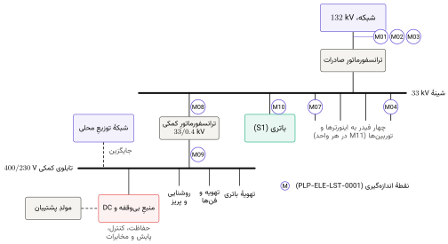
مثال 7.48 (ردهٔ مفهومیِ ترانسفورماتورِ کمکی) پرسش. برای S1، ترانسفورماتورِ کمکی را بر پایهٔ بدترین فاز (نه میانگین) با ضریبِ 1.25 برای رشد، فرسودگی و عدمِ قطعیت (A-103) از یک ردیفِ آموزشیِ ردهٔ 100، 160، 250 و 400 kVA انتخاب کنید. با امپدانسِ 6 % و مقاومتِ 1.2 % (A-103)، افتِ ولتاژِ تقریبیِ ترانسفورماتور در بیشینهٔ بار چیست؟
پاسخ.
S1 peak: 158.2 kVA; worst phase 252.7 A -> balanced equivalent 174.4 kVA
x 1.25 for growth, ageing and uncertainty = 218.0 kVA
next size in the fictional range [100, 160, 250, 400] kVA: 250 kVA
rated LV current 361 A; the worst phase at the peak is 70 % of it
transformer z = 6 %, r = 1.2 % -> x = 5.88 % (A-103)
voltage drop ~ (r P + x Q) / S_rated = 2.48 % at the S1 peak
a licensed electrical designer confirms the schedule, diversity,
protection and supply arrangement (chapters 23 and 24); these are
teaching numbersتفسیر. با بدترین فاز، معادلِ متعادل 174.4 kVA است، 10 % بیش از توانِ ظاهریِ واقعی؛ چون هر فازِ ترانسفورماتور فقط یکسومِ رده را دارد و فازِ پربار زودتر گرم میشود. با ضریبِ رشد، 218 kVA لازم است و ردهٔ 250 kVA انتخاب میشود. افتِ ولتاژِ خودِ ترانسفورماتور 2.5 % است و افتِ کابلهای تابلو به آن افزوده میشود. مرزِ کار: این یک انتخابِ مفهومی است. طراحِ دارای صلاحیت فهرستِ بار، همزمانی، جریانِ راهاندازیِ موتورها، حفاظت، اتصالِ کوتاه و آرایشِ زمینکردن را تأیید میکند (فصلهای ۲۳، ۲۴ و ۲۶).
نقطههای اندازهگیری. هر اندازهگیری برای پرسشی است؛ فهرستِ نقطههای اندازهگیری، پرسش، کمیتها و کلاسِ دستگاه را کنارِ هم میگذارد. فهرستِ آموزشیِ نیروگاهِ P (PLP-ELE-LST-0001):
| شناسه | محل | هدف | کمیتها |
|---|---|---|---|
| M01 | نقطهٔ اتصال، 132 kV، شمارندهٔ اصلی | صورتحسابِ صادرات و واردات | انرژیِ اکتیو و راکتیو در چهار ربع |
| M02 | نقطهٔ اتصال، شمارندهٔ وارسی | وارسیِ مستقلِ M01 | همان کمیتها |
| M03 | نقطهٔ اتصال، تحلیلگرِ کیفیتِ توان | انطباق با الزامها و تفکیکِ زمینه | ولتاژ، بسامد، نامتعادلی، هارمونیک، سوسو، رخدادها |
| M04–M07 | آغازِ هر فیدرِ 33 kV | پایشِ تولید و تلفات | جریان، توانها، انرژی |
| M08 | ورودیِ ترانسفورماتورِ کمکی | مصرفِ داخلی | توانها و انرژی |
| M09 | تابلوی کمکی | بار، نامتعادلی، نول، کیفیت | توانِ هر فاز، جریانِ نول، اعوجاج، رخدادها |
| M10 | ورودیِ سامانهٔ باتری (S1) | تبادلِ انرژیِ باتری | انرژیِ دوطرفه |
| M11 | هر واحدِ تولید | عملکرد و تلفات | دادههای کنترلگرِ واحد |
جای شمارندهٔ صورتحساب، کلاسِ دقت، نیاز به شمارندهٔ وارسی، مالکیت، پلمب و آزمون را قراردادِ فروش و مقرراتِ اندازهگیریِ کشور تعیین میکنند (فصلهای ۳۴ و ۵۵ تا ۵۷)؛ این فهرست جای آنها را نمیگیرد.
7.5.3 وارسی با کد و با دست
هر نتیجهٔ آزمایشگاه دستکم یک وارسیِ مستقل دارد. برای فهرستِ بار سه آزمون نوشتهایم که در پوشهٔ آزمونها اجرا میشوند: بارِ سهفازِ متعادل نول ندارد و جریانش با دست میخواند؛ جمعِ توانِ اکتیوِ مدل با جمعِ دستیِ فهرست برابر است؛ و بارِ تکفاز همهٔ جریانش را از نول برمیگرداند:
def test_balanced_loads_give_no_neutral_current():
loads = [Load("fan", 30.0, 0.85, "abc", 1.0)]
ia, ib, ic = phase_currents(loads, "S0")
assert abs(ia + ib + ic) < 1e-9
# hand: 30 kW / (3 x 230 V x 0.85) = 51.15 A (the lab uses 230 V phase)
assert abs(ia) == pytest.approx(30e3 / (3 * 230 * 0.85))
assert math.degrees(-np.angle(ia)) == pytest.approx(
math.degrees(math.acos(0.85))) # lagging by 31.79 degdef test_power_of_the_schedule_adds_up():
for sc, extra in (("S0", 0.0), ("S1", 60.0)):
ia, ib, ic = phase_currents(LOADS, sc)
v = (lab_d.VA, lab_d.VB, lab_d.VC)
s = sum(complex_power(x, i) for x, i in zip(v, (ia, ib, ic)))
p_hand = sum(ld.p_kw * ld.diversity for ld in LOADS
if ld.scenario == "S0") + extra
assert s.real / 1e3 == pytest.approx(p_hand)یک وارسیِ دستیِ کامل. فازِ b در S0 را با دست میسازیم. سهمِ فازِ b از بارهای سهفاز: یکسومِ \(8.8 + 25 + 10 + 0.5 \times 15 = 51.3\ \text{kW}\)، یعنی 17.1 kW، بهاضافهٔ پریزهای دفتر \(0.6 \times 6 = 3.6\ \text{kW}\)؛ جمعاً 20.7 kW. با ضریبِ توانِ میانگینِ حدودِ 0.86، جریان \(20\,700/(230 \times 0.86) \approx 105\ \text{A}\) است و کد 105.0 A داده است. وارسیِ دستی با گرد کردن همیشه تقریبی است؛ هدفش گرفتنِ خطای بزرگ (ضریبِ \(\sqrt3\)ِ گمشده، کیلووات به جای وات، فازِ اشتباه) است، نه رقمِ سوم.
خطاهایی که آزمونها میگیرند. اگر کسی در phase_currents مزدوج را جا بیندازد، زاویهٔ جریان قرینه میشود و بارِ سلفی خازنی دیده میشود: آزمونِ اول، که زاویهٔ جریان را هم میسنجد، شکست میخورد. اگر کسی ضریبِ همزمانی را دو بار اعمال کند، آزمونِ دوم. اگر بارِ تکفاز بهاشتباه میانِ سه فاز پخش شود، آزمونِ سوم.
7.5.4 تفسیرِ یک رکوردِ اندازهگیری
رکورد. دستگاهِ M09 روی تابلوی کمکی یک روزِ کامل، 23 ژوئن، در بازههای دهدقیقهای ثبت کرده است: توانِ اکتیو و راکتیوِ هر فاز (همانطور که دستگاه ذخیره کرده)، میانگین و کمینهٔ ولتاژِ هر فاز در هر بازه، و اعوجاجِ جریانِ فازِ a. بارِ تهویه از دمای هوای همان روز در بستهٔ داده (1.1.0) پیروی میکند. رکورد ساختگی است (A-106، بذرِ 7) و دو ایرادِ پنهان در آن کاشته شده است تا پیدایشان کنیم:
def meter_record(seed=7):
"""Synthetic 10-min record of the auxiliary board on 23 June (A-106).
Per-phase P and Q as the meter stores them, voltages (mean and
minimum per interval) and current THD. The phase-b CT is wired
reversed and a voltage dip occurs at 14:20."""
rng = np.random.default_rng(seed)
day = datapack.load_hourly("day_summer")
t_air = np.repeat(day["t_air_c"].to_numpy(), 6) # 144 intervals
hour = np.arange(144) / 6
hvac = np.clip((t_air - 22) / 14, 0.15, 1.0) # share of rating
fans = (hour >= 11) & (hour < 19)
light = (hour < 6) | (hour >= 19.5)
office = (hour > 8) & (hour < 17)
heat = (hour >= 6) & (hour < 8)
common = (25.0 * hvac + 60.0 * hvac + 8.8 * fans + 10.0) / 3
p = {"a": 2.5 + 6.0 * light + 8.0 + common,
"b": 2.5 + 3.6 * office + common,
"c": 2.5 + 3.0 + 9.0 * heat + common}
rec = {}
for ph in "abc":
p_true = p[ph] * (1 + 0.03 * rng.standard_normal(144))
sign = -1.0 if ph == "b" else 1.0 # reversed CT
rec["p_" + ph] = sign * p_true
rec["q_" + ph] = sign * 0.55 * p_true
v = 231.0 + 1.5 * rng.standard_normal(144)
rec["v_" + ph] = v
rec["vmin_" + ph] = v - 2.0
rec["vmin_" + ph][14 * 6 + 2] = 0.72 * 231.0 # dip at 14:20
rec["thd_a"] = 6.0 + 30.0 * light + rng.uniform(0, 2, 144)
rec["hour"] = hour
return recمثال 7.49 (یک روز در تابلوی کمکی) پرسش. رکورد را بخوانید و با چهار وارسی تفسیر کنید: (۱) علامتِ توانِ هر فاز؛ (۲) کمینهٔ ولتاژها؛ (۳) نامتعادلیِ جریان؛ (۴) اعوجاجِ جریان. انرژیِ درستِ روز، بیشینهٔ تقاضا و مقایسه با فهرستِ بار را گزارش کنید و محدودیتهای نتیجه را بنویسید.
پاسخ.
one day of 10-min records at the auxiliary board, S1 (synthetic, A-106):
energy as recorded (sum of phases): 876.5 kWh
per phase: a 816.2, b -596.1, c 656.4 kWh
check 1, sign per phase: phase b shows negative power at a load board
phase-b CT polarity corrected: 2068.8 kWh (+136 % on the record)
the record shows 42 % of the true energy; with three equal phases
it would show 1/3 (1 - 1 + 1 of 3); phase b is the lightest, so more
peak 10-min demand 130.4 kW at 14:40 (148.9 kVA, pf 0.88)
schedule estimate 138.2 kW: +6 % on the measured peak (conservative)
check 2, minimum voltages 166, 166, 166 V at 14:20;
the same interval on all three phases: True
residual 72 % of 230 V in one interval: a dip (an event), not a trend
check 3, current imbalance (max deviation / mean): 4 to 57 %,
highest at 04:40 (phases 119, 47, 62 A)
from current magnitudes only: the negative-sequence factor needs
the angles, which the analyser takes from its waveforms
check 4, current THD of phase a 6 to 38 %: highest at night,
when LED lighting is a large share of a small load
limits: 10-min values hide fast events (the dip depth and
duration come from the analyser's event log); one day is not a season;
all values syntheticتفسیر.
- وارسیِ ۱، ترانسفورماتورِ جریانِ وارونه. فازِ b در تمامِ روز توانِ منفی دارد: تابلوی بار نمیتواند انرژی صادر کند، پس قطبیتِ ترانسفورماتورِ جریانِ آن فاز وارونه است (مثال 7.28). رکوردِ خام 876.5 kWh نشان میدهد و انرژیِ درست 2068.8 kWh است: رکورد فقط 42 % واقعیت را ثبت کرده است. اگر سه فاز برابر بودند، این نسبت دقیقاً یکسوم بود؛ چون فازِ b سبکترین است، بیشتر. اقدام: نه اصلاحِ بیصدای داده، بلکه ثبتِ یک عدمِ انطباق، اصلاحِ سیمبندی با رویهٔ مجاز بهدستِ صلاحیتداران، و نگه داشتنِ دادهٔ خام همراهِ ستونِ اصلاحشده با پرچمِ کیفیت (فصلهای ۲ و ۵).
- مقایسه با فهرستِ بار. بیشینهٔ دهدقیقهایِ درست 130.4 kW در ساعتِ \(14{:}40\) است، روزِ گرم با تهویهٔ کامل؛ فهرستِ بار 138.2 kW را پیشبینی کرده بود: 6 % محافظهکارانه، که برای یک روز خوب است اما یک روز گواهِ سال نیست.
- وارسیِ ۲، افتِ ولتاژ. در ساعتِ \(14{:}20\) کمینهٔ ولتاژِ هر سه فاز در یک بازه به 166 V رسیده است، در حالی که میانگینِ همان بازه عادی است: یک رخداد کوتاه، احتمالاً خطایی در شبکهٔ بالادست، نه تغییرِ پایدارِ ولتاژ. عمق و مدتش را باید از ثبتِ رخدادِ دستگاه گرفت (مثال 7.42).
- وارسیِ ۳، نامتعادلی. شاخصِ «بیشینهٔ انحراف بر میانگینِ جریان» از 4 % تا 57 % تغییر میکند و بیشینهاش در ساعتِ \(04{:}40\) است: شب، که بارِ سهفازِ تهویه کم است و روشنایی و سامانهٔ پایشِ فازِ a سهمِ بزرگی دارند. این عدد با ضریبِ نامتعادلیِ توالیِ منفی یکی نیست و از اندازهٔ جریانها به تنهایی نمیتوان آن را ساخت (مثال 7.27).
- وارسیِ ۴، اعوجاج. اعوجاجِ جریانِ فازِ a در شب به 38 % میرسد: همان دامِ بخش 7.4.7، اعوجاج نسبت به مؤلفهٔ اصلیِ کوچکِ شب. آمپرِ هارمونیک در شب و روز تقریباً یکی است (روشنایی).
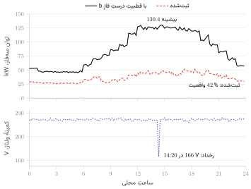
7.5.5 وارسیِ سیمبندی از روی نمودارِ فازوریِ دستگاه
ابزار. تحلیلگرها و بسیاری از شمارندههای امروزی نمودارِ فازوری نشان میدهند: زاویهٔ هر ولتاژ و جریان نسبت به ولتاژِ فازِ a، یا زاویهٔ جریانِ هر فاز نسبت به ولتاژِ همان فاز. برای باری که میدانیم تقریباً متعادل و با ضریبِ توانِ معلوم است، این نمودار یک «امضای» مشخص دارد؛ هر خطای سیمبندی امضای خودش را میگذارد. این وارسی روی دادهٔ دستگاه انجام میشود؛ خواندنِ نمودار کارِ دفتری است، اما هر اقدامِ اصلاحی روی مدارِ واقعی فقط با رویهٔ تأییدشده و بهدستِ صلاحیتداران است.
مثال 7.50 (چهار امضای سیمبندی) پرسش. باری متعادل با ضریبِ توانِ 0.85 پسفاز را در نظر بگیرید. زاویهٔ جریانِ هر فاز نسبت به ولتاژِ همان فاز، و توانِ هر فاز (پریونیتِ \(VI\)) را برای چهار حالت حساب کنید: سیمبندیِ درست؛ ترانسفورماتورِ جریانِ فازِ b وارونه؛ ترانسفورماتورهای جریانِ فازهای b و c جابهجا؛ ترانسفورماتورهای ولتاژِ فازهای b و c جابهجا.
پاسخ.
balanced load, pf 0.85 lagging; the analyser shows each current angle
against its own voltage, and the per-phase power in pu of V I:
correct:
a -31.8 deg +0.850; b -31.8 deg +0.850; c -31.8 deg +0.850; total
+2.550 of 2.550
CT b reversed:
a -31.8 deg +0.850; b 148.2 deg -0.850; c -31.8 deg +0.850; total
+0.850 of 2.550
CTs b and c swapped:
a -31.8 deg +0.850; b -151.8 deg -0.881; c 88.2 deg +0.031; total
+0.000 of 2.550
VTs b and c swapped:
a -31.8 deg +0.850; b 88.2 deg +0.031; c -151.8 deg -0.881; total
+0.000 of 2.550
signatures: a reversed CT shifts one angle by 180 deg; swapped CTs or
swapped VTs move two angles by 120 deg and the total power collapses;
swapped VTs also show a reversed voltage sequence on the analyserتفسیر.
| حالت | امضا در نمودار | توانِ کلِ خواندهشده |
|---|---|---|
| درست | سه زاویهٔ برابرِ \(-31.8^\circ\) | درست |
| یک ترانسفورماتورِ جریانِ وارونه | یک زاویه \(180^\circ\) جابهجا؛ توانِ آن فاز منفی | یکسوم |
| دو ترانسفورماتورِ جریانِ جابهجا | دو زاویه \(\pm 120^\circ\) جابهجا؛ یک توانِ منفی و یک نزدیکِ صفر | تقریباً صفر |
| دو ترانسفورماتورِ ولتاژِ جابهجا | همان دو زاویهٔ جابهجا، با توالیِ ولتاژِ وارونه | تقریباً صفر |
جابهجاییِ دو ترانسفورماتورِ جریان و جابهجاییِ دو ترانسفورماتورِ ولتاژ در توانِ هر فاز یکسان دیده میشوند؛ نشانهٔ جداکننده توالیِ ولتاژ است که دستگاه گزارش میکند: در دومی وارونه است. در هر دو، توانِ کل نزدیکِ صفر است، چون سه کسینوسِ با فاصلهٔ \(120^\circ\) جمعِ صفر دارند. چنین خوانشی ممکن است «نیروگاهِ خاموش» یا «تابلوی بیبار» تعبیر شود؛ امضای فازوری فوراً آن را خطای سیمبندی نشان میدهد. شکل 7.18 دو حالتِ نخست را میکشد.
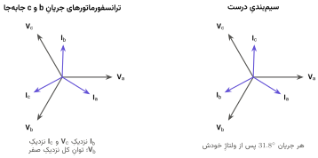
فهرستِ وارسیِ دفتری. پیش از اعتماد به هر رکورد، اینها روی مستندات و دادهٔ دستگاه وارسی میشوند (بیهیچ کاری روی مدارِ برقدار): (۱) نسبتهای پیکربندیشده با پلاک و برگهٔ آزمونِ ترانسفورماتورها؛ (۲) توالیِ ولتاژِ گزارششده؛ (۳) زاویهٔ جریانِ هر فاز نسبت به ولتاژِ همان فاز، سازگار با نوعِ بار؛ (۴) علامتِ توانِ هر فاز، سازگار با جهتِ جریانِ انرژی؛ (۵) جمعِ توانها در برابرِ یک اندازهگیریِ مستقل (شمارندهٔ بالادست یا پاییندست)؛ (۶) ساعت و منطقهٔ زمانیِ دستگاه (فصلِ ۵).
- اگر زاویهٔ جریانِ فازِ a \(+148^\circ\) و دو فازِ دیگر \(-32^\circ\) باشد، کدام خطا محتمل است؟
- چرا جابهجاییِ دو ترانسفورماتورِ جریان توانِ کل را تقریباً صفر میکند؟
- چگونه جابهجاییِ ترانسفورماتورهای ولتاژ را از جابهجاییِ ترانسفورماتورهای جریان تشخیص میدهید؟
- اگر بار خازنی بود، امضای سیمبندیِ درست چه زاویهای داشت؟
- چرا این وارسی برای یک بارِ بسیار نامتعادل کمتر قطعی است؟
7.5.6 محدودیتهای مدل
هر نتیجهٔ این آزمایشگاه با این محدودیتها همراه است، و هر کدام در فصلی دیگر برطرف میشود:
- ولتاژِ ثابت و متعادل. ولتاژها 230 Vِ متعادل فرض شدند؛ در واقع افتِ ترانسفورماتور و کابلها، و نامتعادلیِ خودِ شبکه، جریانها را کمی تغییر میدهد. حلِ دقیق یک پخشِ بارِ سهفاز است (فصلِ ۲۸).
- بارِ توانثابت. هر بار با توانِ ثابت مدل شد. بارهای مقاومتی با ولتاژ تغییر میکنند و موتورها جریانِ راهاندازیِ چند برابر دارند؛ این دومی برای انتخابِ حفاظت و افتِ ولتاژِ لحظهای مهم است (فصلهای ۸ و ۲۴).
- همزمانیِ فرضی. ضریبهای همزمانی برآوردند و با اندازهگیریِ واقعیِ بهرهبرداری جایگزین میشوند (فصلِ ۵۱).
- هارمونیک فقط برای روشنایی. شارژرها، منبعِ بیوقفه و مبدّلهای بسامدِ تهویه هم جریانِ اعوجاجی دارند؛ طیفِ واقعیِ هر کدام را سازنده یا اندازهگیری میدهد.
- رکوردِ دهدقیقهای. رخدادهای کوتاه در میانگین پنهاناند؛ برای افتِ ولتاژ، سوسو و گذراها ثبتِ رخداد و شکلموج لازم است.
- یک روز. یک روزِ تابستانی بیشینهٔ تهویه را نشان میدهد اما نه زمستان، نه روزهای تعمیر، نه رشدِ بار در سالهای بهرهبرداری.
- دادهٔ ساختگی. همهٔ عددها از کد آمدهاند. ارزشِ این آزمایشگاه در روش است، نه در عددها.
7.6 نیروگاهِ P: سه مثالِ یکپارچه
سه مثالِ زیر ابزارِ فصل را از واحدها تا نقطهٔ اتصال میبرند. همه بر پایهٔ ردههای بذرِ نیروگاهِ P (SR-01 تا SR-06)، فرضهای این فصل (A-100 تا A-109) و فرضهای پیشین (A-032، A-040، A-091 و A-092)اند؛ همه فرضیاند و هیچکدام طراحی نیست. سناریو S0 است (باتری در این مثالها اثری ندارد).
برنامه:
companion/ch07/integrated.py
مثال 7.51 (مقدماتی: جریانها از واحد تا نقطهٔ اتصال) پرسش. جریانِ هر فاز را در نقطهٔ اتصال (100 MW، ضریبِ توانِ یک و 0.95)، در شینهٔ 33 kV (با تلفاتِ ترانسفورماتورِ صادرات، A-092)، در یک فیدر (در سقفِ صادرات و در تولیدِ کامل) و در یک واحدِ 5 MW در دو سوی ترانسفورماتورِ واحد بیابید. چه الگویی در عددها هست؟
پاسخ.
currents from the units to the point of connection (POC):
POC 132 kV, 100 MW at pf 1.00: 437.4 A
POC 132 kV, 100 MW at pf 0.95: 460.4 A
33 kV bus: 100.37 MW at pf 0.95: 1848 A (transformer losses 368 kW, A-092)
one feeder at the export limit 25.0 MW: 460.4 A
one feeder at full output 27.5 MW: 506.4 A
one 5 MW unit at 33 kV: 92.1 A; at its own 0.69 kV terminals: 4404 A
25 MW at 33 kV and 100 MW at 132 kV carry the same current:
100/132 = 25/33, the voltage ratio equals the power ratio
busbar and switchgear currents are a design decision of chapters 23-25تفسیر. جریان از 4404 A در پایانهٔ هر واحد به 92 A در 33 kV، 1848 A در شینهٔ جمع و 460 A در 132 kV میرسد: هر ترانسفورماتور جریان را به نسبتِ ولتاژ کوچک میکند، و هر شینه جریانِ چند فیدر را جمع. جریانِ یک فیدر در سقفِ صادرات با جریانِ نقطهٔ اتصال برابر است، چون هر دو نسبتِ چهار دارند (چهار فیدر، و 132 بر 33). در تولیدِ کامل، پیش از محدودسازیِ صادرات، هر فیدر 506 A دارد: کابل و کلیدِ فیدر برای این جریان انتخاب میشوند، نه برای سقفِ صادرات، چون محدودسازی در نقطهٔ اتصال انجام میشود و فیدرها ممکن است نامساوی بار بگیرند. وارسی: \(1848/4 = 462\ \text{A}\)، نزدیکِ جریانِ هر فیدر در سقفِ صادرات (اختلاف از تلفاتِ ترانسفورماتور).
مثال 7.52 (میانی: ترازِ توانِ راکتیوِ نیروگاه) پرسش. نیروگاه 100 MW صادر میکند و همهٔ ۲۲ واحد (۱۰ اینورتر و ۱۲ توربین) به یک نسبت محدود شدهاند. یک هدفِ آموزشی برای نقطهٔ اتصال فرض کنید: ضریبِ توانِ 0.95 در هر دو جهت (A-108؛ الزامِ شبکه نیست). توانِ راکتیوی که کابلها میسازند و فیدرها، ترانسفورماتورهای واحد و ترانسفورماتورِ صادرات مصرف میکنند را جمع کنید. واحدها برای رسیدن به هدف چه باید بدهند یا بگیرند، و آیا قابلیتشان (A-101 و A-107) کافی است؟ در شب، بیتولید، چه میشود؟
پاسخ.
export 100 MW at the POC; every unit at 4.55 MW (91 % of rating)
teaching target pf 0.95 at the POC (A-108): |Q| = 32.9 Mvar
reactive power, Mvar (+ = supplied towards the grid, generator convention):
cable charging (sec. A) +1.79
feeder series reactance -1.52
unit transformers -4.96
export transformer -11.44
sum of the passive parts -16.12
to supply 32.9 Mvar at the POC the units must supply 49.0 Mvar
to absorb 32.9 Mvar at the POC the units must absorb 16.7 Mvar
units available at 4.55 MW: PV inverters 10 x 3.10 = 31.0,
turbines 12 x 2.65 = 31.8
total 62.8 Mvar; margin for the supplying case 13.8 Mvar
limits: one operating point, voltages held at 1.0 pu, feeder current as if
lumped at the far end (conservative); a load flow decides (chapter 28)night, no wind, all units stopped: P = 0
cables still supply 1.79 Mvar; the export transformer's
magnetising current absorbs 0.36 Mvar
net +1.43 Mvar flows to the grid with no active power
small here (24 km at 33 kV); long HV export cables can need a shunt reactor:
whether Q at no output is allowed is the grid operator's rule (ch 17, 55)تفسیر. بخشهای غیرفعالِ نیروگاه رویهم 16.1 Mvar مصرف میکنند؛ ترانسفورماتورِ صادرات بهتنهایی 11.4 Mvar، چون توانِ راکتیوِ ترانسفورماتور با مجذورِ بار و با امپدانساش بالا میرود: \(Q \approx x\,S^2/S_\text{r}\). پس برای دادنِ 32.9 Mvar در نقطهٔ اتصال، واحدها باید 49.0 Mvar بدهند، و برای گرفتنِ 32.9 Mvar فقط 16.7 Mvar. قابلیتِ واحدها در این نقطهٔ کار 62.8 Mvar است و حاشیهٔ حالتِ دادن 13.8 Mvar. دو درس: (۱) قابلیتِ نیروگاه در نقطهٔ اتصال با جمعِ قابلیتِ واحدها برابر نیست؛ ترازِ داخلی را باید کم کرد. (۲) نتیجه نامتقارن است: «دادن» سختتر از «گرفتن» است. در شب، کابلها همچنان 1.43 Mvar خالص به شبکه میدهند؛ اینجا کوچک است، اما برای کابلهای بلندِ ولتاژبالا موضوعی طراحی است. شکل 7.19 همین تراز را در همهٔ سطوحِ صادرات نشان میدهد. محدودیتها در خودِ خروجی آمدهاند؛ دقیقترش یک پخشِ بار است (فصلِ ۲۸).
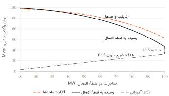
مثال 7.53 (یکپارچه: غربالِ اولیه در نقطهٔ اتصال) پرسش. شبکه در نقطهٔ اتصال توانِ اتصالِ کوتاهِ 1000 MVA با \(X/R = 10\) دارد (A-109). (الف) سازگاری با A-100 را وارسی کنید و نسبتِ اتصالِ کوتاه را بیابید. (ب) تغییرِ ولتاژِ نقطهٔ اتصال را با صدورِ 100 MW و سه حالتِ توانِ راکتیو با معادلهٔ 7.13 برآورد کنید. (پ) ولتاژِ هارمونیکیِ پنجم و هفتمِ شینهٔ 33 kV را برای ۲۲ واحد با طیفِ A-040 و سه فرضِ جمعشدن برآورد کنید. (ت) با صافیهای واحدها (هر کدام 0.2 Mvar، A-107)، تشدید کجا میرود؟
پاسخ.
grid at the 132 kV POC (A-109): S_sc 1000 MVA, X/R 10
behind the 120 MVA, 12 % transformer the 33 kV bus sees 500 MVA (A-100: 500)
short-circuit ratio S_sc / P = 10; network impedance 0.100 pu on 100 MVA
voltage change at the POC, dV ~ R P + X Q (pu, generator convention):
P 1.00 pu, Q +0.000 pu (pf 1 ): dV +1.00 %
P 1.00 pu, Q +0.329 pu (supplying Q): dV +4.27 %
P 1.00 pu, Q -0.329 pu (absorbing Q): dV -2.28 %
active power alone moves the voltage little (R small); Q moves itharmonic voltage at the 33 kV bus, 22 units of 5 MW, spectrum A-040:
order 5: one unit 0.200 %; 22 units alpha 1: 4.40 %, 1.4: 1.82 %, 2: 0.94 %
order 7: one unit 0.210 %; 22 units alpha 1: 4.62 %, 1.4: 1.91 %, 2: 0.98 %
sum = (sum of V_i^alpha)^(1/alpha): alpha 1 = all in phase (worst case),
alpha 2 = random phases; the study uses the exponents and limits
the grid operator applies (chapter 27)
resonance, cables only Q_c 1.79 Mvar: h = 16.71
resonance, cables + 22 unit filters Q_c 6.19 Mvar: h = 8.99
the filters move the resonance down towards the orders the units emitتفسیر. (الف) فرضها سازگارند (مثال 7.24). نسبتِ اتصالِ کوتاهِ ده، شبکهای نسبتاً قوی را نشان میدهد؛ معنای این نسبت برای پایداریِ کنترلِ اینورترها در فصلهای ۹ و ۲۸ میآید. (ب) صدورِ توانِ اکتیو بهتنهایی ولتاژ را فقط 1 % بالا میبرد، اما دادنِ توانِ راکتیو آن را به 4.3 % میرساند و گرفتنش آن را 2.3 % پایین میآورد: توانِ راکتیو ابزارِ کنترلِ ولتاژ است. (پ) جمعِ هارمونیکها به فرضِ همفازی بسیار حساس است: با فرضِ همفازیِ کامل (\(\alpha = 1\)) هر مرتبه حدودِ 4.5 %، با فازهای تصادفی (\(\alpha = 2\)) کمتر از 1 %. یک قانونِ جمعِ میانه (مثلاً \(\alpha = 1.4\)) حدودِ 1.9 % میدهد. توانِ \(\alpha\) برای هر مرتبه را سندی تعیین میکند که بهرهبردارِ شبکه برای مطالعه به کار میبرد؛ این کتاب عددی برایش ادعا نمیکند. (ت) خازنِ صافیها تشدید را از مرتبهٔ 16.7 به 9.0 میآورد، میانِ هفتم و یازدهم: هنوز روی مرتبههای اصلیِ واحدها نیست، اما نزدیکتر. جمعبندی: این غربال میگوید نیروگاهِ P با این فرضها نیازمندِ مطالعهٔ هارمونیکی و پخشِ بار با دادهٔ واقعیِ شبکه است، نه اینکه «مشکلی ندارد» یا «مشکل دارد».
7.7 گردشِ کارِ طراحیِ یک تغذیهٔ سهفاز
طراحیِ مفهومیِ هر تغذیهٔ سهفاز، از تابلوی کمکی تا یک فیدرِ 33 kV، این گامها را دارد:
- مرز و هدف: کدام بارها، کدام سناریوها، کدام حالتهای کار (عادی، تعمیر، اضطرار)؛ چه چیزی بیرون از دامنه است.
- فهرستِ بار با توان، ضریبِ توان، فاز، همزمانی، منبع و وضعیتِ هر عدد (بخش 7.5.1).
- حلِ سهفاز: جریانِ هر فاز، نول، نامتعادلی؛ اگر بارِ غیرخطی هست، هارمونیکها و نول (مثال 7.47).
- ردهبندی بر پایهٔ توانِ ظاهری و بدترین فاز، با حاشیهٔ رشد و فرسودگی (مثال 7.48).
- افتِ ولتاژ و تلفات با معادلهٔ 7.13، در بیشینهٔ بار و در راهاندازیِ بزرگترین موتور.
- توانِ راکتیو و ضریبِ توان: نیاز به اصلاح؟ اثرِ آن بر تشدید (بخش 7.2.9)؟
- آرایشِ تغذیه و اندازهگیری: گزینهها، پشتیبان، نقطههای اندازهگیری با هدفِ هر کدام (جدول 7.9).
- وارسی: کد و آزمون، وارسیِ دستیِ مستقل، مقایسه با اندازهگیریِ واقعی وقتی در دسترس است (بخش 7.5.3).
- ثبت: محاسبه با شمارهٔ مدرک، فرضها در دفترِ فرضها، مجهولها و تصمیمها؛ و مرزِ کار: طراحیِ تفصیلی، حفاظت و زمینکردن کارِ مهندسِ دارای صلاحیت است (فصلهای ۲۳ تا ۲۶).
7.8 آزمایشگاههای پایتونِ این فصل
| آزمایشگاه | برنامه | آنچه میسازد |
|---|---|---|
| حالتِ پایدارِ سینوسی | examples_a | شکلموج، مقدارِ مؤثر، کابل، فیدر، تشدید |
| سهفاز | examples_b | توانِ سهفاز، توالی، ستاره و مثلث، نامتعادلی، نول، اندازهگیری |
| توان و هارمونیک | examples_c | توانِ لحظهای، مثلثِ توان، اصلاح، قابلیت، هارمونیک، دستگاهها |
| مثالهای کوچک | worked | سطرهای E01 تا E40 |
| درسهای تکمیلی | examples_more | ترانسفورماتور، تحلیلِ گره، اتصالِ کوتاه، انرژی و تقاضا، امضای سیمبندی |
| آزمایشگاهِ تغذیهٔ کمکی | lab_d | فهرستِ بار، ردهٔ ترانسفورماتور، رکوردِ اندازهگیری |
| نیروگاهِ P | integrated | جریانها، ترازِ توانِ راکتیو، غربالِ نقطهٔ اتصال |
| پاسخنامه | solutions | پاسخِ عددیِ مسئلههای پایانی |
کتابخانهٔ همراه در این فصل ماژولِ ac (راکتانس، تشدید، جریانِ سهفاز، ستاره و مثلث، میلمن، نامتعادلی، دوواتمتری، اصلاحِ ضریبِ توان، قابلیت، هارمونیک و ضریبِ K) را میافزاید، با آزمونهایی بر پایهٔ مقدارهای دستی. تمرینِ پیشنهادی: در lab_d پریزهای دفتر را به فازِ c ببرید و ببینید نامتعادلی و نول چه میشوند؛ سپس در integrated هدفِ ضریبِ توان را 0.90 بگذارید و ببینید آیا قابلیتِ واحدها کافی میماند.
7.9 ساخت و تولیدِ صنعتی در این فصل
این فصل محصولِ مشخصی نمیسازد، پس ساختِ کارخانهای در آن موضوعیت ندارد. اما هر مفهومِ آن به یک محصول و فرایندِ ساخت گره خورده است، و این پیوندها را فصلهای بعد کامل میکنند:
- ترانسفورماتورها (رده بر پایهٔ توانِ ظاهری، امپدانسِ درصدی، گروهِ برداری، ضریبِ K و تلفات): انتخاب در فصلِ ۲۵ و ساخت و آزمونِ کارخانهای در فصلِ ۴۳.
- کابل، تابلو، کلید و بانکِ خازنی (جریانِ نامی، افتِ ولتاژ، جریانِ شارژ، اضافهجریانِ هارمونیکی): انتخاب در فصلِ ۲۴ و ساخت در فصلِ ۴۶.
- اینورتر و مبدّل (قابلیتِ \(P\)–\(Q\)، طیفِ هارمونیکی، صافی): فصلهای ۹ و ۴۴.
- ترانسفورماتورهای اندازهگیری، شمارندهها و تحلیلگرها (نسبت، قطبیت، کلاسِ دقت، روشِ اندازهگیری): فصلهای ۳۴ و ۴۸.
- حفاظت، زمینکردن، کیفیتِ توان و مطالعههای شبکه که از نامتعادلی، نول، هارمونیک و تشدید استفاده میکنند: فصلهای ۲۶ تا ۲۸.
نکتهٔ کیفیتیِ مشترک: در هر آزمونِ کارخانهای و راهاندازی، قطبیت، نسبت و توالیِ فاز از نخستین وارسیها هستند، چون خطایشان، چنانکه مثال 7.49 نشان داد، بیصدا عددهای درستنما ولی غلط میسازد.
7.10 جعبهٔ استاندارد و انطباق
مرجعهای زیر فقط با عنوان و ویرایشِ وارسیشده آمدهاند (دفترِ استانداردها با تاریخِ وارسی) و هیچ بندی از آنها نقل نشده است. پذیرشِ ملیِ هیچکدام در ایران، افغانستان و تاجیکستان وارسی نشده است (فصلهای ۵۵ تا ۵۷).
- ولتاژهای استاندارد: IEC 60038:2009 با اصلاحیهٔ 1:2021 (ولتاژهای اسمیِ ترجیحی). ولتاژهای 33 و 132 kVِ نیروگاهِ P دانههای آموزشیاند و ولتاژِ واقعی را شبکهٔ میزبان تعیین میکند.
- روشهای اندازهگیریِ کیفیتِ توان: IEC 61000-4-30:2025، ویرایشِ چهارم (روشها و کلاسهای اندازهگیری)؛ IEC 61000-4-7:2002+AMD1:2008 (راهنمای اندازهگیریِ هارمونیک و میانهارمونیک و دستگاهها).
- کنترلِ هارمونیک: IEEE 519-2022 (اهدافِ اعوجاج در نقطهٔ اتصالِ مشترک). کاربردش به حوزهٔ قضایی و بهرهبردارِ شبکه بستگی دارد.
- ترانسفورماتورهای جریان: IEC 61869-2:2012 (الزامهای افزودهٔ ترانسفورماتورهای جریان برای اندازهگیری و حفاظت).
- شمارندههای انرژی: IEC 62053-22:2020 (شمارندههای ایستای انرژیِ اکتیو، کلاسهای 0.1 S، 0.2 S و 0.5 S؛ فصلِ ۲). قاعدههای شمارندهٔ نصبشده (آزمون، پلمب، مالکیت) ملی و قراردادیاند.
- مرز: حدهای پذیرشِ کیفیتِ توان، بازهٔ لازمِ توانِ راکتیو، ماندن در مدار هنگامِ افتِ ولتاژ و قاعدههای شمارش را ضابطهٔ شبکه و قراردادِ اتصال تعیین میکنند، نه این استانداردها بهتنهایی (فصلهای ۱۷، ۲۷ و ۵۵ تا ۵۷).
7.11 تحویلدادنیِ نیروگاهِ P
این فصل اینها را به پروندهٔ نیروگاهِ P (که فصلِ ۵۹ گرد میآورد) میافزاید:
- PLP-ELE-CAL-0002، بازنگریِ A: فهرستِ بارِ تغذیهٔ کمکی و حلِ سهفازِ آن در S0 و S1، با نول، نامتعادلی، هارمونیکِ روشنایی و ردهٔ مفهومیِ ترانسفورماتورِ کمکی (جدول 7.8، مثال 7.47 و مثال 7.48).
- PLP-ELE-LST-0001، بازنگریِ A: فهرستِ نقطههای اندازهگیری با هدف و کمیتهای هر کدام (جدول 7.9).
- PLP-ELE-CAL-0003، بازنگریِ A: غربالِ اولیهٔ نقطهٔ اتصال: جریانها، ترازِ توانِ راکتیو، تغییرِ ولتاژ، جمعِ هارمونیکها و تشدید (مثال 7.51 تا مثال 7.53)، با برچسبِ «غربال، نه طراحی».
- PLP-ELE-REP-0001، بازنگریِ A: تفسیرِ رکوردِ ساختگیِ تابلوی کمکی در 23 ژوئن، با یک عدمِ انطباق (قطبیتِ ترانسفورماتورِ جریانِ فازِ b) و یک رخداد (افتِ ولتاژِ ساعتِ \(14{:}20\)) (مثال 7.49).
- کتابخانهٔ همراه: ماژولِ
acبا آزمونها، و برنامههایcompanion/ch07با خروجیهای مرجع. - فرضها: A-100 توانِ اتصالِ کوتاهِ 500 MVA در 33 kV؛ A-101 اینورترِ 5.5 MVA برای هر 5 MW؛ A-102 ترانسفورماتورِ صادرات 12 % روی 120 MVA با جریانِ مغناطیسکنندهٔ 0.3 % و ترانسفورماتورهای واحدِ 5.5 MVA با 6 %؛ A-103 فهرستِ بارِ کمکی، ترانسفورماتورِ کمکی و بارهای تکفازِ نمونه؛ A-104 نسبتهای 400/5 A و 33 000/110 V؛ A-105 طیفِ جریانِ LED؛ A-106 رکوردِ ساختگیِ یکروزه (بذرِ 7)؛ A-107 مبدّلِ توربین 5.26 MVA (ضریبِ توانِ 0.95 در توانِ نامی) و صافیِ 0.2 Mvar برای هر واحد؛ A-108 هدفِ آموزشیِ ضریبِ توانِ 0.95 در نقطهٔ اتصال؛ A-109 شبکهٔ 1000 MVA با \(X/R = 10\)؛ A-110 دادههای آموزشیِ کابلهای مسیِ ولتاژپایین (240 و 2.5 mm²). همه فرضی یا ساختگی؛ در انتشارِ بعدیِ بستهٔ داده به دفترِ فرضها افزوده میشوند.
- مجهولها: U-024 توانِ اتصالِ کوتاه، \(X/R\) و امپدانسِ وابسته به بسامدِ واقعیِ شبکه در نقطهٔ اتصال، و اعوجاجِ زمینه (فصلهای ۱۷ و ۲۸)؛ U-025 الزامهای واقعیِ توانِ راکتیو، کیفیتِ توان و شمارش در نقطهٔ اتصال (فصلهای ۱۷، ۲۷ و ۵۵ تا ۵۷)؛ U-026 فهرستِ بارِ واقعی و طیفِ هارمونیکیِ بارهای کمکی و نمودارهای قابلیتِ واقعیِ اینورتر و توربین از سازندگان (فصلهای ۹، ۱۱، ۲۳ و ۳۹).
- تصمیم D-010: «در پروندهٔ نیروگاهِ P، توانها در نقطهٔ اتصال با قراردادِ مولد گزارش میشوند (صدورِ توانِ اکتیو مثبت؛ دادنِ توانِ راکتیو به شبکه مثبت) و توانهای بارهای داخلی با قراردادِ بار؛ هر جدول و نمودار قراردادِ خود را مینویسد. ضریبِ توان همیشه با جهت (پسفاز یا پیشفاز) و نامتعادلی و اعوجاج همیشه با تعریف گزارش میشوند.»
7.12 جمعبندی
- چرا جریانِ متناوب: ترانسفورماتور، ژنراتورِ گردان، قطعِ آسانترِ جریان و موتورِ القایی؛ 100 MW در 400 V صد و چهل و چهار هزار آمپر است و در 132 kV چهارصد و سی و هفت آمپر.
- سینوس: دامنه، بسامد، دوره، بسامدِ زاویهای و فاز؛ اختلافِ فاز فقط میانِ دو سینوسِ همبسامد؛ هر درجه در 50 Hz حدودِ ۵۶ میکروثانیه.
- مقدارِ مؤثر: تعریفِ گرمایی، جذرِ میانگینِ مجذور؛ برای سینوس \(V_\text{m}/\sqrt2\)؛ برای هارمونیکها جذرِ مجموعِ مجذورها؛ گرما با مقدارِ مؤثر و عایق با قله.
- عددِ مختلط و فازور: جمع در دکارتی و ضرب در قطبی؛ زاویه با atan2؛ فازور بردارِ گردان در لحظهٔ صفر؛ مشتق ضرب در \(j\omega\)؛ فقط حالتِ پایدار، یک بسامد، مدارِ خطی.
- سلف و خازن: \(X_L = \omega L\) با جریانِ پسفاز، \(X_C = 1/(\omega C)\) با جریانِ پیشفاز؛ میانگینِ توانِ صفر اما جریانِ واقعی؛ کابلِ 33 kVِ نیروگاهِ P در بیباری 1.79 Mvar میسازد.
- امپدانس: قانونِ اهم و کیرشهف با عددهای مختلط؛ افتِ ولتاژِ \((RP + XQ)/V^2\)؛ در فیدرِ تولید، «افت» یعنی ولتاژِ بالاتر در محلِ واحدها.
- تشدید: سری با امپدانسِ کمینه و ولتاژِ عنصرهای \(Q_\text{f}\) برابر؛ موازی با شبکه در مرتبهٔ \(\sqrt{S_\text{sc}/Q_\text{c}}\)؛ بانکِ خازنیِ بیمطالعه میتواند تشدید را روی هارمونیکِ پنجم بیاورد.
- ترانسفورماتور و تحلیلِ گره: ولتاژ با \(n\) و امپدانس با \(n^2\) منتقل میشود؛ ترانسفورماتورِ برقدار همیشه توانِ راکتیو میگیرد؛ ماتریسِ ادمیتانس و تکرار برای تزریقِ توانِ ثابت؛ انتهای فیدرِ تولید 1.7 % بالاتر از شینه؛ «ضریبِ توانِ یک» همیشه با محلش.
- سهفاز: توانِ کلِ ثابت، یکچهارمِ مس، میدانِ گردان؛ توالیِ فاز با عملگرِ \(a\)؛ \(V_\text{LL} = \sqrt3 V_\text{ph}\) و \(I_\text{line} = \sqrt3 I_\text{ph}\) در مثلث؛ گروهِ برداری؛ مدارِ معادلِ تکفاز و \(I = P/(\sqrt3 V_\text{LL}\,\text{pf})\)؛ پریونیت و سازگاریِ فرضها.
- نامتعادلی و نول: حلِ هر فاز با نولِ سالم و قضیهٔ میلمن بینول؛ قطعیِ نول 31 % اضافهولتاژ روی فازِ کمبار ساخت؛ مؤلفههای مثبت، منفی و صفر و معنای هر کدام؛ ضریبِ نامتعادلی از سه ولتاژِ خط؛ تعریف را بنویسید.
- اندازهگیری: قضیهٔ بلوندل، سهواتمتری و دوواتمتری؛ نسبت و قطبیتِ ترانسفورماتورهای جریان و ولتاژ؛ یک ترانسفورماتورِ وارونه یکسوم میخواند؛ ثانویهٔ ترانسفورماتورِ جریان هرگز باز نماند.
- اتصالِ کوتاهِ سهفاز: \(I_\text{k} = I_\text{base}/|z|\)؛ 8.75 kA در شینهٔ 33 kV؛ مؤلفهٔ مستقیمِ میرا قلهٔ نخست را تا \(1.82\) برابرِ قلهٔ متقارن میبرد، بیشتر با \(X/R\) بزرگتر.
- توان: توانِ لحظهای با بخشِ یکطرفه و بخشِ رفتوبرگشتی؛ \(\mathbf{S} = \mathbf{V}\mathbf{I}^{*}\)؛ \(P\) و \(Q\) جمع میشوند و \(S\) نه؛ قراردادِ بار و مولد؛ ضریبِ توان با جهت؛ اصلاح با خازنِ پلهای.
- رده: گرما با جریان و عایق با ولتاژ، پس ردهٔ ترانسفورماتور و اینورتر بر پایهٔ توانِ ظاهری است؛ اینورترِ 5.5 MVA در 5 MW فقط 2.29 Mvar دارد و با افتِ ولتاژ کمتر.
- هارمونیک: اعوجاجِ کل نسبت به مؤلفهٔ اصلی؛ ضریبِ توانِ واقعی = جابهجایی × اعوجاج؛ ضریبِ K؛ توالیِ هارمونیکها و جمعِ مضربهای سه در نول (۱.۷ برابرِ فاز برای LED)؛ ولتاژِ هارمونیکی \(I_h h X_\text{sc}\)؛ خازن آهنربای هارمونیک است.
- دستگاهها و کیفیتِ توان: میانگینپاسخ برای LED 43 % کم میخواند؛ نمونهبرداری و نایکوئیست؛ کلاسِ دقتِ شمارنده و پول؛ پارامترِ پیوسته و رخداد؛ پنج قاعدهٔ تفسیر.
- انرژی و تقاضا: کیلوواتساعت و کیلووارساعت، بیشینهٔ تقاضا وابسته به بازه، ضریبِ توانِ دورهای و ضریبِ بار؛ هیچ نسبتی خطایی را که صورت و مخرج را یکسان خراب کند نشان نمیدهد.
- امضای سیمبندی: ترانسفورماتورِ جریانِ وارونه یک زاویه را \(180^\circ\) میچرخاند؛ جابهجاییِ دو ترانسفورماتورِ جریان یا ولتاژ توانِ کل را تقریباً صفر میکند و دومی توالیِ ولتاژ را وارونه نشان میدهد.
- آزمایشگاه: فهرستِ بارِ 78.2 و 138.2 kW؛ نولِ 32.8 A و با هارمونیک 43.3 A؛ ترانسفورماتورِ کمکیِ 250 kVA؛ رکوردی که فقط 42 % انرژی را نشان داد و یک افتِ ولتاژ؛ هفت محدودیتِ مدل.
- نیروگاهِ P: ۲۵ مگاوات در 33 kV و ۱۰۰ مگاوات در 132 kV هر دو 460 A؛ بخشهای غیرفعال 16.1 Mvar مصرف میکنند؛ دادنِ توانِ راکتیو سختتر از گرفتن است؛ توانِ راکتیو ولتاژ را جابهجا میکند؛ جمعِ هارمونیکها به فرضِ فاز وابسته است.
7.12.1 واژگانِ فصلِ ۷
| فارسی | انگلیسی | یادداشت |
|---|---|---|
| جریانِ متناوب / مستقیم | alternating / direct current | AC / DC |
| موجِ سینوسی | sine wave, sinusoid | |
| دامنه، مقدارِ قله | amplitude, peak value | |
| بسامد، دوره | frequency, period | |
| بسامدِ زاویهای | angular frequency | \(\omega\) |
| زاویهٔ فاز، اختلافِ فاز | phase angle, phase difference | |
| پسفاز / پیشفاز | lagging / leading | |
| مقدارِ مؤثر | root mean square (RMS) | |
| ضریبِ قله / ضریبِ شکل | crest factor / form factor | |
| فازور | phasor | |
| عددِ مختلط، مزدوج | complex number, conjugate | |
| سلف، ضریبِ خودالقایی | inductor, inductance | هانری |
| خازن، ظرفیت | capacitor, capacitance | فاراد |
| راکتانس | reactance | |
| امپدانس / ادمیتانس | impedance / admittance | |
| رسانایی / سوسپتانس | conductance / susceptance | |
| تشدید، بسامدِ تشدید | resonance, resonant frequency | |
| ضریبِ کیفیت | quality factor | \(Q_\text{f}\) |
| جریانِ شارژ | charging current | کابل |
| توانِ اتصالِ کوتاه | short-circuit power | \(S_\text{sc}\) |
| گذرا، هجوم | transient, inrush | |
| سهفاز | three-phase | |
| توالیِ فاز | phase sequence, phase rotation | |
| ستاره / مثلث | wye (star) / delta | |
| نقطهٔ ستاره، نول | star point, neutral | |
| ولتاژِ خط / ولتاژِ فاز | line / phase voltage | |
| گروهِ برداری | vector group | ترانسفورماتور |
| مدارِ معادلِ تکفاز | per-phase equivalent | |
| پریونیت، مبنا | per unit, base | |
| بارِ نامتعادل | unbalanced load | |
| قضیهٔ میلمن | Millman’s theorem | |
| قطعیِ نول | broken (open) neutral | |
| هادیِ حفاظتی | protective conductor | زمین |
| مؤلفههای متقارن | symmetrical components | فورتسکیو |
| توالیِ مثبت / منفی / صفر | positive / negative / zero sequence | |
| ضریبِ نامتعادلی | unbalance factor | \(u_2\) |
| واتمتر، روشِ دوواتمتری | wattmeter, two-wattmeter method | بلوندل |
| ترانسفورماتورِ جریان / ولتاژ | current / voltage transformer | CT / VT |
| قطبیت، نسبتِ تبدیل | polarity, ratio | |
| توانِ لحظهای | instantaneous power | |
| توانِ اکتیو / راکتیو / ظاهری | active / reactive / apparent power | W / var / VA |
| توانِ مختلط، مثلثِ توان | complex power, power triangle | |
| قراردادِ بار / مولد | load / generator convention | |
| ضریبِ توان | power factor | با جهت |
| ضریبِ توانِ جابهجایی | displacement power factor | \(\cos\varphi_1\) |
| اصلاحِ ضریبِ توان | power-factor correction | |
| نمودارِ قابلیت | capability chart | \(P\)–\(Q\) |
| بارِ غیرخطی | non-linear load | |
| مؤلفهٔ اصلی، هارمونیک | fundamental, harmonic | |
| اعوجاجِ هارمونیکیِ کل | total harmonic distortion | THD |
| ضریبِ اعوجاج | distortion factor | \(I_1/I\) |
| ضریبِ K | K-factor | ترانسفورماتور |
| هارمونیکهای مضربِ سه | triplen harmonics | |
| اعوجاجِ زمینه | background distortion | |
| صافیِ تنظیمشده، خازنِ میرا | tuned filter, detuned capacitor | |
| مؤثرِ واقعی / میانگینپاسخ | true RMS / average-responding | |
| تحلیلگرِ کیفیتِ توان | power-quality analyser | |
| کلاسِ دقت | accuracy class | شمارنده |
| افتِ کوتاهمدتِ ولتاژ / فراز / قطعی | voltage dip (sag) / swell / interruption | |
| سوسو | flicker | |
| فهرستِ بار، همزمانی | load schedule, diversity | |
| تغذیهٔ کمکی | auxiliary supply | |
| نسبتِ اتصالِ کوتاه | short-circuit ratio | SCR |
| قانونِ جمعِ هارمونیک | harmonic summation law | \(\alpha\) |
| القای متقابل، نسبتِ تبدیل | mutual induction, turns ratio | ترانسفورماتور |
| انتقالِ امپدانس | impedance referral | \(n^2\) |
| راکتانسِ نشتی، شاخهٔ مغناطیسکننده | leakage reactance, magnetising branch | |
| ماتریسِ ادمیتانسِ گره | bus admittance matrix | |
| پخشِ بار | load flow, power flow | |
| جریانِ اتصالِ کوتاهِ متقارن | symmetrical short-circuit current | \(I_\text{k}\) |
| مؤلفهٔ مستقیمِ میرا، قلهٔ نخست | decaying DC component, first peak | |
| کیلووارساعت | kilovar-hour | kvarh |
| تقاضا، بیشینهٔ تقاضا | demand, maximum demand | |
| ضریبِ بار | load factor | |
| نمودارِ فازوریِ دستگاه | phasor display | وارسیِ سیمبندی |
منابعِ پیشنهادی. برای مدار و فازور، هر کتابِ درسیِ پایهٔ «مدارهای الکتریکی» با بخشهای حالتِ پایدارِ سینوسی و توان؛ برای سهفاز، مؤلفههای متقارن و پریونیت، کتابهای درسیِ «تحلیلِ سامانههای قدرت»؛ برای کیفیتِ توان، استانداردهای جعبهٔ این فصل (بخش 7.10) و کتابهای مرجعِ «کیفیتِ توانِ الکتریکی». فصلهای ۸، ۹، ۲۴ تا ۲۸ و ۳۴ این مبانی را به ماشین، مبدّل، تجهیزات، مطالعههای شبکه و اندازهگیری میبرند.
7.13 ارزیابیِ پلکانی
معیارِ تسلطِ این فصل: خواننده میتواند جریانِ سهفاز را برای بار و ضریبِ توانِ معلوم حساب کند، توضیح دهد چرا توانِ ظاهری ردهٔ تجهیز را تعیین میکند، یک مدارِ متناوب و یک بارِ نامتعادل را حل کند، و یک رکوردِ اندازهگیری را با وارسیِ زنجیره و تفکیکِ رخداد از روند تفسیر کند. پاسخها و معیارها در بخش 7.14 آمدهاند و پاسخهای عددی را برنامهٔ حلِ فصل ساخته است.
7.13.1 پلهٔ ۱: مبانی
تمرین 7.1 ولتاژِ فازِ شبکهٔ 400 V، قلهٔ ولتاژِ 230 Vِ مؤثر و قلهٔ ولتاژِ فازِ شبکهٔ 33 kV را بیابید.
تمرین 7.2 دوره و بسامدِ زاویهایِ شبکههای 50 Hz و 60 Hz را بنویسید.
تمرین 7.3 برای \(v = 311\sin(314.16\,t + 30^\circ)\) ولت، مقدارِ مؤثر، بسامد، فازور و مقدارِ \(v\) در \(t = 4\ \text{ms}\) را بیابید.
تمرین 7.4 جریانِ یک بار 2.5 ms پس از ولتاژ به قله میرسد (50 Hz). اختلافِ فاز چند درجه است و جریان پسفاز است یا پیشفاز؟
تمرین 7.5 جریانی نیمی از دوره 20 Aِ ثابت و نیمی صفر است. مقدارِ مؤثر و میانگینش را بیابید.
تمرین 7.6 جریانی از 10 Aِ مستقیم و یک سینوسِ 10 Aِ مؤثر ساخته شده است. مقدارِ مؤثرِ کل چیست؟
تمرین 7.7 \(5\angle{-36.87^\circ}\) را دکارتی و \(-4 + j3\) را قطبی بنویسید.
تمرین 7.8 \((2\angle 30^\circ)(3\angle 60^\circ)\)، \((6\angle 90^\circ)/(2\angle 30^\circ)\) و \((3 + j4) + (1 - j2)\) را بیابید.
تمرین 7.9 راکتانسِ سلفِ 50 mH را در 50 و 60 Hz بیابید.
تمرین 7.10 راکتانسِ خازنِ 10 μF را در 50 و 250 Hz بیابید.
تمرین 7.11 امپدانسِ سریِ \(R = 3\ \Omega\) و \(X_L = 4\ \Omega\) را قطبی بنویسید و ادمیتانسش را بیابید.
تمرین 7.12 بسامدِ تشدیدِ \(L = 10\ \text{mH}\) و \(C = 1\ \mu\text{F}\) چیست؟ اگر \(C\) چهار برابر شود چه؟
تمرین 7.13 جریانِ خطِ یک بارِ مثلثِ متعادل با جریانِ شاخهٔ 10 A چیست؟
تمرین 7.14 سه امپدانسِ \(6 + j9\ \Omega\) در مثلث معادلِ کدام ستارهاند؟
تمرین 7.15 موتورِ سهفازِ 15 kW (توانِ محور) با ضریبِ توانِ 0.85 و بازدهِ 0.92 در 400 V چه جریانی میکشد؟
تمرین 7.16 جریانِ نامیِ سمتِ 400 Vِ یک ترانسفورماتورِ 250 kVA چیست؟
تمرین 7.17 \(a^2 + a\) و \(a^4\) را حساب کنید.
تمرین 7.18 باری 40 kW و 30 kvar (قراردادِ بار) میگیرد. توانِ ظاهری و ضریبِ توان را با جهتش بیابید.
تمرین 7.19 خازنی با \(X_C = 20\ \Omega\) به 230 V وصل است. جریان و توانِ راکتیو را در قراردادِ بار بیابید.
تمرین 7.20 جریانی با \(I_1 = 100\ \text{A}\)، \(I_5 = 20\ \text{A}\) و \(I_7 = 14\ \text{A}\): اعوجاجِ کل، مقدارِ مؤثر و ضریبِ توانِ واقعی با \(\cos\varphi_1 = 0.95\)؟
تمرین 7.21 هارمونیکهای یازدهم و نوزدهم در سامانهٔ متعادل چه توالیای دارند؟
تمرین 7.22 ترانسفورماتورِ جریانِ 600/5 جریانِ ثانویهٔ 3.2 A دارد. جریانِ اولیه چیست؟
تمرین 7.23 جریانِ مبنا در 33 kV با 10 MVA چیست؟ امپدانسِ 6 % روی 5.5 MVA روی مبنای 100 MVA چند پریونیت است؟
تمرین 7.24 افتِ ولتاژی با ولتاژِ باقیماندهٔ 40 % و مدتِ ده دوره (50 Hz): عمق و مدت به ثانیه؟
تمرین 7.25 ترانسفورماتورِ ایدئالِ 20/0.4 kV در سمتِ ولتاژپایین به امپدانسِ 0.5 Ω بسته شده است. این امپدانس از سمتِ 20 kV چند اهم دیده میشود؟
تمرین 7.26 جریانِ سمتِ 0.69 kVِ یک ترانسفورماتورِ ایدئالِ 33/0.69 kV 4000 A است. جریانِ سمتِ 33 kV؟
تمرین 7.27 توانِ اتصالِ کوتاهِ 250 MVA در شینهٔ 33 kV چه جریانِ مؤثرِ متقارنی میدهد؟
تمرین 7.28 در یک ماه 1200 kWh و 900 kvarh ثبت شده است. ضریبِ توانِ دورهای چیست؟
تمرین 7.29 افتِ ولتاژِ یک مدارِ تکفازِ 10 A با 30 m سیمِ 1.5 mm² (12.1 Ω/km، بارِ مقاومتی) را بیابید.
تمرین 7.30 تزریقِ 6 Mvar در شینهای با توانِ اتصالِ کوتاهِ 300 MVA ولتاژ را تقریباً چند درصد تغییر میدهد؟
تمرین 7.31 مبدّلِ یک توربینِ 5.0 MW باید در توانِ نامی ضریبِ توانِ 0.95 بدهد. کمینهٔ توانِ ظاهریِ آن چیست؟
7.13.2 پلهٔ ۲: تحلیل
تمرین 7.32 جریانهای \(10\angle 0^\circ\) و \(10\angle{-120^\circ}\) آمپر در یک گره به هم میرسند. جمعشان را بیابید و با جمعِ حسابی مقایسه کنید.
تمرین 7.33 ولتاژِ \(325\sin\omega t\) به امپدانسِ \(10\angle 36.87^\circ\ \Omega\) وصل است. فازورِ جریان، قلهٔ جریان، \(P\) و \(Q\) را بیابید.
تمرین 7.34 امپدانسِ موازیِ \(10\ \Omega\) و \(j10\ \Omega\) را بیابید.
تمرین 7.35 منبعِ 230 V با امپدانسِ داخلیِ \(0.1 + j0.3\ \Omega\) یک بارِ مقاومتیِ \(5\ \Omega\) را تغذیه میکند. ولتاژِ بار، افت و جریان؟
تمرین 7.36 مدارِ سریِ \(R = 5\ \Omega\)، \(L = 50\ \text{mH}\) و \(C = 200\ \mu\text{F}\) به 230 V، 50 Hz وصل است. بسامدِ تشدید، ضریبِ کیفیت، جریان و ولتاژِ خازن را بیابید. خطرِ این مدار چیست؟
تمرین 7.37 مرتبهٔ تشدید با \(S_\text{sc} = 1000\ \text{MVA}\) و \(Q_\text{c} = 10\ \text{Mvar}\) چیست؟ با 2000 MVA چه؟
تمرین 7.38 کابلی 20 kmی در 132 kV با \(C = 0.2\ \mu\text{F/km}\): جریانِ شارژِ هر فاز و توانِ راکتیوِ تولیدی؟
تمرین 7.39 فیدرِ 5 kmی با \(0.125 + j0.110\ \Omega/\text{km}\) در 33 kV 20 MW را با ضریبِ توانِ یک میآورد. جریان، افتِ دقیق و تقریبی و تلفات؟
تمرین 7.40 تمرین 7.39 را با ضریبِ توانِ 0.9 پسفاز تکرار کنید و تفاوت را توضیح دهید.
تمرین 7.41 سه بارِ مقاومتیِ \(10\)، \(20\) و \(40\ \Omega\) با نولِ سالم به شبکهٔ 400/230 V وصلاند. جریانها و جریانِ نول؟
تمرین 7.42 تمرین 7.41 را با نولِ قطعشده حل کنید: ولتاژِ نقطهٔ ستاره و ولتاژِ هر بار.
تمرین 7.43 مؤلفههای متقارنِ \(\mathbf{I}_\text{a} = 10\angle 0^\circ\)، \(\mathbf{I}_\text{b} = \mathbf{I}_\text{c} = 0\) را بیابید و معنای فیزیکیشان را بگویید.
تمرین 7.44 ولتاژهای خطِ 400، 390 و 410 V: شاخصِ «بیشینهٔ انحراف بر میانگین» و \(u_2\) را بیابید.
تمرین 7.45 بارِ متعادلِ 400 V با جریانِ 20 A و ضریبِ توانِ 0.5 پسفاز: خوانشِ دو واتمتر و توانِ کل؟
تمرین 7.46 دو واتمترِ یک بارِ متعادل 9 و 3 kW میخوانند. \(P\)، \(|Q|\) و ضریبِ توان؟
تمرین 7.47 تابلویی سه بار دارد: 50 kW با ضریبِ توانِ 0.8 پسفاز، 30 kW با 0.6 پسفاز و یک خازنِ 20 kvar. توانهای کل و ضریبِ توان؟
تمرین 7.48 خازنِ لازم برای بردنِ 50 kW از ضریبِ توانِ 0.7 به 0.9 پسفاز چیست؟
تمرین 7.49 اگر ضریبِ توان از 0.8 به یک برسد و توانِ اکتیو ثابت بماند، جریان و تلفاتِ هادی چند درصد تغییر میکنند؟
تمرین 7.50 با 230 V، 50 A و \(60^\circ\) پسفازی، \(P\)، \(Q\) و بازهٔ توانِ لحظهای را بیابید.
تمرین 7.51 اینورترِ 3 MW و 3.3 MVA: توانِ راکتیوِ در دسترس در 3 و 1 MW؟
تمرین 7.52 جریانِ هارمونیکِ هفتمِ 10 A روی شبکهای با \(X_\text{sc} = 2\ \Omega\) (در 50 Hz) چه ولتاژِ هارمونیکی میسازد؟
تمرین 7.53 ولتاژِ یک شینه 3 % هارمونیکِ هفتم دارد. جریانِ هارمونیکی و مقدارِ مؤثرِ کلِ خازنِ متصل (نسبت به نامی)؟
تمرین 7.54 ضریبِ Kِ جریانی با \(I_1 = 1\)، \(I_3 = 0.3\) و \(I_5 = 0.2\) (پریونیت) چیست؟
تمرین 7.55 دستگاهِ میانگینپاسخ برای موجِ مربعی با دامنهٔ یک چه میخواند؟ خطایش چند درصد است؟
تمرین 7.56 برای سنجیدنِ هارمونیکِ پنجاهم، آهنگِ نمونهبرداری حداقل چقدر باید باشد؟ ۲۵۶ نمونه در دوره کافی است؟
تمرین 7.57 شمارندهای 0.5 % کمتر میخواند. روی 273.3 GWh صادراتِ سالانه چند مگاواتساعت است؟
تمرین 7.58 جریانِ مغناطیسکنندهٔ ترانسفورماتورِ واحدِ 5.5 MVA 0.5 % جریانِ نامی است (فرضی). جریان در سمتِ 33 kV، توانِ راکتیوِ هر ترانسفورماتور و جمعِ ۲۲ ترانسفورماتور را بیابید.
تمرین 7.59 ماتریسِ ادمیتانسِ دو گره را بنویسید که با یک شاخهٔ \(\mathbf{Z} = j0.1\ \text{pu}\) به هم وصلاند.
تمرین 7.60 با معادلهٔ 7.34، بدترین قلهٔ نخست را برای \(X/R\) برابرِ 3، 10 و 15.7 بیابید و روند را توضیح دهید.
تمرین 7.61 مصرفِ یک ماهِ سیروزه 60 MWh با بیشینهٔ تقاضای 150 kW است. ضریبِ بار؟
تمرین 7.62 زاویهٔ جریانِ فازِ a نسبت به ولتاژش \(+148^\circ\) و دو فازِ دیگر \(-32^\circ\) است (بارِ متعادل). خطا چیست و شمارنده چه کسری از توان را میخواند؟
تمرین 7.63 فیدرِ سهفازِ 400 V با 100 A در هر فاز و ضریبِ توانِ 0.9، 50 m کابل با 0.193 و 0.080 Ω/km: افتِ ولتاژِ فاز و خط؟
تمرین 7.64 برگهٔ دادهٔ یک ترانسفورماتور: 2500 kVA، 400 V، جریانِ نامیِ 3200 A. سازگار است؟ اگر نه، کدام پرسش را از سازنده میپرسید؟
تمرین 7.65 برای بیشینهٔ S0ِ فهرستِ بار (مثال 7.47)، توانِ ظاهریِ برداری و حسابی و دو ضریبِ توان را حساب کنید. چرا تقریباً برابرند؟
تمرین 7.66 توانِ اعوجاجیِ جریانِ اینورتر با طیفِ A-040 (ولتاژِ سینوسی، \(\cos\varphi_1 = 1\)) چیست؟
7.13.3 پلهٔ ۳: کاربرد
تمرین 7.67 نیروگاهِ P 100 MW را با ضریبِ توانِ 0.85 صادر میکند. جریان در 132 kV، توانِ ظاهری و بارگذاریِ ترانسفورماتورِ 120 MVA چیست؟
تمرین 7.68 اگر فیدرِ مثال 7.13 بهجای 6، 9 km بود، افتِ ولتاژ چه میشد؟ با فیدرِ ششکیلومتری مقایسه کنید.
تمرین 7.69 جریانِ دو سمتِ ترانسفورماتورِ واحد را برای 5 MW با ضریبِ توانِ یک بیابید.
تمرین 7.70 بیشینهٔ تابلوی کمکی در S1 138.2 kW و 77.1 kvar است. ضریبِ توان و خازنِ لازم برای 0.95؟
تمرین 7.71 بارگذاریِ ترانسفورماتورِ 250 kVA را در تمرین 7.70 پیش و پس از اصلاح بیابید.
تمرین 7.72 اگر روشناییِ LEDِ 6 kW بهطورِ مساوی میانِ سه فاز پخش شود، جریانِ هارمونیکیِ نول (مضربهای سه) چه میشود؟ با حالتِ تکفازِ مثال 7.47 مقایسه کنید.
تمرین 7.73 در رکوردِ مثال 7.49، اگر بهجای فازِ b ترانسفورماتورِ فازِ c وارونه بود، رکورد چه انرژیای و چند درصدِ واقعیت را نشان میداد؟
تمرین 7.74 نسبتِ ترانسفورماتورِ جریانِ یک تابلو 400/5 است اما در شمارنده 200/5 تنظیم شده است. شمارنده 1034.4 kWh نشان میدهد. انرژیِ واقعی چیست؟ چگونه این خطا را پیدا میکنید؟
تمرین 7.75 در مثال 7.52 هدف را ضریبِ توانِ 0.90 بگذارید. آیا قابلیتِ واحدها کافی است؟
تمرین 7.76 در فهرستِ بار (جدول 7.8) سامانهٔ پایش و مخابرات را از فازِ a به فازِ b ببرید. جریانها، نول و نامتعادلی در S0 چه میشوند؟ چرا جریانِ نول کمتر از انتظار کم شد؟
تمرین 7.77 در مثال 7.53، اگر نیروگاه 100 MW صادر کند و 0.2 pu توانِ راکتیو جذب کند، تغییرِ ولتاژ چیست؟
تمرین 7.78 اگر توانِ اتصالِ کوتاهِ نقطهٔ اتصال 500 MVA بود، نسبتِ اتصالِ کوتاه و امپدانسِ پریونیتِ شبکه چه میشد؟
تمرین 7.79 بانکِ 10 Mvarی به شینهٔ 33 kV افزوده میشود. مرتبهٔ تشدید با کابلها و 500 MVA چه میشود؟ چه خطری دارد؟
تمرین 7.80 ده منبعِ یکسان هر کدام 0.2 % ولتاژِ هارمونیکی میسازند. جمع را با \(\alpha = 1\)، \(1.4\) و \(2\) بیابید.
تمرین 7.81 اگر کابلهای جمعآوری 40 km بودند، توانِ راکتیوِ شبانهٔ خالص به شبکه چه میشد؟
تمرین 7.82 در تولیدِ کامل (110 MW) و پیش از محدودسازی، شینهٔ 33 kV با ضریبِ توانِ 0.95 چه جریانی دارد؟
تمرین 7.83 در یک بازه، شمارندهٔ سهفاز برای فازهای a، b و c به ترتیب 120، −95 و 110 kW ثبت کرده است. توانِ واقعی و درصدِ ثبتشده؟
تمرین 7.84 کمینهٔ ولتاژِ هر سه فاز 150 V به مدتِ 0.08 s ثبت شده است. ولتاژِ باقیمانده، عمق و شمارِ دورهها را گزارش کنید.
تمرین 7.85 اگر میانگینِ سالانهٔ بارِ کمکی 60 kW باشد، انرژیِ سالانه و سهمِ آن از صادراتِ 273.3 GWh؟
تمرین 7.86 هارمونیکها مقدارِ مؤثرِ جریانِ یک کابل را 3.1 % بالا بردهاند. تلفات چند درصد بیشتر میشود؟
تمرین 7.87 در ولتاژِ 0.95 pu، اینورترِ 5.5 MVA در 5 MW چه توانِ راکتیوی دارد؟
تمرین 7.88 تلفاتِ مسیِ فیدرِ مثال 7.13 را با ضریبِ توانِ 0.95 و یک مقایسه کنید.
تمرین 7.89 در مدلِ مثال 7.17، واحدهای انتهای فیدر 10 Mvar جذب میکنند. ولتاژِ سه گره و توانِ راکتیوِ شبکه را با کدِ فصل بیابید.
تمرین 7.90 از رکوردِ اصلاحشدهٔ مثال 7.49، بیشینهٔ تقاضای سیدقیقهای را با پنجرهٔ لغزان و با بازههای ثابت بیابید و تفاوت را توضیح دهید. آیا از دادههای دهدقیقهای میتوان تقاضای پانزدهدقیقهای را دقیق ساخت؟
7.13.4 پلهٔ ۴: طراحی و راستیآزمایی
تمرین 7.91 برای نقطهٔ اتصالِ نیروگاهِ P یک مشخصهٔ اندازهگیریِ کیفیتِ توان بنویسید: پارامترها، مدتِ اندازهگیری، پیش و پس از اتصال، و آنچه گزارش باید داشته باشد. (بینقلِ حد یا بندِ استاندارد.)
تمرین 7.92 میانِ سه گزینهٔ تغذیهٔ کمکی (بخش 7.5.2) یک ماتریسِ تصمیم با دستکم شش معیار بسازید و بگویید کدام اطلاعات برای انتخاب کم است.
تمرین 7.93 برای اصلاحِ ضریبِ توانِ تمرین 7.70 یک بانکِ پلهایِ 10 kvarی پیشنهاد دهید و تشدید را با ترانسفورماتورِ 250 kVA و 6 % غربال کنید (شبکهٔ بالادست را بینهایت قوی بگیرید).
تمرین 7.94 یک آزمونِ واحد برای تابعِ line_current_a بنویسید که یک مقدارِ دستی و یک حالتِ مرزی (ضریبِ توانِ صفر) را بسنجد.
تمرین 7.95 جذبِ توانِ راکتیوِ ترانسفورماتورِ صادرات را در مثال 7.52 با دست وارسی کنید (بیجریانِ مغناطیسکننده).
تمرین 7.96 جریانِ یک اینورترِ 5 MW با ضریبِ توانِ یک در 33 kV را با دست وارسی کنید (عددِ مثال 7.7).
تمرین 7.97 برای تابلویی که بیشترِ بارش روشناییِ LEDِ متعادل است، سطحِ مقطعِ نول را نسبت به فاز پیشنهاد دهید.
تمرین 7.98 برای ترانسفورماتورِ تغذیهٔ همان تابلو، دربارهٔ ضریبِ K یا کاهشِ بارگذاری چه میگویید؟ چه دادهای از سازنده لازم است؟
تمرین 7.99 اگر توانِ اتصالِ کوتاهِ شبکه در 132 kV 800 MVA باشد، آیا فرضِ A-100 هنوز سازگار است؟
تمرین 7.100 نسبتِ ترانسفورماتورِ جریانِ یک فیدرِ 33 kV را با بیشینهٔ جریانِ مثال 7.51 پیشنهاد دهید و استدلال کنید.
تمرین 7.101 در یک محاسبه جریانِ 25 MW در 33 kV با رابطهٔ \(P/(V\,\text{pf})\) حساب شده است. خطا را پیدا کنید و اندازهاش را بگویید.
تمرین 7.102 تحلیلگرِ کیفیتِ توانِ تابلوی کمکی را کجا نصب و چه چیزهایی را ثبت میکنید تا مثال 7.49 کاملتر شود؟
تمرین 7.103 برای تابعِ unbalanced_wye سه آزمونِ خواص (نه مقدارِ عددیِ یک مثال) پیشنهاد دهید.
تمرین 7.104 با نتیجهٔ مثال 7.52، کمینهٔ ردهٔ ظاهریِ هر واحد برای رسیدن به هدفِ آموزشی چیست؟
تمرین 7.105 فهرستِ اطلاعاتی را بنویسید که برای تبدیلِ PLP-ELE-CAL-0002 از «مفهومی» به «طراحی» لازم است.
تمرین 7.106 فهرستِ بار 6 % بیش از بیشینهٔ اندازهگیریشده بود. آیا میتوان ضریبهای همزمانی را کم کرد؟ چه شواهدی لازم است؟
تمرین 7.107 برای پذیرشِ دادههای شمارندهها و تحلیلگرهای نیروگاهِ P در راهاندازی، یک فهرستِ وارسیِ دفتری بر پایهٔ جدول 7.10 بنویسید.
7.13.5 پلهٔ ۵: تسلط
تمرین 7.108 برای یک مدیرِ غیرفنی، در یک صفحه و با عدد، توضیح دهید چرا ضریبِ توانِ نیروگاه بر ردهٔ ترانسفورماتورِ صادرات اثر دارد.
تمرین 7.109 یک گزارشِ یکصفحهایِ تفسیرِ کیفیتِ توان بر پایهٔ مثال 7.49 بنویسید: یافتهها، شواهد، عدمِ قطعیت و اقدامها.
تمرین 7.110 یک برنامهٔ اندازهگیریِ اعوجاجِ زمینه پیش از ساختِ نیروگاه طراحی کنید: محل، مدت، کمیتها، هماهنگی با بهرهبردارِ شبکه.
تمرین 7.111 این جمله را نقد کنید: «بارِ سهفازِ متعادل جریانِ نول ندارد، پس نول میتواند نصفِ فاز باشد.»
تمرین 7.112 برای تابلوی کمکی یک برنامهٔ کاهشِ نامتعادلی بنویسید و اثرِ هر اقدام را با کدِ آزمایشگاه بسنجید.
تمرین 7.113 نامتقارن بودنِ ترازِ توانِ راکتیو را توضیح دهید و دستکم چهار گزینه برای افزایشِ قابلیتِ «دادن» با مزیت و عیب پیشنهاد کنید.
تمرین 7.114 رابطهٔ دوواتمتریِ معادلهٔ 7.32 را از فازورها اثبات کنید.
تمرین 7.115 رابطهٔ معادلهٔ 7.16 را از شرطِ برابریِ راکتانسها در بسامدِ \(h f_1\) به دست آورید و فرضهایش را فهرست کنید.
تمرین 7.116 یک فهرستِ وارسیِ مستنداتِ اندازهگیری برای راهاندازی بنویسید: آنچه پیش از برقدار کردن روی مدارک و برگههای آزمون وارسی میشود (نسبت، قطبیت، توالی، تنظیماتِ شمارنده). رویهٔ کار روی تجهیزِ برقدار ننویسید.
تمرین 7.117 فرضِ «همهٔ جریان در انتهای فیدر» را با بارِ یکنواختِ پخششده مقایسه کنید: افتِ ولتاژ چقدر تغییر میکند؟ کدام برای طراحی مناسب است؟
تمرین 7.118 برای افتِ ولتاژِ مثال 7.42، چه اطلاعاتی از بهرهبردارِ شبکه میخواهید تا علت و پیامد را روشن کنید؟
تمرین 7.119 تحویلدادنیهای این فصل را به پروندهٔ فصلِ ۵۹ وصل کنید: هر مدرک به کدام تصمیمِ بعدی خدمت میکند و کدام مجهول آن را محدود میکند؟
7.14 پاسخنامه و راهحلها
عددها را برنامهٔ حلِ این فصل ساخته است (خروجیِ کامل در پایانِ بخش). برای پرسشهای طراحی و تسلط معیارهای ارزیابی آمده است.
حل. تمرین 7.1. 230.9 V؛ 325.3 V؛ 26.94 kV (P01).
حل. تمرین 7.2. 20 ms و 314.16 rad/s؛ 16.67 ms و 376.99 rad/s (P02).
حل. تمرین 7.3. مؤثر 219.9 V، 50 Hz، فازورِ \(219.9\angle 30^\circ\)؛ \(v(4\ \text{ms}) = 311\sin 102^\circ = 304.2\ \text{V}\) (P03).
حل. تمرین 7.4. \(360 \times 50 \times 0.0025 = 45^\circ\)، پسفاز (P04).
حل. تمرین 7.5. \(\sqrt{\tfrac12 \times 20^2} = 14.14\ \text{A}\)؛ میانگین 10 A (P05). مقدارِ مؤثر از میانگین بیشتر است.
حل. تمرین 7.6. \(\sqrt{10^2 + 10^2} = 14.14\ \text{A}\) (P06)؛ مؤلفهٔ مستقیم و سینوس متعامدند.
حل. تمرین 7.7. \(4 - j3\)؛ \(5\angle 143.13^\circ\) (P07). (با \(\arctan\) زاویهٔ غلطِ \(-36.87^\circ\) به دست میآید.)
حل. تمرین 7.8. \(6\angle 90^\circ\)؛ \(3\angle 60^\circ\)؛ \(4 + j2 = 4.472\angle 26.57^\circ\) (P08).
حل. تمرین 7.9. 15.71 Ω و 18.85 Ω (P09).
حل. تمرین 7.10. 318.3 Ω و 63.66 Ω (P10).
حل. تمرین 7.11. \(5\angle 53.13^\circ\ \Omega\)؛ \(\mathbf{Y} = 0.12 - j0.16\ \text{S}\) (P11).
حل. تمرین 7.12. 1591.5 Hz؛ با چهار برابرِ ظرفیت نصف: 795.8 Hz (P12).
حل. تمرین 7.13. \(10\sqrt3 = 17.32\ \text{A}\) (P13).
حل. تمرین 7.14. \(\mathbf{Z}_\text{Y} = (6 + j9)/3 = 2 + j3\ \Omega\) (P14).
حل. تمرین 7.15. توانِ ورودی \(15/0.92 = 16.30\ \text{kW}\) و \(I = 16\,300/(\sqrt3 \times 400 \times 0.85) = 27.69\ \text{A}\) (P15). فراموش کردنِ بازده جریان را 8 % کم برآورد میکند.
حل. تمرین 7.16. 360.8 A (P16).
حل. تمرین 7.17. \(a^2 + a = -1\) (از معادلهٔ 7.20)؛ \(a^4 = a^3 a = a\) (P17).
حل. تمرین 7.18. 50 kVA، ضریبِ توانِ 0.80 پسفاز (P18).
حل. تمرین 7.19. 11.5 A؛ \(Q = -2645\ \text{var}\) در قراردادِ بار، یعنی 2.645 kvar تولید (P19).
حل. تمرین 7.20. 24.41 %، 102.94 A و \(0.95/\sqrt{1 + 0.2441^2} = 0.923\) (P20).
حل. تمرین 7.21. یازدهم منفی (\(11 = 3 \times 3 + 2\))؛ نوزدهم مثبت (\(19 = 3 \times 6 + 1\)) (P21).
حل. تمرین 7.22. \(3.2 \times 120 = 384\ \text{A}\) (P22).
حل. تمرین 7.23. 174.95 A؛ \(0.06 \times 100/5.5 = 1.091\ \text{pu}\) (P23).
حل. تمرین 7.24. عمقِ 60 %؛ 0.2 s (P24).
حل. تمرین 7.25. \(n = 50\) و \(50^2 \times 0.5 = 1250\ \Omega\) (P101).
حل. تمرین 7.26. \(4000 \times 0.69/33 = 83.6\ \text{A}\) (P102).
حل. تمرین 7.27. 4.37 kA (P105): نصفِ شینهٔ 500 MVA.
حل. تمرین 7.28. \(1200/\sqrt{1200^2 + 900^2} = 0.80\) (P107).
حل. تمرین 7.29. \(2 \times 10 \times 0.363 = 7.26\ \text{V}\)، یعنی 3.16 % (P113).
حل. تمرین 7.30. \(6/300 = 2.0\ \%\) (P115).
حل. تمرین 7.31. \(5.0/0.95 = 5.263\ \text{MVA}\) (P117)؛ همان مقدارِ A-107.
حل. تمرین 7.32. \(10\angle{-60^\circ}\) آمپر؛ جمعِ حسابی 20 A (P25). دو جریانِ \(120^\circ\) از هم، جمعی هماندازه با هر کدام دارند.
حل. تمرین 7.33. \(\mathbf{I} = 22.98\angle{-36.87^\circ}\ \text{A}\)، قله 32.5 A، \(P = 4.225\ \text{kW}\) و \(Q = 3.169\ \text{kvar}\) (P26).
حل. تمرین 7.34. \(5 + j5 = 7.071\angle 45^\circ\ \Omega\) (P27).
حل. تمرین 7.35. \(225.1\angle{-3.37^\circ}\ \text{V}\)، افتِ 2.13 %، 45.02 A (P28). با بارِ مقاومتی، افت بیشتر از زاویه است تا اندازه.
حل. تمرین 7.36. \(f_0 = 50.33\ \text{Hz}\)، \(Q_\text{f} = 3.162\)؛ در 50 Hz، \(\mathbf{Z} = 5.00 - j0.208\ \Omega\)، 45.96 A و ولتاژِ خازن 731 V (P29). مدار تقریباً در تشدید است: ولتاژِ خازن بیش از سه برابرِ ولتاژِ منبع است و خازنِ 400 V خراب میشود.
حل. تمرین 7.37. 10.00؛ 14.14 (P30). شبکهٔ قویتر تشدید را به مرتبهٔ بالاتر میبرد.
حل. تمرین 7.38. 95.8 A در هر فاز و 21.90 Mvar (P31): برای کابلِ ولتاژبالا جبرانِ راکتوری مطرح میشود.
حل. تمرین 7.39. 349.9 A؛ افتِ دقیقِ 380.5 V (1.153 %)، تقریبی 378.8 V؛ تلفات 229.6 kW (P32).
حل. تمرین 7.40. 388.8 A؛ افتِ 540.6 V (1.638 %)؛ تلفات 283.4 kW (P33). جملهٔ \(XQ\) افت را 42 % بیشتر کرده و جریانِ بیشتر تلفات را 23 %.
حل. تمرین 7.41. 23.00، 11.50 و 5.75 A؛ نول \(15.21\angle{-19.11^\circ}\) آمپر (P34).
حل. تمرین 7.42. نقطهٔ ستاره 86.9 V جابهجا؛ ولتاژهای 150.6، 260.8 و 301.1 V (P35). فازِ کمبار 31 % اضافهولتاژ میبیند.
حل. تمرین 7.43. هر سه مؤلفه \(3.333\angle 0^\circ\) (P36). بارِ تکفاز سهمِ برابری از هر سه توالی دارد؛ جریانِ نول \(3\mathbf{I}_0 = 10\ \text{A}\).
حل. تمرین 7.44. 2.50 % و 2.888 % (P37).
حل. تمرین 7.45. صفر و 6928 W؛ توانِ کل 6928 W (P38). در ضریبِ توانِ 0.5، \(\cos(30^\circ + 60^\circ) = 0\).
حل. تمرین 7.46. 12.0 kW، 10.39 kvar و 0.756 (P39).
حل. تمرین 7.47. 80 kW، 57.5 kvar، 98.5 kVA، 0.812 پسفاز (P40).
حل. تمرین 7.48. 26.79 kvar (P41).
حل. تمرین 7.49. جریان −20 % و تلفات −36 % (P42).
حل. تمرین 7.50. 5.75 kW و 9.959 kvar؛ \(p(t)\) از −5.75 تا 17.25 kW (P43).
حل. تمرین 7.51. 1.375 و 3.145 Mvar (P44).
حل. تمرین 7.52. 140 V (P45).
حل. تمرین 7.53. 0.21 pu؛ 1.022 pu (P46).
حل. تمرین 7.54. 2.487 (P47).
حل. تمرین 7.55. 1.1107، یعنی +11.07 % بیشتر از مقدارِ مؤثرِ واقعی (P48). جهتِ خطا به شکلِ موج بستگی دارد.
حل. تمرین 7.56. هارمونیکِ پنجاهم 2500 Hz است؛ نمونهبرداری بیش از 5 kHz (صد نمونه در دوره)، و ۲۵۶ کافی است، به شرطِ صافیِ ضدِ دگرنمایی (P49).
حل. تمرین 7.57. 1366 MWh (P50).
حل. تمرین 7.58. جریانِ نامی 96.2 A و مغناطیسکننده 0.48 A؛ 27.5 kvar برای هر کدام و 0.605 Mvar برای ۲۲ ترانسفورماتور (P103)، که شبها هم از شبکه گرفته میشود.
حل. تمرین 7.59. \(\mathbf{Y} = \begin{bmatrix} -j10 & j10 \\ j10 & -j10 \end{bmatrix}\) پریونیت (P104).
حل. تمرین 7.60. 1.38، 1.74 و 1.82 برابرِ قلهٔ متقارن (P106). با \(X/R\) بزرگتر، مؤلفهٔ مستقیم دیرتر میرا میشود و تا قلهٔ نخست (حدودِ نیمدوره) بیشتر باقی میماند.
حل. تمرین 7.61. \(60\,000/(720 \times 150) = 0.556\) (P108).
حل. تمرین 7.62. ترانسفورماتورِ جریانِ فازِ a وارونه است؛ \(-0.848 + 0.848 + 0.848 = 0.848\) از 2.544، یعنی یکسوم (P109).
حل. تمرین 7.63. فاز 1.043 V (0.45 %) و خط 1.81 V (P114).
حل. تمرین 7.64. \(\sqrt3 \times 400 \times 3200 = 2.217\ \text{MVA}\)، کمتر از 2.5؛ برای 2500 kVA در 400 V جریانِ 3608 A لازم است (P116). پرسش از سازنده: جریانِ 3200 A در کدام ولتاژ یا شرایط (مثلاً ولتاژِ بیباریِ بالاتر، یا ردهای دیگر)؟
حل. تمرین 7.65. برداری 87.79 kVA (ضریبِ توانِ 0.8907) و حسابی 87.88 kVA (0.8899) (P118)؛ تقریباً برابرند چون ضریبِ توانِ فازها به هم نزدیک است و توانهای مختلطِ فازها تقریباً همجهتاند.
حل. تمرین 7.66. \(S = 1.00125\) و \(D = \sqrt{S^2 - 1} = 0.050\) پریونیت (P119)؛ برابرِ اعوجاجِ کلِ 5 %، چون \(D = P\cdot\text{THD}_I\) وقتی \(Q_1 = 0\).
حل. تمرین 7.67. 514.6 A، 117.6 MVA، 98 % (P51): تقریباً تمامِ ظرفیت.
حل. تمرین 7.68. 1102 V (3.34 %)، یعنی 1.50 برابر (P52): افت با طول خطی است.
حل. تمرین 7.69. 87.48 A و 4184 A (P53).
حل. تمرین 7.70. ضریبِ توانِ 0.873؛ \(Q_\text{c} = 31.7\ \text{kvar}\) (P54).
حل. تمرین 7.71. 63 % و 58 % (P55).
حل. تمرین 7.72. با 2 kW در هر فاز، \(I_1 = 9.15\ \text{A}\) و نول فقط مضربهای سه را میگیرد: 22.4 A؛ در حالتِ تکفاز همهٔ 28.3 Aِ هارمونیکها از نول برمیگشت (P56). پخش کردن کمک میکند اما نول را از هارمونیک خالی نمیکند.
حل. تمرین 7.73. 755.9 kWh، یعنی 36.5 % (P57): وارونگیِ فازِ سنگینتر خطای بزرگتری میدهد.
حل. تمرین 7.74. 2068.8 kWh (P58). از شکلِ داده پیدا نیست؛ با مقایسه با شمارندهٔ بالادست (M08)، وارسیِ پلاکِ ترانسفورماتور یا یک اندازهگیریِ مستقلِ کلمپ (بهدستِ صلاحیتدار) پیدا میشود.
حل. تمرین 7.75. \(|Q| = 48.43\ \text{Mvar}\)؛ ترانسفورماتور 12.71 Mvar؛ واحدها باید 65.83 Mvar بدهند در برابرِ 62.8: 3.03 Mvar کمبود (P59). هدفِ 0.90 در صادراتِ کامل با این واحدها دستیافتنی نیست.
حل. تمرین 7.76. فازها 114.6، 140.9 و 126.4 A؛ نول 30.7 A؛ نامتعادلی 0.040 (پیشتر 32.8 A و 0.127) (P60). نامتعادلی سه برابر کم شد اما نول کم تغییر کرد، چون جریانِ نول جمعِ فازوری است: اکنون فازِ b سنگینتر است و فازِ c، با گرمکنهای ضریبِ توانِ یک، زاویهٔ متفاوتی دارد؛ تعادلِ اندازهها تعادلِ فازورها نیست.
حل. تمرین 7.77. −1.00 % (P61): جذبِ 0.2 pu افزایشِ ولتاژِ ناشی از توانِ اکتیو را بیش از جبران کرده است.
حل. تمرین 7.78. 5 و 0.20 pu (P62).
حل. تمرین 7.79. 6.51 (P63)، میانِ پنجم و هفتم و نزدیکِ هر دو؛ بیمطالعه و بیسلفِ میراکننده خطرناک است.
حل. تمرین 7.80. 2.00، 1.04 و 0.63 % (P64).
حل. تمرین 7.81. 2.98 Mvar تولید و 2.62 Mvar خالص (P65).
حل. تمرین 7.82. 2026 A (P66): شینه و کلیدِ ورودی برای این جریان ردهبندی میشوند.
حل. تمرین 7.83. 325 kW؛ ثبتشده 135 kW، یعنی 41.5 % (P67).
حل. تمرین 7.84. باقیماندهٔ 65.2 %، عمقِ 34.8 %، چهار دوره (P68).
حل. تمرین 7.85. 525.6 MWh، یعنی 0.19 % (P69). کوچک، اما در شب از شبکه خریده میشود.
حل. تمرین 7.86. \(1.031^2 = 1.063\): +6.3 % (P70).
حل. تمرین 7.87. \(S = 5.225\ \text{MVA}\) و \(Q = 1.517\ \text{Mvar}\) (P71)، در برابرِ 2.29 در ولتاژِ نامی.
حل. تمرین 7.88. 476.9 kW با 0.95 و 430.4 kW با ضریبِ توانِ یک (P72)؛ در یک فیدر و یک ساعتِ کامل، نزدیکِ 47 kWh تفاوت.
حل. تمرین 7.89. انتهای فیدر 0.9823، شینه 0.9711 و نقطهٔ اتصال 0.9839 pu؛ توانِ راکتیوِ شبکه −20.63 Mvar (P110). جذبِ بیشتر ولتاژِ همهٔ گرهها را پایین میآورد؛ اکنون ولتاژِ شینه به حدودِ 3 % زیرِ نامی رسیده و جذبِ بیشتر سودی ندارد.
حل. تمرین 7.90. هر دو 129.4 kW (P120)؛ اینجا بیشینه درونِ یک بازهٔ ثابت افتاده است، اما در حالتِ کلی پنجرهٔ لغزان عددی برابر یا بزرگتر میدهد. تقاضای پانزدهدقیقهای را از دادههای دهدقیقهای نمیتوان دقیق ساخت، چون مرزهای بازهها بر هم منطبق نیستند؛ دادهٔ شمارنده با بازهٔ قرارداد لازم است.
حل. تمرین 7.91. معیار: بسامد، اندازه و نامتعادلیِ ولتاژ، هارمونیکها و میانهارمونیکها تا مرتبهٔ اعلامشده، سوسو، رخدادها؛ کلاسِ دستگاه و روشِ اندازهگیری با ارجاع به استانداردِ روشها؛ دستکم یک هفته پیش از اتصال (زمینه) و یک دوره پس از آن با حالتهای نیروگاه در مدار و خارج از مدار؛ همگامیِ ساعت؛ وارسیِ زنجیره؛ گزارش با تعریفها و حدهای قراردادی که از سندِ اتصال میآیند.
حل. تمرین 7.92. معیار: قابلیتِ اطمینان، هزینهٔ سرمایه و انرژی، قاعدههای تعرفه و اتصال، زمانِ بازگشت پس از قطعی، نیازِ بارهای ضروری، نگهداری، ایمنی و محیطزیست؛ اطلاعاتِ کم: قاعدهٔ شبکه دربارهٔ مصرفِ شبانه، دسترسپذیریِ شبکهٔ محلی، فهرستِ بارهای ضروری و زمانِ تحملشان.
حل. تمرین 7.93. سه پلهٔ 10 kvar (30 kvar، ضریبِ توانِ حدودِ 0.95) یا چهار پله با کنترلِ خودکار؛ توانِ اتصالِ کوتاهِ سمتِ ولتاژپایین حدودِ \(250/0.06 = 4.17\ \text{MVA}\) و مرتبهٔ تشدید با 30 kvar حدودِ 11.8 (P75)، نزدیکِ یازدهم: خازنِ میرا (با سلفِ سری) توصیه میشود؛ بارهای غیرخطیِ تابلو باید سنجیده شوند.
حل. تمرین 7.94. معیار: مقدارِ دستی مانندِ 460.4 A برای 100 MW، 132 kV و 0.95 با رواداریِ نسبی؛ ضریبِ توانِ صفر یا منفی باید خطای روشن بدهد (یا رفتارِ تعریفشدهای که مستند است)؛ نامِ آزمون رفتار را بگوید.
حل. تمرین 7.95. \(0.12 \times (105.26/120)^2 \times 120 = 11.08\ \text{Mvar}\)، و با 0.36ِ مغناطیسکننده 11.44 (P77).
حل. تمرین 7.96. \(5\times 10^6/(\sqrt3 \times 33\,000) = 87.48\ \text{A}\) (P78).
حل. تمرین 7.97. نسبتِ نول به فاز 1.70 (P79)؛ پس نولی دستکم هماندازهٔ فاز و ترجیحاً بزرگتر (یا دو برابر)، با وارسیِ طیفِ واقعیِ سازنده.
حل. تمرین 7.98. معیار: ضریبِ Kِ حدودِ 10 برای بارِ تمامLED (مثال 7.38)؛ ترانسفورماتورِ ساختهشده برای آن ضریب یا کاهشِ بارگذاری بر پایهٔ تلفاتِ گردابیِ اعلامِ سازنده؛ دادهٔ لازم: تلفِ بار و سهمِ گردابی، دمای مجاز، طیفِ واقعیِ بار.
حل. تمرین 7.99. \(z = 0.125 + 0.1 = 0.225\ \text{pu}\) و 444 MVA (P81)؛ A-100 دیگر سازگار نیست و غربالهای تشدید و اعوجاج باید با عددِ تازه تکرار شوند.
حل. تمرین 7.100. با بیشینهٔ 506 A، اولیهٔ 600 A بارگذاریِ 84 % میدهد (P82)؛ برای اندازهگیری دقیق در بازهٔ کار و برای حفاظت با ضریبِ حدِ دقتِ مناسبِ جریانِ خطا؛ انتخابِ نهایی با طراحِ حفاظت (فصلِ ۲۶).
حل. تمرین 7.101. \(\sqrt3\) جا افتاده: 797.4 A بهجای 460.4 A (P83)، 73 % بیشبرآورد. فرمولِ تکفاز با ولتاژِ خط به کار رفته است.
حل. تمرین 7.102. معیار: ورودیِ تابلو پس از ترانسفورماتور؛ ولتاژ و جریانِ هر فاز و نول، توانِ هر فاز، اعوجاج و هارمونیکهای جریان و ولتاژ، رخدادها با شکلموج، ساعتِ همگام؛ دورهٔ دستکم یک هفته در فصلِ گرم و سرد.
حل. تمرین 7.103. معیار: بارِ متعادل یعنی جریانِ نولِ صفر با هر امپدانسِ نول؛ با نولِ کامل، ولتاژِ نقطهٔ ستاره صفر؛ جمعِ جریانها با جریانِ نول برابر؛ بینول، جمعِ جریانها صفر؛ پایستگیِ توانِ مختلط.
حل. تمرین 7.104. هر واحد 2.227 Mvar در 4.545 MW، پس \(S \ge 5.06\ \text{MVA}\) (P86)؛ اما در صادراتِ کمتر از سقف و ولتاژِ پایین نیاز متفاوت است، پس رده با چند نقطهٔ کار و حاشیه انتخاب میشود.
حل. تمرین 7.105. معیار: بارهای واقعی از سازندگان (تهویه، باتری، شارژرها)، جریانِ راهاندازیِ موتورها، طیفِ هارمونیکی، همزمانیِ اندازهگیریشده در نیروگاههای مشابه، حالتهای کار، آرایشِ زمینکردن، سطحِ اتصالِ کوتاه، قاعدههای تعرفه و تأییدِ مهندسِ دارای صلاحیت.
حل. تمرین 7.106. معیار: یک روز کافی نیست؛ دستکم یک سالِ کامل یا فصلهای بحرانی، روزهای تعمیر و بیشینهٔ دما؛ و حاشیهٔ رشد.
حل. تمرین 7.107. معیار: شش وارسیِ بخش 7.5.5 (نسبتها، توالیِ ولتاژ، زاویهٔ هر فاز، علامتِ توانِ هر فاز، مقایسه با اندازهگیریِ مستقل، ساعت) برای هر نقطهٔ M01 تا M10، با جدولِ امضاها، معیارِ پذیرش و امضای مسئول؛ هیچ رویهٔ کار روی تجهیزِ برقدار.
حل. تمرین 7.108. معیار: عدد (100 MW در 0.95 و 0.90 یعنی 105.3 و 111.1 MVA)، دلیلِ فیزیکی (گرما با جریان)، پیامدِ اقتصادی (ردهٔ بزرگتر یا محدودیتِ صادرات)، بیاصطلاحِ نامفهوم.
حل. تمرین 7.109. معیار: یافتهها (قطبیت، افت، نامتعادلیِ شبانه، اعوجاجِ شبانه) هر کدام با شاهد و عدد؛ عدمِ قطعیت (یک روز، دهدقیقهای، ساختگی)؛ اقدامها (عدمِ انطباق، اصلاحِ سیمبندی، درخواستِ ثبتِ رخداد، اندازهگیریِ طولانیتر).
حل. تمرین 7.110. معیار: محل در شینهٔ نقطهٔ اتصالِ آینده یا نزدیکترین نقطهٔ دسترس، دستکم یک هفته (ترجیحاً بیشتر)، هارمونیکها و نامتعادلی و سوسو، دستگاه با روشِ استاندارد، هماهنگیِ دسترسی و دادهٔ امپدانس با بهرهبردارِ شبکه.
حل. تمرین 7.111. معیار: هارمونیکهای مضربِ سه در نول جمع میشوند (۱.۷ برابرِ فاز برای LED)؛ بارِ واقعی هیچگاه کاملاً متعادل نیست؛ قطعیِ نول پیامدِ شدید دارد؛ پس نولِ نازکتر فقط با شواهدِ بارِ خطی و متعادل.
حل. تمرین 7.112. معیار: جابهجاییِ بارهای تکفاز با کد (P60)، تغذیهٔ سهفازِ بارهای بزرگ، تفکیکِ بارهای حساس به منبعِ بیوقفه؛ سنجش با نامتعادلی و نول، و توجه به اینکه تعادلِ اندازهها تعادلِ فازورها نیست.
حل. تمرین 7.113. معیار: جذبِ داخلیِ ترانسفورماتورها؛ گزینهها: ردهٔ ظاهریِ بزرگترِ واحدها، بانکِ خازنیِ کلیدزنیشده (با مطالعهٔ تشدید)، جبرانکنندهٔ ایستا، تغییرِ پلهٔ ترانسفورماتور برای تنظیمِ ولتاژ، امپدانسِ کمترِ ترانسفورماتور (با جریانِ خطای بیشتر)؛ هر کدام با هزینه و اثر.
حل. تمرین 7.114. با ولتاژهای خط نسبت به فازِ b: \(W_1 = \operatorname{Re}\{\mathbf{V}_\text{ab}\mathbf{I}_\text{a}^{*}\}\) و \(W_2 = \operatorname{Re}\{\mathbf{V}_\text{cb}\mathbf{I}_\text{c}^{*}\}\)؛ با \(\mathbf{I}_\text{b} = -\mathbf{I}_\text{a} - \mathbf{I}_\text{c}\)، جمع برابرِ \(\operatorname{Re}\{\sum\mathbf{V}_k\mathbf{I}_k^{*}\} = P\) است. در بارِ متعادل \(W_{1,2} = V_\text{LL}I\cos(30^\circ \pm \varphi)\) و تفاضل \(V_\text{LL}I\sin\varphi = Q/\sqrt3\).
حل. تمرین 7.115. در مرتبهٔ \(h\)، \(hX_\text{sc} = X_C/h\)، پس \(h^2 = X_C/X_\text{sc} = S_\text{sc}/Q_\text{c}\). فرضها: شبکهٔ سلفیِ خالص و مستقل از بسامد، مقاومت و بارهای موازیِ ناچیز، خازنها همه در یک شینه، ولتاژِ نامی.
حل. تمرین 7.116. معیار: نسبتِ پلاکِ هر ترانسفورماتورِ جریان و ولتاژ با نقشه و تنظیماتِ شمارنده؛ نشانههای قطبیت در نقشهٔ سیمکشی و گزارشِ آزمون؛ توالیِ فاز در گزارشِ آزمونِ راهاندازی؛ ثابتهای شمارنده و ساعت؛ امضای صلاحیتدارانِ آزمون؛ هیچ رویهٔ کار روی تجهیزِ برقدار.
حل. تمرین 7.117. بارِ یکنواخت حدودِ نصف: 367 V در برابرِ 734 V (P98). برای غربال، فرضِ انتها محافظهکارانه و مناسب است؛ برای طراحیِ نهایی مدلِ واحدها در جای واقعیشان.
حل. تمرین 7.118. معیار: زمان و محلِ خطا یا کلیدزنی در شبکه، عملکردِ حفاظت و مدتِ پاک شدن، ولتاژِ ثبتشدهٔ پستهای مجاور، نوعِ خطا (تکفاز یا سهفاز) و هماهنگیِ ساعتها.
حل. تمرین 7.119. معیار: PLP-ELE-CAL-0002 برای طراحیِ تغذیهٔ کمکی (فصلِ ۲۳)، PLP-ELE-LST-0001 برای مشخصهٔ اندازهگیری (فصلهای ۳۴ و ۵۰)، PLP-ELE-CAL-0003 برای مطالعههای شبکه (فصلِ ۲۸) با مجهولهای U-024 و U-025، PLP-ELE-REP-0001 برای روشِ تفسیر و عدمِ انطباق؛ همه با فرضهای A-100 تا A-110 و تصمیمِ D-010.
حل. تمرین 7.120. معیار: ترانسفورماتورهای واحد و صادرات حدودِ 10 تا 16 Mvar مصرف میکنند (مثال 7.17 و مثال 7.52)، پس با واحدهای ضریبِ توانِ یک نیروگاه در نقطهٔ اتصال توانِ راکتیو میگیرد و ولتاژ را اندکی پایین میآورد؛ قرارداد باید محلِ اندازهگیریِ ضریبِ توان، قراردادِ علامت و بازهٔ لازم را صریح بنویسد (D-010)، و نیروگاه باید بداند برای رسیدن به هدف در نقطهٔ اتصال، واحدها چه باید بدهند.
خروجیِ کاملِ برنامهٔ حل:
P01: 400 V -> 230.9 V phase; 230 V RMS -> peak 325.3 V; 33 kV -> phase peak
26.94 kV
P02: 50 Hz: T 20.00 ms, omega 314.16 rad/s; 60 Hz: T 16.67 ms, omega 376.99
rad/s
P03: RMS 219.9 V, f 50 Hz, phasor 219.9 /_ 30 deg; v(4 ms) = 304.2 V
P04: 2.5 ms at 50 Hz = 45 deg
P05: RMS 14.14 A; mean 10 A
P06: RMS sqrt(10^2 + 10^2) = 14.14 A
P07: 5 /_ -36.87 = 4.00 -3.00j; -4 + j3 = 5 /_ 143.13 deg
P08: (2/_30)(3/_60) = 6.0 /_ 90.00 deg; (6/_90)/(2/_30) = 3.0 /_ 60.00 deg;
(3+j4)+(1-j2) = 4.472 /_ 26.57 deg
P09: 50 mH: 15.71 ohm at 50 Hz, 18.85 ohm at 60 Hz
P10: 10 uF: 318.3 ohm at 50 Hz, 63.66 ohm at 250 Hz
P11: Z = 5.0 /_ 53.13 deg ohm; Y = 0.12 -0.16j S
P12: f0 = 1591.5 Hz; with 4 C: 795.8 Hz (half)
P13: line current 17.32 A
P14: star equivalent 2 + j3 ohm
P15: input 16.30 kW; I = 27.69 A
P16: 250 kVA at 400 V: 360.8 A
P17: a^2 + a = -1+0j; a^4 = 1 /_ 120.00 deg = a
P18: S = 50 kVA, pf 0.80 lagging
P19: I = 11.5 A; Q = -2645 var (load convention: supplies 2.645 kvar)
P20: THD 24.41 %; RMS 102.94 A; true pf 0.923
P21: order 11: negative; order 19: positive
P22: primary 384 A
P23: I_base (33 kV, 10 MVA) 174.95 A; 6 % on 5.5 MVA -> 1.091 pu on 100 MVA
P24: residual 40 % -> depth 60 %; 10 cycles = 0.2 s
P25: sum 10.0 /_ -60.00 deg A (arithmetic 20 A)
P26: I = 22.98 /_ -36.87 deg A (peak 32.5 A); P = 4.225 kW, Q = 3.169 kvar
P27: Z = 5.0 +5.0j = 7.071 /_ 45.00 deg ohm
P28: V_load = 225.1 /_ -3.37 deg V; drop 2.13 %; I = 45.02 A
P29: f0 50.33 Hz, Q_f 3.162; at 50 Hz Z = 5.00 -0.208j, I = 45.96 A, V_C = 731
V
P30: h = 10.00; S_sc 2000 MVA: 14.14
P31: I_c = 95.8 A per phase; Q = 21.90 Mvar
P32: 20 MW pf 1.0: I = 349.9 A; drop exact 380.5 V (1.153 %), approx 378.8 V;
losses 229.6 kW
P33: 20 MW pf 0.9: I = 388.8 A; drop exact 540.6 V (1.638 %), approx 540.2 V;
losses 283.4 kW
P34: currents 23.00, 11.50, 5.75 A; neutral 15.21 /_ -19.11 deg A
P35: star point 86.9 V; load voltages 150.6, 260.8, 301.1 V
P36: I0 = 3.333 /_ 0.00 deg, I1 = 3.333 /_ 0.00 deg, I2 = 3.333 /_ 0.00 deg
P37: deviation index 2.50 %; u2 2.888 %
P38: W1 = 0 W, W2 = 6928 W; P = 6928 W
P39: P = 12.0 kW; Q = 10.39 kvar; pf 0.756
P40: P 80 kW, Q 57.5 kvar, S 98.5 kVA, pf 0.812 lagging
P41: Q_c = 26.79 kvar
P42: current -20 %; losses -36 %
P43: P 5.75 kW, Q 9.959 kvar; p(t) from -5.75 to 17.25 kW
P44: Q at 3 MW: 1.375 Mvar; at 1 MW: 3.145 Mvar
P45: V7 = 10 x 7 x 2 = 140 V
P46: I7 0.21 pu; RMS 1.022 pu
P47: K = 2.487
P48: square wave: meter 1.1107 x 1 = 1.1107; error +11.07 %
P49: 50th harmonic = 2500 Hz; sampling above 5000 Hz (100 samples per cycle);
256 per cycle is enough
P50: 0.5 % of 273.3 GWh = 1366 MWh
P51: I = 514.6 A; S = 117.6 MVA; loading 98 %
P52: 9 km: drop 1102 V (3.34 %), x 1.50 of the 6 km value
P53: 5 MW pf 1: 87.48 A at 33 kV, 4184 A at 0.69 kV
P54: pf 0.873; Q_c 31.7 kvar
P55: loading 63 % -> 58 % with pf 0.95
P56: 2 kW per phase: I1 9.15 A; neutral triplen 22.4 A (one-phase 6 kW case:
28.3 A of harmonics)
P57: recorded 755.9 kWh = 36.5 % of 2068.7 kWh
P58: 200/5 set on a 400/5 CT: shows half; true 2068.8 kWh
P59: pf 0.90: |Q| 48.43 Mvar; transformer 12.71 Mvar; units need 65.83 of 62.8
Mvar -> short by 3.03 Mvar
P60: SCADA to phase b: phases 114.6, 140.9, 126.4 A; neutral 30.7 A; |I2|/|I1|
0.040 (was 32.8 A and 0.127)
P61: dV = -1.00 %
P62: SCR 5; z 0.20 pu
P63: h = 6.51
P64: alpha 1: 2.00 %, 1.4: 1.04 %, 2: 0.63 %
P65: 40 km: 2.98 Mvar; net 2.62 Mvar
P66: 110 MW at pf 0.95: 2026 A
P67: true 325 kW; recorded 135 kW = 41.5 %
P68: residual 65.2 %, depth 34.8 %, 4 cycles
P69: 525.6 MWh/yr = 0.19 % of export
P70: losses x 1.063 (+6.3 %)
P71: S 5.225 MVA; Q at 5 MW 1.517 Mvar
P72: pf 0.95: I 460.4 A, losses 476.9 kW
P72: pf 1.0: I 437.4 A, losses 430.4 kW
P75: 3 steps of 10 kvar (30 kvar); LV S_sc ~ 4.17 MVA; h = 11.8
P77: 0.12 x (105.26/120)^2 x 120 = 11.08 Mvar
P78: 5 MW at pf 1, 33 kV: 87.48 A
P79: neutral / phase = 1.70
P81: z 0.225 pu -> S_sc at 33 kV 444 MVA
P82: 506.4 A on a 600 A primary: 84 %
P83: without sqrt3: 797.4 A instead of 460.4 A
P86: per unit 2.227 Mvar at 4.545 MW -> S >= 5.06 MVA
P98: uniformly spread load: drop ~ 367 V instead of 734 V
P101: n = 50; 0.5 ohm -> 1250 ohm from 20 kV
P102: 4000 A at 0.69 kV -> 83.6 A at 33 kV
P103: rated 96.2 A; magnetising 0.48 A, 27.5 kvar each; 22 units 0.605 Mvar
P104: Y = [[-j10, +j10], [+j10, -j10]] pu
P105: 250 MVA at 33 kV: 4.37 kA
P106: X/R 3.0: worst first peak 1.38 x sqrt2 I_k
P106: X/R 10.0: worst first peak 1.74 x sqrt2 I_k
P106: X/R 15.7: worst first peak 1.82 x sqrt2 I_k
P107: pf 0.80
P108: 60 MWh in 30 days, peak 150 kW: load factor 0.556
P109: a reversed: -0.848 + 0.848 + 0.848 = +0.848 of 2.544 (one third)
P113: 2 x 10 x 0.363 = 7.26 V = 3.16 %
P114: per phase 1.043 V = 0.45 %; line 1.81 V
P115: 6 / 300 = 2.0 %
P116: sqrt3 x 400 x 3200 = 2.217 MVA < 2.5; 2500 kVA needs 3608 A
P117: S >= 5.0 / 0.95 = 5.263 MVA
P118: S0: vector 87.79 kVA (pf 0.8907), arithmetic 87.88 kVA (pf 0.8899)
P119: S 1.00125 pu; D = sqrt(S^2 - 1) = 0.050 pu
P120: 30-min demand: sliding 129.4 kW, block 129.4 kW
P110: feeder end absorbs 10 Mvar: |V| 0.9823 pu, bus 0.9711, POC 0.9839; grid
Q -20.63 Mvar7.14.1 خروجیِ برنامهها
سطرهای E01 تا E40ِ مثالهای کوچکِ درسها:
E01: 100 MW at pf 1: 144.3 kA at 400 V, 1749.5 A at 33 kV, 437.4 A at 132 kV;
same conductor: losses x 108,900 (400 V vs 132 kV), x 16 (33 vs 132 kV)
E02: zero crossings 3.0 ms apart: 54.0 deg at 50 Hz, 64.8 deg at 60 Hz
E03: 49.8 Hz: period 20.08 ms; in one minute 2988 cycles instead of 3000 (12
lost); a mains clock lags 0.24 s
E04: 2 kW heater at 230 V: R = 26.45 ohm, I = 8.70 A RMS, peak 12.30 A, p(t)
peak 4.0 kW
E05: same heater on 230 V DC: 2.00 kW; on 325.3 V DC: 4.00 kW (peak taken for
RMS: double)
E06: Z = 0.75 + j0.66 ohm = 0.999 /_ 41.35 deg; I = 460.4 /_ -18.19 deg; Z I =
460 /_ 23.16 deg = 422.9 + j180.9 V
E07: 230 /_ 0 / (8 + j6) = 23 /_ -36.87 deg
E08: 100 /_ 0 + 50 /_ -90 = 111.8 /_ -26.57 deg; sampled sum: peak 158.1 =
sqrt2 x 111.8
E09: PV unit 87.48 /_ 0 + wind unit 92.08 /_ -18.19 = 177.3 /_ -9.33 deg
(arithmetic sum 179.56 A)
E10: 10 mH at 50 Hz: X_L = 3.14 ohm
E10b: 10 mH at 250 Hz: X_L = 15.71 ohm
E11: 0.1 H on 230 V: X_L = 31.42 ohm, I = 7.32 A lagging 90 deg; peak stored
energy 5.36 J; mean power 0
E12: 100 uF at 50 Hz: X_C = 31.83 ohm; on 230 V: 7.23 A leading, Q = 1.66 kvar
supplied
E13: 5 Mvar bank at 33 kV (star): C = 14.61 uF per phase, current 87.5 A
E14: 8 + j6 ohm on 230 V: |Z| = 10.0 ohm, I = 23.0 A, pf 0.80, angle 36.87 deg
E15: 10 ohm || -j20 ohm: Y = 0.100 + j0.050 S, Z = 8.00 -4.00j ohm = 8.944 /_
-26.57 deg
E16: 230 V source, Z_s 0.05 + j0.10, load 2 + j1 ohm: V_load = 221.1 /_ -1.65
deg, drop 3.89 %
E17: series resonance on 230 V, R 2 ohm: I = 115 A; V_L = V_C = 3637 V = Q_f x
230 = 3637 V
E18: L/R = 0.1/2 = 50 ms; after 5 tau = 250 ms the transient is below 0.7 %
E19: 100 kW at 230 V: one phase 434.8 A (2 wires), three phases 144.9 A (3
wires); losses per ohm 378.1 vs 63.0 kW (1/6); copper for equal loss: 0.25
E20: 1 + a + a^2 = 3.5e-16; swapping two phases turns abc into acb
E21: balanced delta 30 ohm per branch = star 10 ohm per phase (Z_Y = Z_D / 3)
E22: V_ab = V_a - V_b = 399.9 /_ 30.00 deg; sqrt3 x 230.9 = 399.9
E23: unit transformer 33/0.69 kV: ratio 47.83; phase voltages 19,053 and 398.4
V; 5 MW at pf 0.95: 92.1 and 4,404 A
E24-132: base 100 MVA, 132 kV: Z_base = 174.2 ohm, I_base = 437.4 A
E24-33: base 100 MVA, 33 kV: Z_base = 10.89 ohm, I_base = 1,749.5 A
E24-0.69: base 100 MVA, 0.69 kV: Z_base = 0.004761 ohm, I_base = 83,674.0 A
E24-0.4: base 100 MVA, 0.4 kV: Z_base = 0.0016 ohm, I_base = 144,337.6 A
E24t: export transformer 12 % on 120 MVA -> 10.0 % on 100 MVA
E24f: feeder 0.75 + j0.66 ohm at 33 kV -> 0.0689 + j0.0606 pu on 100 MVA
E25: grid 1000 MVA -> z 0.100 pu; + transformer 0.100 pu = 0.200 pu -> S_sc at
33 kV = 500 MVA
E26: three 10 ohm loads: I_N = 1.1e-14 A; phase c load off: I_N = 23.0 A (one
phase current)
E27: line voltages 400, 396, 404 V: max deviation / mean 1.00 %; from
magnitudes |V2|/|V1| = 1.155 %; by phasors 1.155 %
E28: meter set to CT 300/5 on a 400/5 CT: shows 0.75 x true (-25 %)
E29: three-wattmeter (4-wire) readings 4232, 4232, 4232 W; sum 12.70 kW
E30: 100 kW pf 0.8 + 50 kW pf 1: S = 167.7 kVA (P 150, Q 75); |S1| + |S2| =
175.0 kVA
E31: export 100 MW absorbing 20 Mvar: generator convention P +100, Q -20; load
convention at the meter P -100, Q +20
E32: aux 180 kW pf 0.8 (Q 135 kvar): to pf 1 Q_c 135 kvar; a 194.2 kvar bank
would give pf 0.95 leading
E33: aux 180 kW pf 0.80: 225.0 of 250 -> loading 90 %
E33: aux 180 kW pf 0.95: 189.5 of 250 -> loading 76 %
E33: export 100 MW pf 0.95: 105.3 of 120 -> loading 88 %
E33: export 100 MW pf 0.90: 111.1 of 120 -> loading 93 %
E34: 5.5 MVA at 690 V: rated current 4602 A; at 0.90 pu voltage the same
current gives 4.95 MVA
E35: square wave: fundamental peak 1.2732 (4/pi = 1.2732); THD exact 48.34 %,
first 41 orders 47.10 %
E36: order 1: phase b shifted -120 deg = 240 deg -> positive
E36: order 3: phase b shifted -360 deg = 0 deg -> zero
E36: order 5: phase b shifted -600 deg = 120 deg -> negative
E36: order 7: phase b shifted -840 deg = 240 deg -> positive
E36: order 9: phase b shifted -1080 deg = 0 deg -> zero
E36: order 11: phase b shifted -1320 deg = 120 deg -> negative
E36: order 13: phase b shifted -1560 deg = 240 deg -> positive
E37: 5 % 5th-harmonic voltage on a capacitor: 5th current 0.25 pu; RMS 1.031
pu
E38: export 273.3 GWh/yr (CF 0.312, ch 5); 0.2 % = 547 MWh = 27,331 u at 50
u/MWh
E39: 256 samples per cycle at 50 Hz: 12.8 kHz; Nyquist 6.4 kHz = order 128
E40: dip to 166 V (72 %) of 230 V: depth 28 %; 6 cycles at 50 Hz = 0.12 s
E41: aux feeder 2 x 240 mm2, 80 m: R 3.02 mohm, X 3.20 mohm per phase; 252.7 A
at pf 0.873: drop 1.06 V = 0.46 % (three-phase, per phase)
E42: with the 2.48 % of the transformer: about 2.9 % at the board
E43: lighting circuit 16 A, 50 m of 2.5 mm2 (7.41 ohm/km): go and return 2 x
16 x 0.371 = 11.9 V = 5.2 %
E44: same cable as a balanced three-phase circuit, 16 A per phase: 5.9 V per
phase = 2.6 % (no return drop)
E45: S_sc 1000 MVA: dV/dQ ~ 1/S_sc = 0.10 % per Mvar; 10 Mvar -> 1.0 %
E45: S_sc 500 MVA: dV/dQ ~ 1/S_sc = 0.20 % per Mvar; 10 Mvar -> 2.0 %
E45: S_sc 250 MVA: dV/dQ ~ 1/S_sc = 0.40 % per Mvar; 10 Mvar -> 4.0 %
E46: data sheet: 5.5 MVA, 690 V, max current 4400 A -> sqrt3 V I = 5.26 MVA at
690 V; 5.5 MVA needs 722 V (104.6 % of 690 V)
E47: 5.0 MW AC at 98.5 % efficiency needs 5.076 MW DC; losses 76 kW to remove
as heat
E48: current THD 3 % at 4184 A fundamental: harmonics 126 A RMS; total 4186 A
E49: unbalanced loads of section B: P 20.70 kW; vector S 21.70 kVA (pf 0.954);
arithmetic S 21.88 kVA (pf 0.946)
E50: LED current, V sinusoidal: S 1.436, P 1.000, Q1 0, distortion power D =
sqrt(S^2 - P^2 - Q1^2) = 1.031 pu